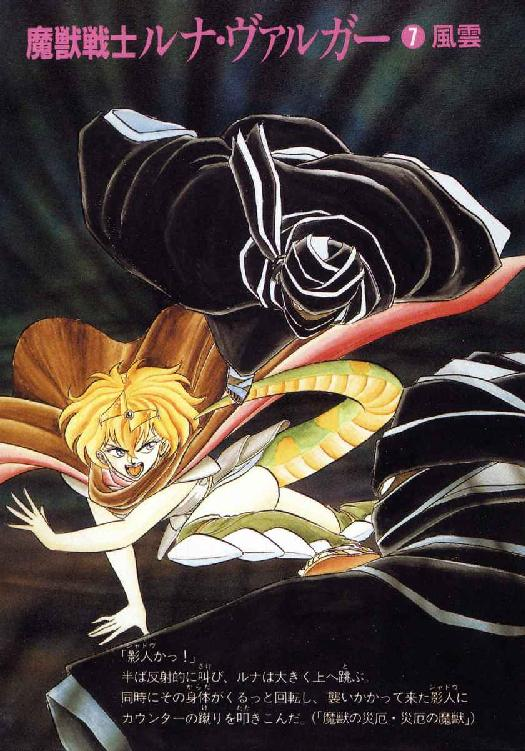

| 魔獣戦士ルナ・ヴァルガー＜７＞風雲 | |
| 秋津 透 | |
| (2014) | |

魔獣戦士ルナ・ヴァルガー
⑦風雲
秋津 透
本作品の全部または一部を無断で複製、転載、配信、送信したり、ホームページ上に転載することを禁止します。また、本作品の内容を無断で改変、改ざん等を行うことも禁止します。
本作品購入時にご承諾いただいた規約により、有償・無償にかかわらず本作品を第三者に譲渡することはできません。
本作品を示すサムネイルなどのイメージ画像は、再ダウンロード時に予告なく変更される場合があります。
本作品は縦書きでレイアウトされています。
また、ご覧になるリーディングシステムにより、表示の差が認められることがあります。
目 次
口絵・本文イラスト あろ ひろし
登場人物
ルナ・ド・リムズベル リムズベル公国の第二公女。魔獣と合体中。
魔獣ヴァルガー 伝説の大魔獣。無敵の威力を誇る。
ミル・ユード 貿易商兼帝国青年貴族。ルナと親しい。
ロコ 有翼黒猫。ルナの使い魔。
リル（リム・リリス） プロの色事師娘。実は獣人（縞兎）。
レイピア・ロナ ミル・ユードに忠誠を誓う女戦士。
ギルバート・エゼン 黄金飛行竜を召喚する魔道士。どっか一本ぬけている。
スミス・チョーサー いつも笑顔の若手魔道士。晴天を呼ぶ。
チャーラン・ポーラン 情報中継業者を自称する魔道士。海栗を召喚する。
ヤンリー・ユード ミル・ユードの異母弟。十四歳。
ニコライ・ドレスデン 海賊商人一族の艦隊司令。
アレクサンドル・ドレスデン ニコライの実弟。ログリアン駐在官。
六十一、六十二、六十三、六十四 影を走る者の密偵たち。
第一章 リムズベル公国、変化あり
１
「ここが、リムズベル公国かあ」
峠の上から入り江とその向こう側の小城をのぞみ、十四歳のヤンリー・ユード少年は思わず感嘆の声を出した。
「なるほど、これは攻め難いだろうな。うーん、グラ・ゴルン将軍が兵を返したのも、こりゃあ、無理ないや。これを陥そうと思ったら、艦隊で湾を封鎖した上で兵糧攻めにもち込むか、それとも......」
「若君、大声でそーゆー事を言わんといてもらえますか」
少年の脇に立っている頭巾付きマントを着た男が、苦笑まじりの声で注意する。
「ここはもう沿海都市の北、帝国の勢力範囲外でっせ。うかつな事口走ると、冗談抜きで生命が危ないですがな」
「ああ、わかった。大丈夫、気をつけるよ」
あっさりとした口調で言うと、少年はにこっと笑ってうなずいた。本当にわかっとるんやろか、この若君は、と連れの男は内心首をかしげる。まあ、帝国でも有数の大貴族の次男坊にしては、尋常な性格しとるよーやけどな。
「ほな、行きまっせ」
そう言うと、男はすたすたと峠を下り、川沿いの街道を南に曲がる。何げない足取りではあるが、その速度は異様なまでに捷い。少年はやや小走りになって、男の背後に続く。
そして、道が険しい崖にさしかかっても、男の歩行速度は変わらない。さすがにちょっと間を開けられた少年が、待ってくれーと声をかけようとした時、不意に男の足が止まった。別に、背後の同行者を気遣ったわけではない。崖の上から、まさにひょっこりといった感覚で、若い戦士が姿を現わしたのである。
「やあ、こんちわ」
戦士は一見無雑作な、しかしよく見ると隙のない動作で二人に歩み寄った。
「ところでお二人さん。この先には、リムズベル城があるっきりなんだがね。城に、何か用かい？」
「はあ」
半ば無意識に一歩退がりながら、男は軽く頭を下げる。
「あの、広域貿易商人のミル・ユードという御方を訪ねておるんどすけど、そちらのお城におられませんでっしゃろか？」
「ふーむ」
目的の人物がいるともいないとも答えず、戦士は顎を撫でながら二人に訊ねた。
「あんたがた、何者だい？ おっと、訊ねるからにはまず自己紹介をしておこう。俺はリムズベルの戦士長カーライル」
「ワシは吟遊詩人のサンドゥ・ルーンという者ですわ。こちらはユード家の縁者、ヤンリー・ユード。どうぞよろしゅう」
男は頭巾を脱いで、再び軽く頭を下げる。日焼けした容貌に、愛嬌はあるのだがどこか不敵な表情をうかべる相手を見やって、戦士長は小さく苦笑した。
「吟遊詩人か。あんまりそれっぽい感じじゃないが、まあ良かろう。城まで案内するから、俺について来い」
「へい、どーも」
もう一度、吟遊詩人がへこっと頭を下げる。その間に戦士長は相手に背を向け、さっさと山道を登り出した。
ダンバス帝国との大攻防戦と魔獣ヴァルガーの出現からおよそ百日、リムズベル公国は久方振りに平穏な雰囲気に包まれている。その理由は、三日前北方から公国の第二公女ルナ姫が戻って来たからに他ならない。以前から猛将公女として兵の信頼を集めていた彼女だが、今や、直立巨竜を意のままに操り、故郷を帝国から救った大英雄という事になっている。そのルナ姫さまがお帰りになったのだから、公国のほとんど全員が、これで枕を高くして眠れると、安堵の息をついたのも当然だろう。もちろんカーライルも、彼女が戻って来たのを喜ぶ気持ちに変わりはない。
「ただ、問題はルナ様と一緒に北方から押しかけてきた連中だよな。妙ちきりんな魔道士が三人、猫だか少年だかわからん使い魔、生意気な蓮っ葉遊女に、かなりの技量の女戦士、そして腹に一物ありそな貿易商人。程度の差はあるにしても、どいつもこいつも仮面のジャックと互角のうさん臭さじゃないか」
険しい山道を歩きながら、戦士長は言葉には出さずに呟いた。
「特に貿易商人ミル・ユードという男、一見尋常そうなだけに、かえって怪しいぞ。十中八、九、あいつは帝国の息がかかってるな。てことはつまり、この吟遊詩人と称してる男やその連れも、まず間違いなく帝国の諜者って事になるわけだ。さあて、そこでこの俺、リムズベルの戦士長カーライルはどうするか」
むしろいささか楽しげに、戦士長は自問自答を続ける。その背後には、相変わらずすたすたと吟遊詩人が従う。大した健脚だな、と思いながら、カーライルは油断なく相手の気配を計っている。もし背後の男が愚かにも彼を襲おうとしたら、即座に抜き打ちで斬り倒す思惑だ。と、その時、吟遊詩人がカーライルに屈託のない声をかける。
「すんませんが、少し歩調を緩めてもらえませんやろか。ヤンリーの若君が、ちょいと遅れてしもうとりますんで」
「ん、わかった」
振りむいて、戦士長は軽くうなずいた。確かに、少年はかなり後方にとり残され、ひいはあ言いながら山道を登っている。カーライルはとりあえず足を止め、涼しい表情をしている吟遊詩人を見やった。
「ずいぶん健脚だな、あんた。吟遊詩人はあちこち放浪する職業だとは聞いているけど、山登りなんか、よくやるのかい？」
「いえ、そういう理由とは違いますけど」
にやっと笑って、吟遊詩人はひょいと足を上げる。戦士長は一瞬身構えかかったが、サンドゥは自分の足元を指さしてみせただけだった。彼が、山歩きにはあまり適当とは思えない飾りのついた突っかけを履いているのを見て、カーライルはさすがに軽く眉を寄せる。
「おいおい、あんたサンダル履きで諸国放浪してるのか？ 冗談にしたって、そいつはちょっといただけないぜ」
「いえいえ。実はこれが、尋常の突っかけではないんですわ。何と、東方大陸は魔道都市製、名人と言われた職人の技による魔道具ですねん。これを履いて歩けば、たちまち脚は軽くなり、険しい山岳も平地と同じ、泥湿地も砂地も問題なし。さすがに水の上だけは歩けまへんが、かわりに一日五日旅程を、楽々踏破できまっせ」
そう言って、吟遊詩人は得意気ににんまりと笑う。
「まあ、ちいっと制御が難しゅうおましてな。馴れん者が履くと、死ぬまで足が止まらんちゅう事故も有るよーですが。少なくとも、ワシにとっては重宝な魔道具ですわ。何と言うても、突っかけのおかげで、諸国諸地方の事件をいち早く見聞して、吟詩にする事ができますんでなあ。文字通り、仕事の基ですわ」
「なるほど、魔法のサンダルか」
納得した表情で、戦士長は軽くうなずいた。どうやらこのサンドゥという男は、情報速達業者を本業にしているらしい。元来、吟遊詩人にはそういった要素があるが、彼の場合は特に極端なのだろう。しかし、という事は、ますますもって諜者の可能性が強いわけだ、と戦士長は相手に鋭い目を向けた。
「それで、あんた、リムズベルでどんな吟詩を御披露するつもりなんだい」
「そうでんな。お気に召すかどうかわかりまへんけど、ひとつ挽歌でもやりますか」
吟遊詩人は、ほとんど飄々と称したくなるような表情で答える。戦士長の片眉が、不審そうに動いた。
「挽歌？」
「はあ。ダンバス帝国の雷鳴帝が死によりましたんで」
この返答には、さすがのカーライルも思わず目を剝く。帝国の皇帝が、死んだって!?
「おい、本当かい、その情報!?」
「もちろんですがな。ワシの吟詩は、真実のみを歌うことで有名なんでっせ。嗚呼、一代の英雄ここに斃る。いかに剛き王者も、病気と老齢に克つ術はなし、じゃんじゃん」
サンドゥは、小型の楽器を取り出して、妙な節をつけて吟じ始めた。そこへ、やっと少年が追いついてくる。カーライルは半ば意識せずに腕を組み、声には出さずに呟いた。
「こいつは、どう転んでも一騒動ありそうだな。さて、それがリムズベルにとって、吉と出るか、凶と出るか」
２
「 ーん......困ったわねー......」
ーん......困ったわねー......」
かすかに眉を寄せ、ルナ・ド・リムズベル公女は溜息混じりの声で呟いた。
「あんたの言う事も、もちろんわからないわけじゃないんだけど......」
「あったり前よっ！」
彼女の妹、ヴィーナ・ド・リムズベル公女が、かなり苛立たしげに言い放つ。
「あたしだって、帰って来たばっかのルナ姉さまに、こんな文句言いたかないわよっ。言いたかないけど、姉さま、いったいどーしちゃったのっ？ 以前のルナ姉さまだったら、場所もあろーにこのリムズベル城で、遊女なんかが跳梁跋扈してるの見たら、絶対黙っちゃいなかったはずよっ！ それが何よっ、目いっぱい弱腰になっちゃってっ！ あのリルとかいう遊女、いったい姉さまの何なのよっ！」
「何なのよって言われても......ーん、困っちゃったなー......」
本当に困り果てた表情で、ルナは額に指をあてる。彼女とリルの奇妙きてれつな関係を妹に説明したところで、論議が一層こんがらがるのがおちだろう。とはいえ、何とか妹を納得させないことには、少なくともこの場の収拾がつかない。魔道都市での厄介事は何とか穏便に済ませてもらったけど、ここは地元だけにかえって面倒なのよねー、とルナはもう一回溜息をついた。
魔道都市での厄介事というのはやっぱりリルの関係で、娼家組合と正面衝突してしまった一件である。リルに言わせりゃ組合側にも非はあるらしいが、とにかくルナは全面的に詫びを入れ、当事者を連れて魔道都市から去る約束をした。この全面妥協策は、評議長の仲介もあってうまく図に当たり、ルナたちは少なくとも娼家組合や民生局とはそれ以上揉めずに、魔道都市を後にする事ができたのである。
当然ながら、リル本人はこの方策がかなり不満だったらしい。しかし、勘のいい彼女は事態の剣吞さを敏感に察知したらしく、表面的には比較的おとなしく、ルナと一緒に魔道都市から立ち去った。そして、三日前リムズベルに着くが早いか、いきなり城内の一角で個人営業の遊女宿を開業してしまったのである。この地には、娼家組合はもちろん風俗関係の同業者がまったく存在しないので、リルの遊女宿は開店と同時にたちまち大繁盛となった。もっとも客の大部分は、うおーどんどんどんどんどんと押しかけた海蛮人たちで、さしものリルもかなり消耗したらしい。年中無休の予定が、隔日営業しかも夜のみに変更されたのだから、まあ、やはり彼女にも限度というものはあるという事になる。
当然ながら、リルの風俗活動はルナの耳にも入って来たが、公女は軽く苦笑しただけで口出しをしようとはしなかった。とにかくリルはそーゆー性格なんだから、それにどーこー文句つける事はない。誰かに迷惑をかけてるならとにかく、海蛮人たちは大喜びしてるっていうし、まあ、いいんじゃない、というのが彼女の正直な感想だった。
しかし、リムズベル城内の実権を握ると言われる侍女たち、特に割に年齢の高い古株の侍女たちは、公女殿下ほど寛容な気分にはなれなかったらしい。しかも、そこへもってきて、リルが若い侍女に秘かにアルバイトの口を持ちかけたという噂が流れ、彼女たちの感情は一気に悪化かつ激化した。そして侍女たちは、例によって暖簾に腕押しの第一公女を避け、今や事実上公国を運営している第三公女に向かって、不埒な遊女を取り締まっていただきたいと訴えかけたのである。ヴィーナ公女はさほど潔癖症というわけではないが、遊女に寛容になる理由も何ひとつない。それでもまあ、ルナ姉さまが連れて来た女性なんだからという理由で、彼女は最初に姉公女の部屋に談判に来たのである。
「ほんっとにもー、ルナ姉さまともあろう英雄が、こんな小事で困り果てた顔しないでよねっ！」
憂い顔の姉を見すえて、ヴィーナはまたまた腹立たしげな声を出した。
「だいたい、姉さまの容貌ってのは、笑ってるか決然としてるか、どっちかじゃなけりゃ映えないんだからっ！ 悩んだり泣いたり溜息ついたりなんて、だめよっ。絶対に似合わないわよっ！」
「あんたも、言うよーになったわねー」
軽く苦笑して、ルナは憤然としている妹を見やる。まだまだ子供と思っていたけど、この子はこの子で精神的にしっかりと成長しているらしい。動乱は人間を育てると言うけれど、とルナはふと思った。さて、あたしは故郷を離れている間に、どのくらい成長したかしら？
「ま、そこまで言われちゃ、あたしもぼやいてばかりもいられないわね」
呟くと、ルナはゆっくりと背もたれのない椅子から立ち上がった。
「ヴィーナ、あんたには明確に言っとく。実はあたし、リルを取り締まったりする気、全然ないの」
「えーっ!?」
妹公女が紺色の目をまん丸く見開く。
「ね、姉さま、それ、本気っ!?」
「もちろん本気よ。本気だから、困ってたんじゃない」
そう言って、ルナは小さく肩をすくめた。
「確かに、あんたや侍女連中が遊女とかそーゆーの、良く思わないのはわかるわよ。だけどねー、我らが故郷も、今や辺地の古小城じゃなくなっちゃってるんだから。港はできる、海蛮人は来る。帝国との緊張関係が安定すれば、海上交易商人だって集まって来るはずよ。それはあんただって、わかってんでしょう？」
「ええ、それはまあ、そうだけど」
ヴィーナはやや上目遣いになって、長身の姉を見上げてうなずく。ルナはにこっと笑って、うなずき返した。
「だったら、遊女宿の一つぐらいで目くじら立ててちゃだめよ。これからは、清濁あわせ吞むぐらいの度量でいなくちゃ。いいこと、ヴィーナ。都市が繁栄するって事は、その分だけいかがわしいー連中が流れ込んで来るって事なんだから」
「まあ、それも確かに、そうだけど」
でも、侍女連中は納得しないだろーなー、と今度はヴィーナが溜息をつく。が、次の瞬間彼女はちょっと険しい表情になって、姉を見上げた。
「確かにルナ姉さまの意見、道理だわ。でも、道理は道理だけど、もしも遊女宿を開業したのが彼女じゃなかったら、姉さま、そこまで甘くなれた？」
「え？」
いささか戸惑った表情で、ルナは妹を見返す。ヴィーナは半ばにらむような、真剣そのものの目つきで姉を見すえて言葉を続ける。
「侍女たちの間では、噂になってるわ。あのリルって遊女は、ルナ姉さまに馴れ馴れしすぎる。もしかしたら、姉さまのこと蕩らしこんじゃってるんじゃないかって」
「なるほどねー」
ルナは思わず、苦笑をうかべてうなずいた。
「やっぱり、わかるか。悪いことって、できないもんねー」
「ね、姉さまっ!?」
再び、ヴィーナの目が驚愕でまん丸くなる。
「そ、それっ、本当なのっ!?」
「噓だと言ったら、それこそ噓になるわ。でもこれ、できるだけ内緒にしといてよ」
まあ、言われなくたって、こんな事言い触らすようなヴィーナじゃないけど、とルナは半分硬直している妹の頭にぽんっと手を置いた。その動作ではっと我に返ったらしく、少女はかなり泡をくった口調で訊ねる。
「あのっ、それじゃあのやっぱり、彼女を取り締まりしないのは、そーゆーその、やっぱりあれで、その、これだからなのっ？ やっぱりそれで、そーゆー事なのっ!?」
「あたしは、そんなつもりじゃないけどね」
いまいち質問の意味がとり難かったが、とりあえずルナは苦笑をうかべたまま答えた。
「もし、遊女宿を開業したのがリルじゃなかったとしても、別に取り締まりはしなかったと思うわ。ただ、帝国かどこかの諜者だったら困るから、それは調べるけどね。まあ、リルだったら気心が知れてるから安心って程度の違いかな」
もっとも、彼女の気心ときたら間違っても安心できるよーな代物じゃないけど、とルナは内心ぺろっと舌を出す。でも、リルはどこの諜者でもないし、これからも誰かに支配される事はないだろう、とルナは思っている。
「ま、彼女と寝たことあろーがあるまいが、あたしはこの件については口出ししないつもりよ。大公殿下やゼナ姉さま、それにあんたが取り締まる方針に決めるなら、それはそれで一つの方策だしね。でも、この地を貿易港として発展させてく意向なら、あんまり細かい事に神経質にならない方がいいと思うな」
「それはあたしだってわかってる。少なくとも、理性ではわかってるつもりよ」
そうでなけりゃ、反主流派海賊のジャックを海務卿に任命したりするわけないでしょ、とヴィーナは言葉には出さずに続けた。
「でも、そういう言い方って、あんまりルナ姉さまらしくないなあ。妙に冷静で、何ていうのかしら、他人事みたいに突っ放してるように聞こえるわ」
「まあね」
あたしは、熱くなるわけにはいかないのよね、とルナは小さく苦笑する。うっかり逆上すれば魔獣変身やらかす可能性があるし、そうなったら、他の魔獣が封印を破ってよみがえって来かねない。この危険性については、魔道都市を発つ時、評議長からしつっこいぐらいに釘を刺されている。しかも、昨日水棲人の族長から聞いた話では、八百年前の世界に君臨していた魔獣は、魔獣王の他に十二体存在していたらしい。その中には魔獣四天王とか称して超絶な威力を誇っていた魔獣もあり、あの死の魔獣さえ問題にしなかったという。
「さすがにそんな怪物、呼び起こしちゃったら大変だもんねー。らしくあろーがなかろーが、とにかく魔獣戦士は自己制御に務めにゃならんのよ」
声には出さず、ルナは苦笑まじりに呟いた。それに、妹の言う通り、彼女にとって故郷はもはや他人の場所のような感覚がする。時間にすればほんのわずかだが、故郷を離れている期間に普通じゃできない体験をいくつもくぐった。故郷の方も、元はと言えば彼女自身が原因だが、とにかく短期間のうちに驚くほど変わっている。もしかするとあたし、故郷に長居はしないかも知れないな、とルナはふと思った。
その時、部屋の扉がとんとんっと鳴る。ロコかな、と思ったルナの耳に、ちょっと意外な声が聞こえた。
「公女殿下、よろしいですかっ？」
「あら、レイピアさん。どーぞ」
ルナの声に応じて扉が勢いよく開き、長身の女戦士がつかつかと入って来る。妹公女がいるのを見て彼女はわずかに柳眉を寄せたが、すぐに琥珀色の瞳をルナに向け、やや気ぜわしげに口を開いた。
「公女殿下、我が君が急用でお会いしたいと申しておりますが、お時間をいただけますか？」
「急用、ね」
そう言って、ルナは妹をちらっと見る。まだ彼女の談判は完全には終わっていないようだが、さほど緊急の用件でもなし、打ち切りにしてミル・ユードと話をすることにしよう。
「わかったわ。じゃあ、ヴィーナ、悪いけどこれでね」
「うん......」
ヴィーナは眉を寄せ、口をへの字に結びながらもどうにかうなずいた。だが、次の瞬間彼女は視線をさっと女戦士に向け、いささか棘のある口調で訊ねる。
「ね、急用っていったい何なの？ あなたの雇主さんは貿易商人なんでしょ？ 何か商売の話でもあるの？」
「ヴィーナ！」
ルナが、珍しく咎めるような声を出した。しかしレイピアは意外にも、澄ました表情で首を振る。
「いえ、商売の話ではありませんわ、小公女殿下。実はダンバスの皇帝陛下が、崩御なさったという報告が入ったのです」
「えーっ!?」
今度はルナとヴィーナの目が、同時にまん丸く見開かれた。ほーらやっぱり驚いたっ、と女戦士は思わずくすっと微笑する。だが、彼女はすぐに真顔に戻ると、ルナに向かって訊ねかけた。
「それでは、済みませんが急いで来ていただけますか。我が君は、公女殿下同席の上で詳しい報告を聞く、と申しておりますから」
「わかったわ、すぐ行く」
ルナがうなずくが早いか、レイピアはくるっと背を向けて扉から出てゆく。ルナも即座に、彼女に続いて部屋を出た。妹公女はちょっとあっけにとられていたが、二、三歩遅れて廊下へ出る。だが彼女はそれ以上姉たちを追わず、小さく肩をすくめてゆっくりと扉を閉めた。
３
「不審を持たれるような死に方じゃなかったという事だね」
広域貿易商人で、帝国屈指の大貴族カルバドク侯ユード家の嫡男でもあるミル・ユードは、ごく穏やかな声でサンドゥ・ルーンに訊ねた。吟遊詩人の方も、きわめて無雑作にひょいとうなずく。
「はあ。少なくともそんな噂は、ちーとも聞こえまへんどしたなあ。元気いうても雷鳴帝陛下、とーに七十過ぎてましたし。まあ、ひっくり返って急死てのは、ある事ですわ。後継者もちゃーんと決まっとりますさかい、何も問題ないんとちゃいまっか」
「まあ、確かに帝国の屋台骨が大きくゆらぐ事はないだろうけどね」
そう言って、ミル・ユードは小さく首を振った。
「でも、皇帝が変わって何の問題もないって事はないよ。どう控え目に見ても、かなりの変化があるはずだ」
「そこはまあ、比較の問題つう奴でんな」
吟遊詩人は、ちょっととぼけた表情でにやりと笑う。と、今度はもう一人の来訪者、ヤンリー・ユード少年が、これまた何となく瓢々とした口調で喋り出した。
「ええ、まあ、そーゆーわけですんで、この皇位継承の動乱に備えて、兄上には、まあできるだけ早く本拠地に戻って来てほしいんだと、ええ、母上は言ってました。僕もまあ、そうですね、大むね母上の判断で正しいと思いますけど」
「そうだな」
青年は、やや重い感じの声で答える。ルナは思わず、彼の表情をじっと見やった。ミル・ユードは軽く眉を寄せて何か考えていたが、ルナの視線に気づくと、安心させるようににこっと微笑する。このやりとりに気づいたのかどうか、青年の異母弟と名乗った少年は、そのまま瓢々と言葉を続けてゆく。
「それでまあ、もしも兄上に商売の上で手の離せない用件があるんでしたら、とりあえず僕が代わりますから。ええ、北方には、そのために来たんですから、とにかく代わります。ですから兄上は、まあ急いで故郷へお戻り下さいよ。後は何とかなりますから」
「相変わらずだな、ヤンリー」
兄は、苦笑をまじえて答えると、再び小さく首を振った。
「しかし今のところ、代わってもらわなくちゃならない用件はないよ。少なくとも、商売の上ではね」
「ああ、それならますます都合がいいや」
そう言って、弟は開けっぴろげな感じの笑みをうかべる。
「一緒に帰りましょう、兄上」
「そうだな」
ミル・ユードは、つい先刻答えたのと同じ返事を、今度は苦笑まじりに呟いた。そして彼は、濃灰色の瞳を吟遊詩人の方へ向ける。
「念のために訊くけど、後継者ってのは皇太子なんだろ？」
「へえ、皇太子ノワール、通称黒竜太子が、早々と帝都に戻って来とりますわ。もしかすると、略式の戴冠式済ませとるかも知れまへんな」
吟遊詩人がごく無雑作な口調でそう言ったとたん、ミル・ユードの眉がぎゅっと寄った。事情を知らないルナには良くわからないが、どうやら状況は彼にとって、というか、彼の実家にとって不利らしい。
「皇位継承が順調に運びすぎるというのも、良し悪しだな。まあ、黒竜太子は事を急ぐ性格じゃないが......」
「そうは言うても、海賊侯の大総裁は、もう帝都に腰すえっぱなしでっせ。いったい全体、何を企んどるんかは知りまへんけどなあ」
またもサンドゥが、いかにも何げない調子で、一同がぎょっとするような情報を口に出す。
「これはもしかすると、一刻を争う事態やないかとワシは思うんやけど、どないでっしゃろか、ロード・カルバドク」
「そうだな」
ミル・ユードは、三度同じ返答を口に出した。しかし今度は、重たげでも苦笑まじりでもない。決然とした、しかし同時に自分の身体の一部を斬り払ったような、鋭い痛みを感じさせる口調だった。そして青年は、報告が始まってからずっと沈黙を守っていた女戦士に、濃灰色の瞳を向ける。
「レイピア、魔道士連中に知らせてくれ。僕は明日の早朝リムズベルを発って南方に向かう。一緒に来るなら、用意をしておくように、とね」
「わかりました、我が君」
レイピア・ロナは静かにうなずいた。その口元がわずかに綻んだ、と見たのはおそらくルナの僻目だろう。続いてミル・ユードは、二人の来訪者に指示を出す。
「ヤンリーは、僕と一緒に南方へ戻る。サンドゥ・ルーン、あんたには、御苦労だけどもう一仕事してほしい」
「へえ、何でっしゃろ？」
例によって飄然と、吟遊詩人が訊ねた。青年も、どちらかと言えば淡々とした口調で答える。
「魔道都市アルタイオに、ロビス谷の領主バト・ロビスが滞在している。彼に、皇帝崩御の情報を伝えてほしい」
「バト・ロビスって......あの、無謀戦士のバト・ロビスでっか!? そ、そらあかん！」
無謀戦士の名を聞いたとたん、今まで余裕綽々の表情をしていた吟遊詩人が、不意に動揺した声を出した。
「す、すんまへん、あの大将だけは勘弁してもらえまへんやろか？ 何せあの大将、ワシら吟遊詩人に偏見持ってますさかい、話をするより先に、『軟弱者っ！』ってんで張り倒されてしまいますがな」
「大丈夫。あんたの脚力には、さしもの叔父上も追いつけないよ」
まるで事もなげに、ミル・ユードがにこっと笑う。吟遊詩人は、目いっぱい情ない表情になって首を振った。
「そーゆー問題とちゃいますねん、これは。実際、ほんまに参ったなーっ」
「まあ、気がすすまないのはわかるけど、この情報を可能な限り急いで叔父上に届けないと、正直言って後が怖いからね」
そう言って、青年は小さく肩をすくめる。サンドゥは深く溜息をついて、いかにも渋々といった感じでうなずいた。
「まあ、しゃあないなあ。ロード・カルバドクのたっての頼みやさかい、気は重いけど行って参りますわ」
「済まないね、よろしく頼む」
これで叔父上も、魔道都市から腰を上げざるを得まい、とミル・ユードは声には出さずに呟く。リム・リオネルが子を産むまでは北方に留まる、と言っていたが、本気で故郷を捨てる気でもない限り、戻らないわけにはいかないはずだ。そしてそれは、僕も御同様なんだよな、と青年は小さく溜息をつく。
「それでは以上だ。みんな、準備にとりかかってくれ」
「へーい、へい」
渋い表情ながらも、とにかくうなずいてサンドゥが立ち上がり、ヤンリー少年と一緒に部屋を出て行った。女戦士は少しの間留まっていたが、主君がやや沈んだ表情で目くばせすると、静かにうなずいて部屋を出る。後には、ミル・ユードとルナの二人だけが残された。ごく短い、しかしかなり気詰まりな沈黙をおいて、青年が意を決したように口を開く。
「公女殿下、聞いての通りだ。僕は故郷に戻らなくちゃならない。しばらくの間だとは思うけど、お別れだ」
「一緒に行っちゃいけないかな？」
多分無理だろーなーと思いながらも、ルナは一縷の望みをこめて訊ねてみた。しかし、ミル・ユードは案の定静かに、しかしきっぱりと首を振る。
「僕も考えてはみたけど、あまりにも危険が大きすぎる。何と言っても、今のところダンバスとリムズベルは戦争状態の真最中なんだからね」
そう言って青年は、公女の顔をじっと見おろした。表情は、まさしく真剣そのものである。
「いいかい、ルナ。ダンバス帝国が大北征をあきらめて、リムズベルと講和を結ばない限り、僕らは結婚するどころか、大っぴらにつき合う事さえできない。少なくとも、僕がカルバドクの嫡男で、君がリムズベルの公女である以上はね。わかるだろう？」
濃灰色の瞳に見すえられ、ルナはこっくりとうなずいた。何か言いたい、と思うのだけど、うまく言葉を見つけることができない。青年は、無言で彼の瞳を見つめる公女殿下に小さくうなずき返し、そして言葉を続ける。
「正直なところ、僕は君と一緒にいるためなら、卿の身分など捨てようか、と思ったこともある。でもそれは、今の僕を造ってくれた故郷のすべてを捨てる事なんだ。一族と同朋から与えられた信頼と責任のすべてを放り出すような男が、ルナ、君にふさわしいとは思わない。そうだろう？」
「ミル......」
かろうじて小さく呟いて、ルナは再びこっくりとうなずいた。実際、彼がそこまで思い詰めてたなんて、彼女は思ってもいなかったのである。しかし、言われてみれば現在の状況のもとで彼と彼女が結ばれようと思ったら、ルナが魔獣と合体しているのを別にしても、二人の身分が決定的に邪魔になってしまう。現にこのリムズベル城内では、彼が帝国の有力貴族カルバドク卿である事は、北方から来た連中以外には極秘になっている。
だけど、あたしはリムズベルを捨てようか、なんて考えは持ったこともなかった、とルナは心の中で唇を嚙んだ。それは、あたしが彼を、本気で一生の伴侶と考えていなかったからなのだろうか。いや、違う、逆だ、と彼女は言葉に出しかかった。だが、それより先に、ミル・ユードの穏やかな声がルナの耳に入る。
「だから僕は、カルバドク卿の称号を持ったまま、君を迎えられるようにしなくちゃいけない。そのためには、何としても大北征を終わらせて、ダンバスとリムズベルを講和させる。そうすれば、カルバドクの嫡男がリムズベルの公女を妻に迎えるのに、何の障害もなくなるからね。そして今、大北征を命じた老皇帝は死んだ。確かにこれは、講和の好機ではある」
「それは、確かにそうね......」
でも、と言いかかって、ルナは再び言葉を吞みこんだ。ミル・ユードの声は、穏やかな中にもかなりの力と熱がこもり始めている。少なくとも彼が言いたい事を言い終えるまで、それに水をかけるような真似をしたくない。その沈黙を同意と受けとり、青年は更に言葉を続ける。
「とは言っても、状況がかなり厳しいのも確かなんだ。新皇帝のほとんど唯一の候補は、皇太子のノワール・ダンバスって男だが、彼は根っからの武人でね。意味もなく戦争を好むとまでは言わないけど、どう間違っても平和を好む性格とは言えない。何しろ通称が黒竜太子、帝国の南縁を見事なまでに鎮圧しきった猛将だ。しかも、大北征の黒幕じゃないかとも言われてる海賊一族の大総裁が、ずっとダンバスに居すわってるらしい。奴の狙いが新皇帝に大北征継続を吹きこむ事なのは、まず間違いないだろう」
「確かに、厳しい状況ね」
相手の熱っぽさに釣られるような感じで、ルナは思わず口を入れた。青年は得たりとばかりにうなずいて、彼女の目をしっかりと見すえる。
「しかし、僕は必ず新皇帝を動かして、ダンバスとリムズベルを講和させてみせる。そして、誰をも憚ることのない状況のもとで、ルナ・ド・リムズベル、君を妻に迎えると約束するよ。だから、僕を信じて、しばらくの間待っていてくれ。いいね？」
「あなたがそう言うなら、信じるわ」
ルナは、ややぎこちない、抑えた口調で答えた。そして青年が一瞬、訝しげに眉を寄せたとたん、彼女はいきなり半分泣き声のような叫びをあげる。
「でも、いいのっ？ 本当にいいのっ？ ミル、あなた、あたしの正体知ってるんでしょうっ？ それなのに、求婚なんてしちゃって、本当にいいのっ!?」
「もちろんだっ」
間髪を入れず、ミル・ユードが答えた。青年の両手が、ルナの両肩を強く抱える。
「妻とするなら、君しかいない。どんな障害があろうとも、だ。天地のすべてに懸けて誓うよ」
「でも、でもっ、あたしは魔獣よっ。人間の姿はしてるけど、実態は怪物なのよっ。あなただって知ってるでしょうっ？」
もはや完全に泣きじゃくりながら、ルナは青年にむしゃぶりついた。その勢いで彼は一瞬よろけかかるが、ぐっと踏んばって何とか受け止める。公女はしゃくりあげながら、とぎれとぎれに言葉を継ぐ。
「一緒に冒険して、仲間として、戦友として、扱ってもらえて、それだけでも、とっても嬉しかったの。でも、結婚相手と、見てもらえるなんて、とても、そんな、信じられないっ。やっぱり、信じられないわよーっ」
「そんな事言わずに、信じてくれよ。信じてくれるって、言ったじゃないか」
穏やかな、これ以上ないぐらい優しい声で、ミル・ユードは恋人をなだめる。ルナはしばらく、ぐしゅぐしゅとべそをかいていたが、やがて涙に濡れた瞳で恋人を見上げた。
「本当に、信じていいのね？」
「信じてくれ」
囁くように言うと、ミルはそのままルナの唇に自分の唇を重ねる。ルナにとっては初体験の、男性との接吻であった。
長いんだか短いんだか良くわからない時間が流れ、やがて二人は自然に唇を離す。そして顔を見つめあった時、不意にルナがくすっと小さく笑う。
「泣いたのなんて、本当に久し振りよ。ごめんなさいね、取り乱しちゃって」
「たまには、いいさ。気にするな」
実際、魔獣変身するところまで行かなくて、本当に良かった、とミル・ユードは内心吐息をついたが、もちろん言葉に出すような真似はしなかった。
４
「えーっ？ もうリムズベルを出てしまうんですかー？」
魔道士スミス・チョーサーが、分厚い眼鏡の奥の細い目を、それでも精一杯丸くして叫んだ。この人の笑ってない顔って初めて見るような気がするな、と思いながら、レイピアは小さく肩をすくめる。
「あたしたちは、明日の早朝出発するって言ってるだけよ。公女殿下たちは残るんだから、別に無理して出発組について来る必要はないわ。ただ、一緒に来るなら準備しときなさいって伝言ね」
「しかしレイピア。君は当然、出発する方の一員なのだろう？」
ギルバート・エゼンが、例によって気取った声で訊ねた。女戦士は、わずかに柳眉を寄せて、短く答える。
「もちろん、そうよ」
「それなら、私がリムズベルに残ることなどあり得ない事さ。だいたい、私は君と一緒にいたいからこそ、故郷を後にして、この冒険の旅に参加したようなものなのだからね。こんな中途で置いていかれたのでは、たまらないよ」
ふっ、と笑って、ギルバートは左手で前髪を払う。あー、頭痛いっ、とレイピアは小声で呟いた。しかし、正直言って彼女は、半ば無意識にではあっても、ギルバートは一緒に来るもんだと決めてかかっていた様子がある。もし彼がリムズベルに残るなんて言い出したら、一番驚き困惑するのは、多分彼女だろう。
と、学友ギルバートに続いて、今度はアチャラカ・スチャラカ・チャーラン・ポーランが、頼まれもしないのに大声で騒ぎ立て始める。
「わーたしも行くぞー。何と言ってもこのわーたしは、『でいりい・あるたいお』南方特派員として、最高評議会のお墨付きをもらっている身だぞ。しーたがって私には、あたうる限り南方へ進み、事実と真実と奇談と珍談を手当たり次第取材して、アルタイオの皆さまにお届けするとゆー、崇高にして都合のよい大義名分があーる。わーはははははははは、進め、正義は我にありーっ。どーだ、偉かろー。えっへん」
それこそ勝手放題な言葉を喚き散らして、チャーラン・ポーランはずずいと胸を張る。毎度のことだけど、これって本当に本気でそう思ってんのかしらねー、とレイピアは半分以上あきれ返った口調で呟いた。
なるほど確かに、『でいりい・あるたいお』編集発行無責任者、アチャラカ・スチャラカ・チャーラン・ポーランに、魔道都市最高評議会が南方の地を調査して来るように、公式に命じた事実に間違いはない。しかし、調査期間も目的も、更に言ったら予算さえ示されていないこの調査命令は、はっきり言って体裁のいい追放である。小冊子を作ったからといって処罰するわけにもいかないが、かといって放っておいたらどんな不祥事巻き起こすか知れたもんじゃない。そこで評議会は、適当な任務を与えて馬鹿をあっさり放り出したわけだ。
ところが当人はそれに気づいているのかいないのか、とにかく何かというと『評議会のお墨付きを持つ、南方特派員なのだーっ』と喚いて、えっへんと胸を張る。まったく、鈍感とゆーか、愚者の幸福とゆーか、とレイピアは溜息まじりに肩をすくめた。
一方、他の二人の魔道士が早々と南方行きを決めたのに対して、残りの一人、スミス・チョーサーは、珍しくも額を抑えて思い悩んでいる。
「うーん、うーん、どーしよーかなー。ギルバートさんもミスター・ポーランも行ってしまうとなると、これはちょっと寂しいものがあるなー。だけど、リムズベルにはヴィーナちゃんがいるし、彼女とは何とも離れ難いものがあるわけで、うーん、悩んでしまうなー。はっはっはっはっ、はははのは」
まったく、悩む時まで笑ってんだから、と女戦士は細面の魔道士を見やって苦笑した。とは言っても、チョーサー自身はかなり真剣に悩んでいるらしい。もしかしたらこの人は、リムズベルに残るかも知れないわね、とレイピアは口の中で呟いた。もともと、彼が私たちと同行しているのは、まるっきりの偶然にすぎないんだから。
だいたい、魔道都市の大門を出た時には一行の中にチョーサーの姿はなかったし、彼が加わる事になるなんて、誰も思っていなかった。それが、獣人族の家並みを過ぎたところで、途方に暮れたよーな表情で笑っている魔道士と、ばったり行き合ってしまったのである。そして、彼を認めるが早いか、よせばいいのにチャーラン・ポーランが、目いっぱい無責任な声をかけたのだ。
「おーや、これはスミス・チョーサーではあーりませんか。どーしたのですか、こんな都市の外で？」
「いやー、はっはっはっはっは。実はそのー、道に迷ってしまいまして。はっはっはっはっはははのは」
例によってチョーサーは笑いながら答えたのだが、その声が何とも空ろに聞こえる。しかも彼は、大きな魔道布に包んだ荷物を背負い、ほとんど家出人か泥棒かという風情だ。さすがに不審に思ってミル・ユードが訊ねたところ、何と彼の趣味の武具屋が経営不振のあまり倒産してしまったというのである。
「どうもやっぱり、魔道都市で武具屋というのは、いささか無理があったよーでして。いやー、とーとー夜逃げする状況になってしまいました。はっはっはっはっ、困ったもんですねー」
「そーですか。趣味の武具屋は潰れてしまいましたか。あそこはいつ行ってもなかなか笑える品物があったのに、まーことにどーも残念なことで。わーははははははははははは」
チャーランが、誠意の微細片もないよーな調子で、遠慮会釈のない高笑いをあげた。相手も笑っているからまだいいが、普通だったらその場で張り倒されかねない。しかし鋼鉄の無神経を誇るチャーランは、まったく気にせず、そのまま言葉を続ける。
「しかし、ミスター・チョーサー。夜逃げとゆーのは夜に逃げるものと、相場は決まっておりますがね。見れば、今はもはや真っ昼間。これではもはや、昼逃げとゆーべきではないでしょーかねえ。どーです、この明晰なる論理。わーははははははははははは、どーだ、偉かろー、えっへん」
「こ、この馬鹿は......」
レイピアが思わず、小声で呟いた。いくらスミス・チョーサーが滅多に笑顔を絶やさない性格でも、こーまで不愉快極まる態度をとられたら、怒らないではいられまい。
ところが彼女の予想は、見事なまでに外れてしまった。さすがに楽しげとは言わないまでも、チョーサーはとにかく笑顔のまま、チャーランに向かってうなずいたのである。
「いやー、実は私も昼逃げをするつもりでは無かったんですが、道に迷っているうちに夜が明けてしまいまして。はっはっはっはっ、ここまで来るのに、実に苦労いたしましたよ。ははははははは、あははのは」
「なーるほど、それなら納得がいく。わーはははははははははははは」
そっくり返ったチャーランが、目いっぱいえらそーな態度で笑う。ったく、こいつもこいつだけど、相手も相手ね、と女戦士は肩をすくめた。究極不愉快に腹をたてないのは大したものだけど、魔道都市の大門から目と鼻の先のここまで来るのに半日近くかかるなんて、いったいどーゆー方向感覚してるんだろう。そういえばギルバートと互角とかいう噂を聞いたことがあるけど、こうしてみると案外誇張じゃないのかも知れない。
と、その時、そのギルバート・エゼンが、いきなりフッと気障ったらしい笑いをうかべチョーサーに向けて声をかけた。
「スミス・チョーサー君。私は今、君にとって大変有意義な提案を思いついたよ。これは準評議員としてではなく、一友人としての申し出なのだがね」
「はあ、何でしょう」
チョーサーはきょとんとした笑みをうかべて、ギルバートの方を見やる。彼は軽く前髪を払い、さりげなさを装っているのが見え見えの口調で言った。
「いや、大した事ではないのだが、チョーサー君。どうせ都市を出ても、さほどの思惑があるわけではないのだろう？ それなら、我々とともに南方へ行ってみないかね。何といっても旅は道づれ、私やミスター・ポーランが一緒なら、君もさぞかし心強いだろうしね。それに、そうすれば道に迷わなくても済むし、我々も天候が悪化した時には、君の魔力をあてにできるし、これぞまさしく一石三鳥の名案ではないかね。ふっ」
「それはどーも、有難とーございます」
至極あっさりそう言うと、チョーサーはにっこり笑ってぺこんと頭を下げる。こうして、元趣味の武具屋の店主で晴天を呼ぶ魔道士スミス・チョーサーは、彼らの一行に加わった。
その後、ミル・ユードが斬魔獣剣を譲ってもらった礼として、彼の負債を肩代わりして再び魔道都市に戻れるよう手配しよう、と提案したのをレイピアは知っている。しかし、破産した魔道士は、穏やかに笑ってその申し出を断わった。どーも自分には商売の才覚は無いようなので、再び店を出してもまた同じことになる。それに、旅をしているのも結構楽しいですし、と言って彼は例によってはっはっはっはと笑った。
そしてこの判断は、彼自身の考えでは、正しく大正解だったらしい。というのは、旅のとりあえずの目的地リムズベル公国で、彼は素晴しい女性に出会ったのである。
「ルナ公女はいい。ゼナ公女もいい。レイピアさんもリルちゃんもそれぞれにいい。しかし、しかしやはり女性の究極の可憐さは、ヴィーナ公女にとどめをさすのではぬぁいくわーっ！ うおーっ！ 燃えるぜーっ！」
日頃、比較的穏和なチョーサーが、まるで無謀戦士か海蛮人の如き気合を発し、ぐおおおおおおと燃え上がりだしたのだから、一同が驚いたのも無理はない。この三日間、彼はまるで別人のように精力的に動いている。まず『ヴィーナ公女ファンクラブ』という組織をいきなり設立し、会員を募集し会報を発行してしまった。チャーランに言わせると、魔道都市ではそーゆー組織活動は珍しくないそうだが、リムズベルの人々があっけにとられたのは当然であろう。それでも何人かがなぜかこっそり入会し、会員カードと会報を受け取った、らしい。噂によると、ジャック海務卿とカーライル戦士長も入会したというが、真偽のほどは不明である。
そしてチョーサーは、続いてヴィーナ公女似顔絵入りの衣服や武具、ヴィーナ公女人形などの制作に取りかかっていたのだから、ファンとゆー生物は凄まじい。まったく彼も、このぐらい商売に気合入れてれば破産なんてしなくても済んだのに、などと言われつつも、スミス・チョーサーは燃えに燃えていた。
そこへいきなり、降ってわいたよーな旅立ちの宣告である。これは、選択に迷わない方がどうかしている、とレイピアは苦笑まじりに呟いた。いやむしろ彼が、残ります、と即答しなかったのが不思議なぐらいだろう。そして、チョーサーはとうとう意を決したらしく、彼女に向かって顔を上げる。
と、そのとたん、いきなりチャーラン・ポーランが、例によって目いっぱいえらそーで無神経で気に障る笑い声をあげた。
「わーははははははははははは。いやー、ミスター・チョーサー、悩むことなど、何もなーいではないですか。何と言ってもあなたは、我々の旅にとって必要不可欠の人材なーのですから、今さら考える余地などあーりますまい。いやー、とゆーわけで、明日の早朝の準備、よろしくお願いします」
わーはははははと笑いながら、チャーランはチョーサーの肩をぽんと叩く。この『とゆーわけでよろしくお願いします、ぽん』というのはチャーランの必殺技の一つで、彼の思考法によれば、これを出した瞬間にすべての責任は肩を叩かれた者に移るのである。そして本人は、後がどーなろーと知らん顔して逃走できるというわけだが、もちろんこんな都合のいい理屈が簡単に通用するはずがない。案の定、さすがのスミス・チョーサーも、滅多に披露しない真剣な表情になって、チャーランに向かって抗議の声をあげた。
「ちょっと、ちょっと、ミスター・ポーラン。私はまだ、あなた方と一緒に行くとは言ってないんですよー。それを、そんな一方的に決めちゃわないで下さいよー」
「あーまいっ！ そーれは甘いというものですぞ、ミスター・チョーサー」
相手が文句を言うが早いか、チャーランはいきなり根拠のない自信に満ちた大声を張りあげる。
「よござんすか。確かにあなたがヴィーナ姫に魅かれる気持ちは、わかる。わかるけれども、ここはひとつ冷静になって考えてみて下さいな。いーですか、ミスター・チョーサー。あなたの気持ちは置いといて、ヴィーナ姫の方は、あなたを必要としてるんでしょーかねー？」
「はあ？」
目をぱちくりさせて訊ね返すチョーサーにチャーランは畳みかけるよーな勢いでまくし立てた。
「どーです、ミスター・チョーサー。あなたは自分がヴィーナ姫にとって必要不可欠な存在だと、自信を持って言えますか？ 言えないでしょう？ そーです、言えるわけがないのです。なーぜなら我々は、このリムズベルにとっては只の通りすがりなわけですから。言えるわけがない。言えません。ずぇーったいに、言えないのです。いーですね？」
「はあ......」
チャーランの何だか良くわからない迫力に満ちた詭弁に、本来あまり弁の立たないチョーサーは、思わずこっくりとうなずいてしまう。そこへ、得たりとばかり、チャーランがまくし立てる。
「さーてここで翻って考えてみるにですよ、ミスター・チョーサー。私たちの方は、ぜっひともあなたを、あなたの魔力を必要としておるわけです。旅の途中で、長雨にでも崇られてごらんなさい。単に不快なだけに留まらず、風邪でもひいて肺炎でも起こしたら、生命にもかかわる厄介事になるでしょーが。そんな厄介事のないよーに、あなたが晴天を保証してくれる。おー、何と素晴らしい旅の仲間であることだよ。うーむ、感動的である」
「はあ......」
今度はチョーサー、溜息まじりにうなずいてしまった。その肩を、再びチャーランが気安く叩く。
「とゆーわけで、後はよろしくお願いします。ぽん」
「はいはい、わかりました。やっぱり腐れ縁とゆーのは、切れないものですねえ。はは、はは、ははははははは」
珍しくも、かなり皮肉っぽい調子でチョーサーが笑う。しかしもちろん、チャーランの顔面の皮は、そんな皮肉が通るような代物ではない。
「わーははははは、それじゃあまあとにかくそーゆー事で」
言うが早いか、チャーランは目いっぱいえらそーに部屋を出て行った。その背後に続こうとしたチョーサーを、レイピアが小声で呼びとめる。
「待って、ミスター・チョーサー。もしもリムズベルに残りたいなら、無理することないのよ。ミスター・ポーランが何と言おうと、私やギルバートはあなたの意志を尊重するわ。ね、そうでしょうっ？」
「え？ あ、うん。レイピアの言う通りだとも」
すでに話は終わったと思っていたらしく、いささかぼーっとしていたギルバート・エゼンは、不意に同意を求められて慌ててうなずいた。しかしチョーサーは、平常通りの穏やかな笑顔でゆっくりとかぶりを振る。
「いえいえ、レイピアさん。お心遣いは感謝しますけれど、ミスター・ポーランに言われなくても、私は旅立つつもりでいたんですよ。何しろ、私が一人で不案内な城に残っても、迷っているばっかりで何もできませんからね」
そう言って彼は、やや苦笑気味にはっはっはっはと笑った。
「この三日間自在に動けたのはですね、ミスター・ポーランに案内してもらっていたからなんですよ。あの人は、他の事はとにかく、方向感覚と活動力は確かですから」
「なーるほど。チャーランは君の案内役というわけか」
うなずいて、ギルバートがフッと笑う。
「ちょうど、レイピアと私の関係のようなものだな」
「......それって、どーゆー意味よっ！」
あっ、しまった、と思うより早く、ぼけの側頭部に女戦士の鉄拳がばっこーんと叩きこまれる。慌てて頭を抱え、ギルバートは言わずもがなの弁解を並べた。
「わっ、ごめんっ、ごめんっ。別に君を、チャーランと同類だなんて言ったわけじゃ、あいててっ！ 違うよっ、ごめん、悪かったっ。単に君がいないと、私は動きがとれないってことを、ぐわっ！ あうっ！ 悪かったったら、もう、勘弁してくれよーっ」
「まったくもーっ、二度と今みたいな軽口言ったら、こんな制裁じゃ済ませないわよっ！」
目いっぱい腹を立てた声でレイピアがぴしゃっと言い放ち、ギルバートは抱えた頭をぺこぺこ下げる。そしてチョーサーは、はっはっはっはと笑っていた。
５
「行っちゃったね」
「うん、行っちゃった」
ほとんど意識せず、ルナはこっくりとうなずいた。ミル・ユードたち一行の姿は、すでに山稜の陰に入ってしまって、魔獣の眼でも見ることができない。塔に登れば見えるかな、と一瞬思ったものの、彼女は苦笑まじりに首を振った。それこそ、何の意味もない。
さすがに寂しげな姉の横顔を、ヴィーナはちょっと心配そうな表情で見上げる。やっぱり、こーゆーのって、らしくないよねー、と彼女は小声で呟いた。ルナ姉さまがここにいてくれるのは嬉しいけど、寂しそーに誰かを見送る姉さまとゆーのは、正直なところ、あんまり見ていて楽しくない。
「ねえ、ルナ姉さま。あの人たち、行かせちゃって良かったの？」
「どうして？」
問い返されて、ヴィーナは一瞬口籠もった。
「だって......だって姉さま、あんまり寂しそうな表情してるんだもの。そんな顔したルナ姉さまって、あたし初めて見るわ」
「そお？」
ルナは、自分の顔をすいっと撫で、ちょっとばつの悪そうな苦笑をうかべる。
「そうかも知れないわね。ヴィーナ、誰にも言わないでいてくれるんなら、あんたには事情を話しとこうかな」
「うんうん、言わない言わない言わないっ！」
ヴィーナは即座に勢いよくうなずく。
「だから、話してっ！」
そして、ルナはカルバドク卿ミル・ユードについて、妹公女に包み隠さず話した。もちろん、山門の前で話してられるような内容じゃないので、城の中の自室に戻ってからだが。
ヴィーナは、大きい目を更に見開いて、姉の話に聞き入った。途中、何度かうなずいたり首をかしげたりするものの、彼女にしては珍しく、一切口をはさもうとしない。そして話が終わると同時に、ヴィーナはふーっと大きな溜息をついた。
「確かに、うかつな相手に聞かせられる話じゃないわねー。ルナ姉さまの恋人が、ダンバス帝国の大領主だなんて。お祖父さまやゼナ姉さまはとにかく、アンガス戦士長あたりが知ったら卒倒するわよ」
そう言ってから、ヴィーナは不意ににこっと笑う。
「でも、姉さまと結婚するために、あの人、皇帝を説得して北侵攻を止めさせちゃう気なんでしょう？ それってすごく、劇的で、いいと思うなー 二人の恋は、歴史を変えた、なーんてほんと、憧れちゃうっ」
二人の恋は、歴史を変えた、なーんてほんと、憧れちゃうっ」
「まあね」
妹の、少女らしくも無責任な感想に、ルナは小さく苦笑した。
「でも、彼がやろうとしている事は、決して易しい仕事じゃないわ。だからあたしは、それを妨害するような真似はしたくないのよ。もし、あたしが彼と一緒に行って、何かの拍子にリムズベルの公女だってばれたら、どうなると思う？ 少なくとも、皇帝を説得するどころじゃなくなっちゃうわ」
「それが、姉さまが彼と別れて故郷に残った理由なんだ」
ふむふむ、とヴィーナは、今度はころっと大人びた表情になってうなずく。
「確かに理屈は通ってるけどね。でも、恋人さんが苦労してる間、ただ故郷でぼーっと待ってるってのは、あまりに無能じゃないかしら。ゼナ姉さまならとにかく、少なくともルナ姉さまらしくないわよ」
「そう言われてもねー。今さら後を追ってくわけにもいかないし」
軽く肩をすくめて、ルナは妹を見やった。
「何か今、あたしにできる行動、あるのかしら？」
「そんなに深刻に考えなくてもいいと思うけどな、あたしは」
そう言って、ヴィーナは悪戯っぽい笑いをうかべる。
「ごく自然に、猛将ルナ姉さまらしく動きゃいいのよ。たとえば、ログリアンに夜襲をかけるとか、バードラの砦に奇襲隊出してみるとか、いろいろあるじゃない」
「こらこら。戦闘行動のどこが、ごく自然な動きなのよ」
ったく、あたしは無謀戦士じゃないぞ、とルナは内心苦笑まじりに呟いた。しかし、妹公女はあっけらかんとした表情で応じる。
「あら、でもルナ姉さまは、戦闘の指揮とってる時が、いちばん生き生きとしてて素敵なんだもの。戦士たちだって、水棲人だって海蛮人だって、姉さまが一声かければ喜び勇んで従って来るだろうし。それに、何てったって姉さまには最後の切り札、究極無敵の絶対戦力があるんだから、これは攻撃に出なくっちゃ無策よっ！」
「だめだめ、魔獣変身は両面刃の剣なんだから。その説明は、したでしょう？」
ルナは苦笑を消し、真顔になって首を振った。今度はヴィーナが小さく肩をすくめ、ちろっと舌を出す。
「そりゃ、まあ、使わないに越した事はないけどね。でもとにかく、最後の最後になれば奥の手があるっていうのは、心強いじゃない。それでもって、姉さまが攻勢かけて帝国軍が浮足立てば、その動揺が皇帝まで伝わって、ミル・ユードさんの講和工作もやり易くなるんじゃない？」
「うーん、でもそれはどうかしらね」
わずかに眉を寄せて、ルナは首をかしげた。たとえば、ログリアンを奪回されて敗走という事態にでもなれば、帝国軍の士気もさすがに下るだろう。しかし、ちょっかいを出す程度の攻撃では、逆に帝国軍に当面の目標を与えて、気合を入れさせてしまうのではなかろうか。まあ、ちょこちょこと攻撃をくり返して敵の神経消耗をさそう戦術もないわけじゃないが、相手が無神経な南蛮人ではあんまり意味がない。
だけど確かに妹の言う通り、ただ単にぼーっと事態の動きを待つというのは、目いっぱい自分らしくないのよねー、と彼女は言葉に出さずに呟いた。幸い、一昨日の夜から広域偵察に出した烏猫が、今日の日没に戻って来る予定になっている。それで情報が手に入るから、何か方策が見つかるかも知れない。
「とにかく、行動を起こすかどうかは、もう少し考えてみるわ。もし、やるとなったら、その時にはよろしくね」
「もっちろんよっ！」
ヴィーナが、にこっと会心の笑みをうかべてうなずく。
「期待してるからねっ、ルナ姉さまっ！」
さて一方その頃、リムズベル城の大門跡に近い一角を、きょろきょろと人目を気にしながら歩いている一人の乙女がいた。老大公ヴォルフ付きの侍女エルミである。
誠実そうな容貌に不安と決意の色を濃くにじませ、彼女は狭い廊下をおずおずといった感じで進む。同じリムズベル城の中に住み暮らしているといっても、彼女の職場は内城の方で、この付近に来たことはほとんどない。それでも何とか目指す場所の扉を見つけて、彼女はいささかためらったあげく、とんとんとんと叩いてみる。
「もしもし、ごめん下さい。リルさんという方はいらっしゃいますかしら」
「あーによぉ、こ な朝っぱらからーっ」
な朝っぱらからーっ」
眠そうな返事とともに、扉がわずかに開かれた。その隙間から、鮮碧色の瞳が訪問者を見上げる。
「あた、どなた？ あたいに、何か用？」
「私は大公殿下付きの侍女、エルミと申します」
そう言ってから、彼女は少し言葉を選んで続けた。
「フリディジアやミーリスと一緒に働いております。ここには、彼女たちから話を聞いて来たのですけれど」
「ふう」
ゆっくり二呼吸つくぐらいの間をおいて、扉がきしみながら開く。金と茶色の二色毛の少女が、値踏みをするような目付きでじろりとエルミを見やった。
「まあ、とにかく入なよ。何の用だか知らないけどさ」
無愛想な口調で言うと、リルは訪問者を招き入れる。部屋の中には椅子が二つに酒瓶が載っているテーブル、小型の棚、そして壁ぎわには大きな寝台が置かれていた。その椅子の一つにちょこんと腰をかけ、リルは相手をひょいと見上げる。
「座りなよ」
「はい、どうも......」
おそるおそる、という形容がぴったり合う感じで、エルミは椅子に腰をおろした。リルは相手の態度をじっと見ていたが、やがて何げない調子で、しかしずばりと訊ねる。
「エルミさって言ったね。いったいあたいに、何の用？ バイトしたいってわけじゃなさそーだし、かと言って、あたいを殺しに来たでもないみたいだし」
「そんなっ！」
いきなり『殺す』なんていう言葉を、しかもさらりと言われて、エルミは思わず目を丸くした。
「私は、そんなつもりは、まったく......」
「じゃあ、どなつもりよ。聞ーたげるから言ったさい」
ぽんっと歯切れ良く言い放って、リルは余裕のある笑みをうかべる。その笑みにつられるような感じで、エルミはためらいがちではあるが口を開いた。
「実は私、あなたにお願いがあって来たのです。リルさん、どうか、若くて何の分別もないような侍女たちを誘惑するのは、控えていただけませんか」
「ほー」
鮮碧色の目をわずかに細めて、リルは相手の真剣そのものの表情を見すえる。
「誘惑ってのは、あたい店でバイトしないかって、侍女たちにもちかけたこと？」
「はい」
エルミはあくまで、丁寧にうなずく。
「あなたも御承知と思いますけれど、遊女という職業は生半可な女には務まりません。うちの侍女たちには、とうてい無理だと私は思います。しかも、若い侍女たちには無理だということさえ、判断できないんです」
「ふーん、なるほどねー」
こりゃまた、ずいぶ変わった苦情の言い方じゃない、とリルは半分感心、半分あきれて呟いた。
「でも、まー、何事も経験だってゆーじゃない。やってみたいってなら、ちょっとぐらいやらせてみても、悪かぁないでしょ？」
「いいえ、危険が大きすぎます」
きっぱりとした口調で言うと、エルミは首を軽く左右に振る。
「彼女たちに、ちょっとやってみて器用に退けるだけの判断力があったら、私だって最初から心配などいたしません。どうせ詰まらない男性にひっかかって、そこらじゅうに厄介の種をぶちまけるのが結果です。そうなったらリルさん、あなたにもきっと迷惑がかかると思いますよ」
「はー」
このお姉さ、おとなしそーな顔の割には結構言うね、とリルはわずかに首をすくめた。どうやら彼女は同僚の侍女たちを、そーゆー面ではまったく信用していないらしい。
「ま、お姉さのいーたい事はわかったわ。でも、それってよーするにリムズベル側の理屈よね。あたいの方は、ものになる人材が見つかるまでどんどんスカウトを続けて、だめとなったら厄介起こす前に切り捨ててきゃいいだも」
「そんな無責任な商売を、このリムズベル城の中でさせるわけには参りませんっ」
エルミの声の調子が、ほぼ半音程ほど高くなる。
「いくらあなたがルナ姫さまと親しくても、それとこれとは話が別ですっ。大公殿下も、公女殿下たちも、必ずあなたをリムズベルから追うでしょう」
「そのほーが、侍女たちは都合がいーんとちがう？」
リルが、にこっと笑って、ややざーとらしく首をかしげた。
「あたいだって、知ってるわよ。侍女たちがあたいを追放しよーってで、せこせこ動いてることぐらい。でも、それならあたいが強引な商売した方が、非難しやすいはずよね。それを、何でまたわざわざ忠告しに来てくれたわけ？」
「そ、それは......」
ややどぎまぎした表情になって、エルミはちょっと口籠もる。しかし、リルは構わず、ひょいと椅子から降りて相手に歩み寄って行った。
「ま、実際あたいも、わざわざ敵を作りたくもないしね。こーしてみると誰にとっても一番いいのは、あたいが、職業的遊女として商売してけるだけの、しっかりした相棒を見つける事なだ。それも、厄介事抜きでね。違う？」
「ええ。でも、そんな人材がこのリムズベルで見つかるとは、私には思えませんけれど」
そう言って、エルミは軽く首をかしげる。
「戦争がおさまって、ヴィーナ姫さまがおっしゃるように港が大きくなってゆけば、そういった人材も集まるかも知れませんけど」
「そーでもないわよ。あたい、ひとり絶好の候補者、めっけちゃったも！」
えっ、とエルミが目を丸くした瞬間、リルの身体がくるっと彼女に抱きつく。そしてそのまま、二人はもつれ合うようにして寝台の上に転がり倒れた。もちろん、リルにしてみれば、予定通りの動作である。
「えっ、あっ、な、何を、いきなり......」
「何をって、言わなきゃわかない？」
うふっ、と小さく笑いながら、リルはエルミに乗りかかり、手ぎわよく衣服を剝いでゆく。エルミは驚いて少女をはねのけようとするが、その抵抗に合わせるように、リルの手足がするりするりと微妙なところに這い込んで来る。何と言っても、女戦士レイピア・ロナをも屈伏寸前まで追い詰めたリルの妙技、エルミがどうあがいても逃がれられるものではない。
「あ......いけません、そんな......あっ、ああん やめて、あんっ、許して下さい、お願い......あううんっ、だめえっ」
「うふっ 思ったとーり、いー感じっ」
早くもあえぎ始めた相手を見やって、リルはにんまりと会心の笑みをうかべた。このお姉ちゃん、美人だし、頭も性格も良さそーだし、肉体も感度もなかなかだし、うまく仕込めば素晴らしい相棒になるだろう。ルナやレイピアお姐もいいけれど、やっぱり相棒にするなら尋常な方がいい。
「と、こなとこなか、どーかなっ」
「ああっ、やめて、やめて下さいっ。そんな、あうっ、ああ 許してえ」
リルがちょこちょこっと指を動かすたびに、エルミは甘く切ないあえぎをあげる。こりゃあ、本当に堀り出しもかもね、とリルは小さく笑った。と、その時、エルミの手がするりと少女の短衣の裾にすべり込む。
「えっ？」
「あっ、あっ、いけません、いけませんったら ああ、やめて ああっ、ああっ、やめてっ、やめてえ」
拒絶の言葉を口走りながら、エルミはリルの短衣を脱がし、巧妙な愛撫を始める。ど、どーなっての、と思うより早く、リルの全身をおなじみの快感が走り抜けてゆく。
「ああっ、ちょっとっ、これ、どーなって、あっ、いいっ、す、すごいっ、あうっ 何で、あたが、あああっ、いいっ」
「やめてっ、やめてえ いけないわっ、ああっ、許してっ、許してっ、お願いっ、あああんっ あんっ、いけないのにっ」
お互いほとんど無我夢中で、二人ははあはああえぎながら濃厚な愛撫をかわしあう。こ、この女、素人じゃないっ、とリルの脳髄のどこかが叫んだが、たちまち打ち寄せる快感の波に巻きこまれて消える。
「くううっ、何でこな、ああっ すごいっ、すごいよっ、どーしてこなに、ああああんっ もうっ、どーしてっ、あた、こなに、うまく、あううっ あ」
「そんな、言わないで、許してっ、許してっ、ああっ、いけないのっ、いけないのよおっ 許してっ、許してっ、お父さま、お母さま、エルミを許してっ、ああっ いけないっ、いけないっ、だめえっ、お願いっ、ああっ」
涙さえうかべて身悶えるエルミの唇を、リルの唇が強引に塞ぐ。そのまま二人は舌をからませ、唇が破れんばかりに強く口を吸い合う。やがてリルが唇を離し、エルミの耳もとから首すじを、唇と舌と歯で愛撫する。
「あああっ、だめっ、だめっ いけないわっ、いけないのっ、許してえっ」
半べそをかいてあえぎながらも、エルミは両腕でリルをしっかりと抱えこむ。そして、脚と脚を素早くからませると、彼女はきゅーっと身体を弓なりにのけ反らせた。互いの腰がくいこむように激しくこすれあい、リルの脳裏にちかちかあっと閃光が走る。
「あーっ、あたいもーたまないよーっ！」
「だめーっ、許してっ、許してっ、あーっ！」
ほとんど同時に絶頂の叫びがあがり、そしてもつれ合った身体からくたっと力が抜けた。しばらくそのまま、二人ともぐったりと顔を伏せて動こうとしない。が、やがて少女がゆっくりと顔を上げ、ちょっと非難がましい声で囁いた。
「ひどいじゃないのぉ、お姉さ。同業なら同業と言ってくなきゃあ。あたい、こな恥かいたの、久々だよお」
「ごめんなさい。でも私、本当に遊女じゃないんですよ」
そう言ってエルミは、恥ずかしそうにくすっと笑う。リルは思わず、大声で叫んだ。
「うっそだーっ！ 素人さにあな技巧、使えるわけないじゃないのーっ！」
「それが、素人というわけでもないんです。レウティコアのラミスという遊女の噂を、あなたは聞いたことはありませんか？」
不意に相手が妙な質問をしたので、リルは一瞬、きょととんとした表情になる。
「そりゃあ、噂だけはね。ログリアンの十一候を全員鼻であしらったっつー、伝説の遊女でしょ？ 確か、十二年ぐらい前に死だって聞いてるけど」
「そのラミスが、私の母なんです。父は、先代のレウティコア侯アイランズ、という事になっていますけれど、誰だかはわかりません」
意外な話を、彼女は淡々と語り始めた。
「母にとって、私は最初の、そして唯一の娘だったそうです。私が物心つくかつかないかのうちに、母は私に遊女として必要なことを何やかやと仕込み始めました。遊女の娘が胸を張って生きていくには、遊女しかない、と母は口癖のように言っていました」
「ふうん、立派なお母さまだったのねー」
さすが遊女の中の遊女と唱われたラミスだけの事はある、とリルは本気で感心する。そして一方、エルミの素人離れした技巧についても、これで納得がいった。ラミスの娘に母親直伝の技巧を使われちゃ、いくら現役でないったって、こりゃあ手こずるに決まってる。
「で、お姉さ、レウティコアで客とってたの？」
「それが、私が八つの時、母は流行病にかかって死んでしまい、英才教育もそこまでになりました。そしてレウティコア侯が、父と名乗って私をひきとったのです。父は母のことを本気で熱愛していたようで、私のことも心をこめて可愛がってくれました。しかし、父は当時六十歳を過ぎ、成人した嫡男もいる身でしたから、周囲の風当たりは大変なものだったようです。そして父は、私が九つの時に、親しくしていたリムズベル大公、つまり大公殿下に私を預け、その二年後に死にました。以来私はリムズベルで、大公殿下付きの侍女を務めているんです」
そう言って、エルミはやや寂しげに微笑した。リルは、ふーっと大きく溜息をつく。
「なーるほど。それでおーむね納得がいったわ。だけどね、エルミお姉さ、そーゆーのって、ほーんっとに宝の持ち腐れって言わないっ？」
以前、彼女はレイピアに向かって、似たよーな台詞を言ったことがあった。しかし今度はその時の数十倍の真剣さで、ほとんど詰め寄らんばかりになって叫ぶ。
「遊女の中の遊女ラミスの娘が、お母さま譲りの技巧を持ちながら、こな古城でお堅い侍女稼業やってるなてさっ！ それって絶対才能の浪費よっ！ 惜しいとかもったいないとかゆー水準の問題じゃないわっ。罪よっ不遜よっ、ぜーたくよっ！ えーえ、ルナの奴が魔獣捨てちゃおーってーのと、同なじぐらいふざけてるわっ！」
「ルナ姫さまが、どうかなさったのですか？」
エルミが訝しそうに訊ね返し、リルは慌てて口早にごまかす。
「いや、それはとにかくねっ。今はあたの話なのよっ！ あたいに言わせりゃ、お姉さは今すぐお母さまの遺志を継いで、一本立ちの遊女になるべきだわっ！ あたいと組むのが嫌なら、競争相手だって構やしないっ。そのほーが、商売にも張りが出るってもよっ！ どうっ？」
「リルさん。悪いけど私は、遊女になる気はありません。この事は、もうずいぶん前に決めましたから」
興奮しているリルと対照的に、エルミは淡々とした声で答えた。
「母が言ってました。一流の遊女は、完全に自分を制御できなくてはならないって。私にはそんな事はできませんし、したいとも思いません。それだけの精神力が、無いんです」
「そなあ......」
未練の凝固物のような表情で、リルはエルミを見すえる。エルミはくすっと笑って寝台を降り、衣服をまとい始めた。こらあか、とリルはもう一回溜息をつき、仕方なく寝台の上に座って服を着る。やがてエルミが衣服をきちんとまとって丁寧にお辞儀をすると、リルは眉を寄せ、あきらめきれない口調で訊ねた。
「ねえ、お姉さ。自己制御の力なて、商売していれば、いやでも身につくわよ。悪いこたぁ言わないからさ。ちょっと、ちょっとでいいからやってみたら？」
「残念ですけれど、私、それほど自分を信用していないんです」
そう言って、伝説の遊女の娘は微かに笑う。
「先刻、同僚の侍女たちについて言った批評は、そのまま私自身にも当てはまる事ですから。ちょっと試してみて引き退がれるほど、私は器用じゃありません。やり始めたら、きっと全身全霊打ち込んでしまうでしょう。だから、お願いします。私を、私たちを誘惑しないで下さいね」
「やーれやれ。難儀な話ね」
最後は元の無愛想な調子に戻り、それでもリルはエルミのために扉を開けてやった。そして、もう一回お辞儀をしてエルミが出て行くと、さもいまいましそーな、しかしどこか嬉しそうな表情で扉を閉めたのである。
リルが、エルミの願いを聴いて侍女たちをスカウトするのを止める気になったかどうか、それはよくわからない。なぜならその日の夜半、彼女はリムズベルから連れ去られてしまう羽目になったからである。
第二章 暗躍する曲者たち
１
「もうそろそろ、偵察船隊から報告が届いても良さそうな頃だがな......」
執務室からバルコニーに歩み出ると、アレクサンドル・ニコライビッチ・ロマノフ・ドレスデンは、夜空を見上げて低く呟いた。
「いったい、何をやっているんだ。まさかとは思うが、ニコライの奴が艦隊編成を済ませて、先にログリアンに戻ってでも来てみろ。ぶち壊しになるぞ、まったく」
ごく最近、この執務室は二回所有者を変えた、とアレクサンドルは空を見上げ、夜風の向きをはかりながら思う。最初の所有者は、無能で臆病なログリアン侯。そいつは今、帝都のどこかで自分の運命を嘆いているに違いない。嘆くべきは、自分の愚かさなのに。
そこへいくと、次の所有者は、最初の奴よりは少しは上等だった。ニコライ・アレクサンドルビッチ・ロマノフ・ドレスデン。三つ名を持つ一族の幹部で、アレクサンドルの実兄にあたる。この男は沿海都市群を完全征圧して一族の支配下に置くべく、帝国軍の海軍顧問という名目で、この執務室に乗り込んで来た。
しかし、兄は結局無能だった、とアレクサンドルは唇を歪める。まあ、必要とされるだけの有能さに欠けていた、と言ってやってもいいが、それで実質が変わるものでもない。とにかく兄は、自分の管理下にあった艦隊に焼き討ちをかけられ、大半は平底船だったとはいえ、百隻以上の船を失ってしまったのである。この報告を受けた一族の大総裁、４ＷＤのお頭こと、ワルス・ワルサー・ワルプルギス・ワーワルスキー・ドレスデン閣下が激怒したのは言うまでもない。
そして、兄が決定的に無能をさらし、４ＷＤ閣下が最も腹を立てた一事は、この惨状の報告が陸路で送られてきた事であった。一族ならずとも、船乗りなら誰でも、陸より海の方が遥かに情報伝達が速い、と知っている。何しろ、陸上には人間が走るよりも速い移動手段が、魔道でも使わない限り存在しないのだ。ログリアンから大総裁のいる帝都ダンバスまで、快速船を使うとバラス港経由で約七日、悪くても十日で着く。ところが陸路だと、どう急いでも二十日はかかる。この差は、絶対的に大きい。
「ニコライの大馬鹿者め。陸路の急報など、急報のうちに入らん。儂のモットー『時は金なり』を何と心得ておるのだっ」
十日前、アレクサンドルを呼びつけた４ＷＤ閣下は、命令書に羽筆を走らせながら腹立たしげに唸っていた。
「手持ちの船を残らず焼かれて、陸路からしか報告が送れませんとほざきよる。そこで一隻、快速船を確保しておくのが、商人というものではないか。まったく、何たる浅慮、何たる無能っ。まともに頭脳を働かせていれば、考えつかん方がどうかしておるぞっ」
兄が失敗して、大総裁が腹を立てている。これは好機だ、とアレクサンドルは内心にやっと笑った。日和見の巧みさだけで艦隊司令の座を摑んだ兄も、とうとう年貢の納め時らしい。
「アレクサンドル・ロマノフ」
やがてぴたっと羽筆を止めると、４ＷＤは白い眉を寄せて、じろりと部下を見すえた。
「この命令書を持って、すぐさまログリアンへ行け。向こうへ着いて何をするかは、命令書にある通りだ」
「はっ」
アレクサンドルは長身を折り曲げ、深々と礼をする。そこへ大総裁が、事務的な口調でつけ加えた。
「この任務にあたって、お前を艦隊司令級に昇格させ、三つ名とドレスデン姓の名乗り、指輪の着用を許す。心してかかれ」
「はっ、心得ましてございます」
上げかかった頭を、彼はもう一度下げる。三つ名を与えられるとは、これは予想以上の大任らしい。
ドレスデン一族で四つ名を名乗れるのは大総裁ただ一人だが、その配下には艦隊司令と呼ばれる幹部たちがいる。艦隊司令といっても常に艦隊を率いているわけではなく、ニコライのように陸上で単独行動をとる場合もあるが、とにかく彼らは三つ名とドレスデン姓の名乗り、そしてドレスデンの指輪の着用を許されており、その権力は大総裁に次ぐ。ちなみにその下は船長で二つ名を名乗り、更に下になると単名しか許されない。
ともあれ、三つ名を称して威を張るのは、ドレスデン一族に属するすべての船長たちにとって、喉から手が出るほどの切望である。それはもちろん、アレクサンドルにしても同じことだ。しかし彼は同時に、ちょっとやそっとの難任務で三つ名が与えられる道理がない、というのを重々承知している。
「のるか、そるか。ここが俺の人生の一大転機というわけか」
内心不敵に呟きながら、態度はあくまで恭々しく、アレクサンドルは命令書の巻紙を受け取って引き退がった。そして、ただちにバラス港におもむいて用意の快速船に乗り、ログリアンに向かったのである。彼の受けた命令は、兄に代わってログリアン駐留ダンバス軍の顧問をつとめ、その他を統括するという重大なものであった。
一方、弟から命令書を渡されたニコライは、大総裁の厳しい叱責に顔面を蒼白にしながらも、新たな命令に従って南方に向かう。彼の任務は弟よりも更に一層重要なものである。何しろ、ドレスデン一族の本拠地ドレスター島へ行って、リムズベルを攻略するに足る艦隊を編成せよ、と命じられたのだ。幹部級の者にも滅多に与えられない、艦隊指揮の大任である。アレクサンドルに言わせれば、艦隊焼き討ちをくらった男には過分なぐらいの、重大にして栄誉ある任務だ。
とはいえ、この栄誉ある任務を命じられた本人は、浮かれるどころか安堵の息もつけない。命令書の中で４ＷＤ閣下は、彼の失策によって生じた損害をいちいち箇条書きにしたあげく、『この損害の賠償責任については、お前がリムズベルを陥とした後に清算を行なう。その清算がつかないなら、お前は不要だ』と冷酷な調子で宣告しているのだ。４ＷＤが不要と判断した者には、問答無用の速やかな死あるのみ、というのは誰でも知っている。と、いうわけで、ニコライは文字通り生命を懸けて艦隊を集め、リムズベルを攻略しなくてはならない。
「それでも、挽回の機会が与えられただけ、私は幸運なんだねえ、うんうん」
頰をひきつらせながら快速船に乗り込む兄の姿を思いうかべ、アレクサンドルは口元を歪めてにやりと笑った。同情の思いなどは、もちろん微塵もない。それどころか、彼は唯一残っている兄の生存の機会を横取りしてやろうと企んでいる。陰謀の元は、今ごろ敵地を探っているはずの偵察船隊だ。
とにかく迅速に正確な情報を把む事を重視する４ＷＤ閣下は、アレクサンドルを送り出してニコライに艦隊編成を命じるとともに、いきなり出現した新たな海上勢力リムズベルに、二隻の武装偵察船を送っている。敵地の様子を把んだら、一隻は大総裁に直接報告するために南方まで戻るが、もう一隻はログリアンに来てリムズベル攻略艦隊に情報を伝えるという手筈だ。
「『時は金なり』の４ＷＤ閣下のことだ。偵察船の手配は、俺を呼びつけるのとほぼ同時、もしかすると少し早めに済ませてあるだろう。そうすると、ここに敵地の情報が入ってくるのは、どう考えてもニコライの兄貴が戻って来るより前だ。つまり、その情報は俺の手の中に入ることになる」
呟いて、アレクサンドルはにやにやと笑う。長身で、どちらかといえば瘠型の彼は、短軀肥満型しかも禿頭の兄とは、体格の面では似ても似つかない。しかし、狡猾そうな目つき、やや下品な笑い方は、さすがに兄弟、ほとんど相似形だ。
「４ＷＤ閣下のおっしゃる通り、情報を握って、有効に使える者こそが強者。そうなればニコライの奴など、俺の言うがままに動くしかなくなる。状況によっては、奴が持ってきた艦隊、そのまま俺の配下として、俺がリムズベルを陥としてしまってもいい」
かなり自分勝手な予測をしながら、アレクサンドルは左手に持った果実酒のグラスをくいっと空ける。
「そのためには、偵察船に早く来てもらわなくては話にならん。いったい何をやっているんだ、まったく......」
にやにや笑いを消して呟くと、アレクサンドルは再び夜空を見上げた。そして、ログリアン港の大篝火にちらっと目をやると、くるりと背を向けて執務室に戻る。
彼が知るわけもないことだが、ちょうどこの時、４ＷＤがさし向けた偵察船隊が、リムズベルの南岸に密かに碇を下ろした。夜明けまでには、まだまだ間がある時刻である。
２
「やれやれ。何とか着きやがったか」
停泊作業を終え、武装偵察船ガルディ号の船長キッド・スケルトンは、ふーっと大きく吐息をついた。
「ったく、こんな岩礁だらけの海岸に、しかも夜間に船を着けようなんざ、考えついた奴は正気じゃないぜっ。まったくいったい、どこの馬鹿だっ。とにもーっ」
「それは船長、あなたです」
傍に控えた副長が、平然そのものの口調と表情で告げる。右眼を黒い眼帯で覆った船長は、左の眉を苛立たしげに顰めた。
「んな事ぁ、てめーに言われなくてもわかってらっ。つまんねー事ほざいてる暇があったら、さっさと上陸の準備でもしやがれっ」
「アイアイサー」
まるっきり動じない声で答えると、副長はつかつかと甲板の向こうへ歩いて行く。副長なら、俺にもしもの事があってもガルディ号を何とかしてくれるだろう、と船長はふと思い、そしてそんな弱気な事を考える自分に腹を立てて再び顔を顰めた。
とはいえ、自他ともに認める百戦練磨のキッド船長がつい弱気になるほど、今度の任務はとんでもない。何せ、彼らが今夜偵察しなくてはならない相手は、五万の帝国軍でも歯が立たなかった魔道公国リムズベルなのである。噂では、この国の連中は巨大な竜を飼っていて、どんな敵でも易々と追い払ってしまうらしい。あるいは、魔道に精通した公女がいて、巨竜を召喚したり、敵を金縛りにかけるとも言われている。
キッドたちの首領、大総裁４ＷＤに言わせると、魔道などは理不尽なまやかしで、その正体を暴くのが偵察隊の任務だ、ということなのだが、それでもやはり気軽にちょっかいを出せる相手ではない。今こうしている間でも、もしかすると魔道の力で監視されているかも知れないと思うと、剛胆なキッド船長も全身の毛が逆立ってくるような気分になる。
「けっ、ばれちまってるかも知れねーなんて、考えたってどーなるもんでもねえや。とにかく俺は、俺の任務をこなすまでの事よ」
半ばやけっぱちの口調で呟くと、船長は足早に船室に降りた。船室には、今回の任務のための切り札が控えている。もっとも彼には、この切り札が何の役に立つのか、まるっきり見当がつかないのだが。
「おうっ、着いたぞっ！」
船長は、船室の扉を乱暴に叩きながら声をかけた。しかし、扉の向こうからは何の返答もない。
「出てこねーかっ、仕事だぞっ！」
扉を蹴り開けたくなるのを我慢して、キッド船長は更に怒鳴った。出港の時、彼らの船室を船員側が開けてはいけないと、堅く戒められている。
「どーしたんだっ、眠ってやがるんじゃねーだろ......おっと！」
不意に扉が内側に開き、船長は半ば反射的に跳びのいた。ちらっと見えた船室の中は灯り一つない暗黒で、その闇の中から黒い人影がぬっと出て来たのである。よく見れば、それは漆黒の布をかぶるようにまとった人間らしきものなのだが、キッドには闇の一部がにじみ出て動き出した、としか思えなかった。
「つ......着いたぜ。一緒に来てくんな」
ややかすれた声で船長がうながすと、黒づくめの人影は軽く頭を動かし、無言のまま通路に出る。その背後から、まるで見分けのつかない人影がもう一つ出て来たのを見て、船長は思わず片眉を顰めた。どうも、こーゆー薄気味悪い奴は好かねえ、と彼は声に出さずに呟く。たとえそいつが味方にいても、いや、その方が余計に気味が悪いってもんよ。
船長が二人の黒づくめを連れて甲板に上がって行くと、すでに副長が上陸準備を整え終わっていた。さほど多くもない乗組員たちが、帆柱の前にずらりと並んでいる。その顔を見回し、船長は低い声で告げた。
「ダイザ、デルファ、おめーたち二人だけ、俺と来い。あとの奴らは、船に残って待ってろ。気ィ抜くんじゃねえぞ」
「へい、船長」
指名された二人の乗組員が前に出て、そして初めて黒づくめの人影に気づいたらしく、ひくひくっと表情をひきつらせる。この二人は、ガルディ号の優秀な乗組員の中でも特に剛胆なのだが、それでも無言で立つ影たちには威圧感を覚えたらしい。
「船長、あの、こりゃあ......」
「こちらはな、大総裁閣下がわざわざ俺たちのために付けて下さった対魔道用の切り札さまよ」
キッドは、自分でもあまり信じていない説明を、堂々と乗組員に披露した。ここで乗組員を不安がらせるようじゃ、はっきり言って船長失格である。
「この方々がいて下さりゃ、リムズベルの魔道なんざ怖れるこたあねえんだ。いいか、わかったか。わかったら、さっさと来い。もたもたしてっと、夜が明けちまうぞっ」
勢いよくまくし立てながら、キッド船長はずんずんと歩き出した。二人の乗組員が慌てて続き、更にその後から黒づくめの二人が、まさしく影法師のように従いて来る。
ところが、海岸に上陸したとたん、不意に二人の影がすすすすすっと一同の前に出た。船長が思わず足を止め、そして片目を剝いて小声で文句を言う。
「おいっ、いきなり何の真似でいっ」
「これよりは、我らが先導いたし申す」
どちらだかよくわからないが、二人の影の片方が、感情を圧し殺したような低い声で答えた。
「その方が安全にて、都合よろしきかと存じ上げ候なれど、如何？」
「......わかった。そうしてくれい」
黒づくめの影の声を聞くのはこれが初めてじゃねえか、と思いながら、船長はややぎこちなくうなずく。影たちは軽くうなずき返し、さっさっさっと足場の悪い磯浜を進み始める。二十歩ほど歩いたとき、不意に目の前の岩陰から何か黒いものがぬっと顔を出した。
「ぬうっ！」
「お待ちやれ。味方の者でござる」
思わず短剣を抜きかかった船長を、影の一人が冷静そのものの口調で制する。もう一人は、今、姿を見せた相手に声をかけた。
「六十三番か」
「いかにも」
岩陰から出てきた黒づくめの影は、そう言って軽く頭を下げる。少なくとも、外見だけではこちらの二人と、まったく見分けがつけられない。
「そちらは、六十一番殿でござるな。今、そこに六十四番とフェザー号船長、配下の衆が来ておられ申す」
「うむ。こちらは六十二番とガルディ号船長、配下の衆が同行じゃ」
キッドと一緒に来た六十一番という影は相手より格が上らしく、やや横柄な感じでうなずいた。
「すべて、手筈通りじゃな」
「いかにも」
うなずき返して、相手の影は何やら背後に合図を送る。すると、まるで闇の中から湧いて出て来たかのように、数人の人間が姿を現わす。一人は影だが、三人は普通の人間、それもキッド船長がよく知っている人間だった。
「どうやら、そちらも何とか着いたようだね」
武装偵察船フェザー号船長、ドレスデン一族では珍しい女海賊カオス・ヤーマは、キッドの顔を見るなり皮肉っぽくにやりと笑う。
「あんまり遅いから、暗礁にでも突っかかって沈んじまったのかと思ってたよ」
「生憎だな。こうしてちゃんと、ぴんぴんしてらあ。そんな事より、偵察の用意はしてあるんだろーなっ？」
キッド船長は仏頂面で、この長年にわたって彼の対抗選手と見なされている女船長に向かって訊ねた。すると意外にも、彼女はちょっと困ったような表情になって肩をすくめる。
「実はそのことなんだけどね。こっちの影人さんが言うには、この先どんな魔道の罠が仕掛けられてっかわからないから、あたしらが偵察に行ったんじゃ危ないんだって」
「んなこた、出発前から知れてた危険じゃねえか。それが今更、何だってんだっ」
半ばむかっ腹を立てたような口調で、キッド船長は訊ね返した。それに対して、今度はカオス船長ではなく、六十三番とか名乗ったフェザー号側の影が答える。
「左様、そこで提案でござる。我ら影を走る者は、かくの如き事態に備えて貴殿らに同行せし者ゆえ、ここはひとつ、我らに偵察の任務をお任せいただけないであろうか。必ずや確たる情報を持ち帰りたる所存でござるが、如何？」
「うーむ......」
片眉を寄せ、キッドは腕を組んで考えこんだ。通常の相手なら怖れはしないが、魔道の罠となるとうまく躱せるかどうか、いささか心もとない。やはりここは、魔道の罠の相手には謎の影人ということで、影人に一任するのが無難とも思える。
しかし、キッド船長は腕組みをしたまま首を振り、やや重っ苦しい声で答えた。
「いや、いけねえな。俺たちだって、大総裁閣下から直々に偵察の命令を受けてるんだぜ。子供の使いじゃあるめえし、この目で敵地を見もしねえで戻ったんじゃ、まともに報告もできやしねえ。危険は承知だ、俺は行くぜ」
「とは申されましても......」
六十三番の影人が、いささか呆れたような口調で言いかかる。と、六十一番がすっと片手を上げてその発言を抑え、船長に向き直って低い声で喋り出した。
「船長殿の言わるるところ、誠に道理と存じあげ申す。されど、この先が貴殿の想像される以上に危険極まりなき敵地なるも、また事実。されば我ら影を走る者、とりあえず貴殿方の先払いを務めたいと存じ上げる」
そう言って、六十一番は身にまとっている黒布の隙間からのぞく底光りする目で、キッドをじっと見すえる。ほとんど呪縛にかけられたような感じで、船長がかすれた声で訊ねた。
「先払い、だとう？」
「左様。まずは我らが浅く潜入して、敵の備えを見分いたし申す。しかる後に、敵の備えの薄き部署を見定めて、貴殿らを御案内たてまつるのでござる。さすれば危険は最小限にて、充分に偵察を行なう事ができようと存じあげ候うが、如何？」
言葉使いは馬鹿っ丁寧だが、ほとんど有無をいわせない威圧感をかけて、六十一番はキッド船長に訊ねかける。その目を見返して、船長は苦々しげな、しかしどこかほっとした声で応じた。
「やむを得ねえな。その方策で行こうじゃねえか」
「承知」
軽くうなずくと、六十一番は他の三人の影人に何か小さく合図を出す。と同時に、四人の姿はたちまち闇の中に消えた。後には気配すら残っていない。
「ったく、薄気味の悪い奴らだぜっ！」
キッドが、ほとんど吐き捨てるような口調で呟く。と、それを聞きとがめたのか、カオス船長がかなり本気な声で囁いた。
「姿が見えなくなったからって、うかつな事を口走るんじゃないよ。影に耳ありって言うじゃないか」
３
リムズベル南側の山岳地帯は、山歩きが得意なダンバス人たちでさえ苦闘したほど険しく登り難い。おまけに、あちらこちらに猟用の罠が仕掛けてあり、地理に不案内な者が踏み込んだら、冗談抜きで生命を落とす。
ところが、その剣吞きわまりない山道を、影を走る者たちは滑るようにすすすすすすすっと進んでゆく。さほど速いというわけではないが、足どりにまったく弛みがない。まさしく影が動いてゆくかのように、ほとんど音も立てず、気配も見せずに、ただただ静かに前進する。
やがて彼らはあっさりと山を越え、リムズベル城の山門近くに出て来た。ここで彼らはさすがに足を止め、周囲の気配を探り始める。と、一人が別の一人に、ごく低い声で囁きかけた。
「六十一番殿、歩哨がおりまするぞ。拙者が手早く打ち倒し申そうか」
「いや、それは下策。すぐに気付かれて騒ぎとなるは必定でござる」
六十一番が答えるより先に、横あいから別の一人が口をはさむ。
「それより、他の侵入口を探した方がようござろう。我ら影を走る者が、わざわざ門を通らねばならね義理もござりますまい」
「うぬっ、貴様、六十四番の分際で、この六十三番の申し立てを下策と嘲けり、異を唱えるかっ！」
最初に見張りを倒そうと提案した一人が、口をはさんだ一人をぎろっとにらみすえる。ところが、にらまれた方は冷酷な声で言い返す。
「たわけ者、儂は六十二番じゃぞ。分を心得ぬのは貴様の方じゃ」
「こ、これはとんだ御無礼をっ。平に、平に御容赦下されませっ」
慌てて六十三番が、平蜘蛛の如く地面に這いつくばる。その間技けな姿には目もくれず、六十二番は無言の六十一番に問いかけた。
「で、いかがなされます、六十一番殿」
「そうよのう。お主の申し立て、確かに道理と見た。城の横手に回り、手薄の部署より忍び入ろうぞ」
不意に、今まで会話に加わっていなかった四人目の影人が、堂に入った口調で応じる。六十二番は明らかにぎょっとした様子で、きょろきょろと二人を見比べた。
「こ、これはっ？ お主はっ？」
「六十四番でござる」
最初に話しかけられてからずっと沈黙していた一人が、そう言って片膝をつき、一礼する。
「六十三番殿の勘違い、何とか穏やかに済ませようと黙っていたのが浅慮でござった。誠、申し訳もござりませぬ」
「うぬっ、要らざる恥をかかせおってっ」
六十二番が、怒気を含んだ声を出した。が、そのとたん、六十一番がぴしゃっと決めつける。
「たわけ者っ、仲間をとり違えて諍っていられる場合と思うかっ。ただちに動くそ、儂に続けいっ」
「ははっ」
うぬぬっ、要らざる恥を更に重ねたわいっ、と呻きながら六十二番は六十一番に続いて歩き出す。膝をついていた六十四番も、平伏していた六十三番も、素早く立ち上がって二人に続く。これでまた、誰が誰やらわからなくなったわけである。
さて一方その頃、リムズベル城内では広域偵察から戻って来た烏猫が、女主人たちに状況の報告を行なっていた。
「そういうわけで、バードラのダンバス軍はほぼ全軍をあげて南方へ引き揚げたようです。残る兵力は、せいぜい千ぐらいでしょう」
「なるほどね。そしてログリアンのダンバス軍は、相変わらず居座ったままなわけか......」
ルナは地図を見すえ、軽く眉を寄せて呟く。
「こりゃあ帝国さん、代替わりしてもまだまだやる気みたいね」
大北征を続行するかどうかはとにかく、帝国はリムズベル攻略の意志は持ち続けている、と彼女は烏猫の報告から判断した。あの人はかなり苦労することになるだろう。
もちろんルナは知らなかったが、実はログリアンに帝国軍が留まっているのは、ドレスデンの大総裁４ＷＤの懸命な工作の結果だった。帝都に入った黒竜太子は、マセクス・イザ、グラ・ゴルン両将軍に、軍を率いて本国に戻るよう命じたのである。驚いた４ＷＤはリムズベル攻略の準備が整いつつあることを太子に説き、ログリアンの軍を留めておくよう進言した。この結果、グラ・ゴルン将軍は百人ほどの直衛兵とともに帝都に戻り、その留守は、何と吞酒戦士ダス・ピリス部隊長が預るとゆー、世にも怖ろしー事態になっているのだが、さすがのルナもそこまではわからない。
「二万の帝国軍、今さら陸路からは押してこないでしょうね。そうするとやっぱり、艦隊待ちか」
「艦隊が来たら、また焼き討ちかけちゃおうよ。ね、ルナ姉さま」
妹公女が、おそらくは意図的に軽い口調で言う。しかしルナは、苦笑まじりに首を振った。
「だめだめ。いっくらダンバス軍だって、二回続けて同じ作戦使っちゃ効かないわよ。下手すりゃ、こっちが待ち伏せか何かかけられて痛い目に遭わされかねないわ」
むしろ近くにこっそり上陸して、陸側から港に入りこんだ方が上策かも知れないな、と彼女は地図を見ながら思う。まあ、その場合でも、目標は船、攻撃手段は焼き討ちだから、あんまり変わりばえはしないけど。
「とにかく、攻撃かけるのは艦隊がログリアンに入ってからね。それまではしっかりと偵察して、先手を打たれないように備えとくってとこでしょうね」
そう言って、ルナは烏猫に向かってにこっと微笑する。
「そういうわけだから、ロコ、今日はゆっくり休んでね。多分明日の夜には、またログリアンを偵察してきてもらう事になると思うから」
「はい、わかりました」
烏猫が一礼して、作戦会議はお開きになった。そして各自、それぞれ自分の部屋へひきとってゆく。ロコも、自分用に割りあてられた小さな部屋へ向かったが、その部屋の扉の前に誰か立っているのに気がついて足を止める。
「リル？」
「へっへっへっ、お帰りっ」
扉によりかかった金茶二色毛の髪の少女は、烏猫を見やってにやっと笑った。
「偵察任務だっただってねっ。どーも御苦労さまでした」
「おいおい、気味悪いな。どーゆー風の吹き回しなんだ？」
訝しそうな声で訊ねながら、烏猫はくるっと身を転じて少年の姿に変わる。と、そのとたん、少女がぴとっと身体を寄せて囁く。
「うふ 実はさーあ、ちょっとあたに頼みたいことがあるだけどお」
「ったくもー、やめてくれよ。何を企んでるんだか知らないけど、今更僕を相手に猫かぶったって仕方ないだろ？」
露骨に迷惑そうな表情で、猫少年は相手を押しのけようとする。正体を知らない時ならとにかく、今さらこの性悪兎の色仕掛けにひっかかる気は毛頭ない。しかし、リルの方は委細構わずすりすりと身体をすり寄せ、甘ったるい声で囁き続ける。
「企でるなて、別にそな事じゃないのよお。ただ、ちょーっと教えてもらいたい事があるだけなの。ね、とにかく話を聞くだけ聞いてよお」
「だめだめ。その策略はくわないよ」
ロコは無愛想そのものの声を出し、兎娘を扉の前から強引に動かす。
「あんたに関わってると、とにかくろくな事がないもんな。どんな話だろうと、聞く気はないね」
「もう、冷たいだからあ」
拗ねるとも甘えるともつかない態度で、リルはくいくいと身体をよじらせる。
「あたいはさあ、ただ、あたに舌使いの技巧をちょっと教えてもらいたいなーって思ってるだけなのにい。もちろ、無料で教えてなて言わないわ。ちゃと金貨払うわよ」
「えっ!?」
思わず猫少年は、金色の目を見張った。
「あんたが、金貨を払うってっ!? いったい何の冗談だ？」
「うふ 冗談なかじゃないわよお。あたいはプロの遊女だもン。技巧の向上のためなら、金貨ケチるよーな事はしないわよ。噓だと思ったら、ほーら」
挑発的な笑みをうかべ、リルは胸元から小さな袋を取り出すと、ロコに向かって無雑作に投げる。受け止めた猫少年が中を見ると、なるほど、確かに金貨が数枚入っているではないか。彼は目を丸くして相手を見やって、小さく首を振った。
「驚いたな、リル。あんたが前払いで金貨放り投げるなんて、いったいどーゆー心境の変化なんだい？」
「えへへへへ、それはまあ、ちょっとね」
リルはちょっとばつが悪そーな笑いをうかべ、肩をすくめる。まさか、素人娘に互角の勝負をされて自分の技巧に不安が生じたなーんて事は、口が裂けても言えやしない。
「そな事はとにかく、舐め技、教えてくれるでしょーね？ 金貨受け取っちゃってから、否はないわよねえ。ねえ？」
「強引なのは相変わらずだなあ」
今度はロコが、肩をすくめて苦笑した。
「いいよ、教えてやるよ。でも、そのかわり条件がある」
「あによぉ、条件って」
鮮碧色の瞳をすっと細めて、リルが警戒した声で訊ねる。そこへ、ロコがぽんっと金貨の袋を投げ返す。
「金貨は要らないからさ、まともに一発やらせろよ」
「へ？」
リルは一瞬、小さく口を開けたまま、猫少年の表情をまじまじと見すえた。
「猫が、あたいと、やろーってーの？」
「否なら、別にいいんだよ。商談は、それで御破産だ」
ロコは、ごく普通の表情であっさりと答える。リルは慌てて首を振った。
「だ、誰も否なて言ってないわよっ。料金さえ払えば、猫だろーと羆だろーとお客様ってのがあたいの商売なだからっ。......だけどあた、舐めるだけじゃなしに、ちゃとできの？」
「若い牡猫の精力、なめたら怖いよ」
澄ました顔で答えると、ロコは部屋の扉を開く。二人が中に入って間もなく、廊下の闇溜りから低い呟きが洩れた。
「あの娘、獣人族でござるな」
「うむ、まず間違いはなかろう。しかし、リムズベルで、獣人族がいったい何をしておるのか......」
闇の中にまぎれているのか、呟く者の姿はまったく見えない。ただ声だけが、無人の廊下にごく低く響く。
「ナルキソス公の密偵でござろう。ナルキソス公とレギオン公の仲の悪さは、天下周知の事実ではござらぬか」
「それは確かにそうではあるが、しかし、密偵にしてはあの娘の態度、図々しいと申すか大胆不敵というか。それでなくては密偵なぞ勤まらぬと言えば言えるが......どうも解せぬ」
おそらくは影人六十一番だろう。呟く声に、やや迷いの色がある。そこへまた、別の声が囁いた。
「黒蛇神公に仕える獣人族なら、我ら闇神公の下僕にとっては同盟者ではござらぬか。接触を図って、事情を聞けばよろしかろうと存じまするが」
「左様。こうして影に潜み、ああだこうだと推測しておっても、始まりませぬぞ。ここはひとつ、動くべきところでござる」
「うむ。お主らの申す意見、確かに道理じゃ」
部下たちからひそひそと煽動され、六十一番もどうやらその気になったらしい。
「あの獣人族の娘と、接触を図る。ただしそれは、彼女が一人になってからじゃ。かの少年、黒猫より変じたるも獣人族にあらず、正体がわからぬ。かかる奇しの者が一緒では、何かと厄介じゃからな。よいかっ」
「はっ」
複数の声が同時に答え、それっきり廊下はしんと静まりかえった。
４
「あうっ、あん あふっ、ううっ、あっ、あうん うふっ、あうっ、あああっ、あああん ううっ、うあっ、あうんっ、ああっ、ああっ、ううううあんっ、あんっ」
はあはあ荒い呼吸をしながら、リルは頸を反らし、堅く目を閉じて神経を股間に集中させる。一方ロコは、相手の股間に顔を埋め、熟練した舌使いで、次々と快感を呼び起こしてゆく。文字通り、猫がミルクを舐めるようなぴちゃぴちゃという音をたて、猫少年は少女の最も敏感な部分を、吸い、こすり、突きこみ、めくる。その愛撫をまともに受け止め、リルは身も世もない喘ぎ声をあげて昇りつめてゆく。
「あああっ、これねっ ああっ、ああっ、すごいっ、あうっ これよっ、これなのよおっ ああっ、ああうっ、こんなっ、こんなこれっ、あうこれっ、もうっ、ああっ、いくぅ、いくぅ、いっちゃうーっ」
きゅーっと上体を反らし、リルは絶頂の叫びをあげた。そしてそのまま、すうっと身体の力が抜けるのにまかせて、くてっと横になる。と、ロコが彼女の顔をのぞきこんで訊ねた。
「どうだい？ 舌の使い方、わかったかい？」
「う......だいたいね」
ふーっと吐息をつきながら、リルが答える。
「だっけどさあ、これってあたの猫舌あっての技巧じゃない？ 普通の舌で同なじ動きさせても、こーまでは効かないと思うな」
「そこまで知るかい。教えてくれって言ったのはそっちだろ」
猫少年はちょっと気を悪くしたように口を尖らせた。しかし、すぐにぺろっと口の周囲を舐めると、そのまま体をずらして相手の上に乗りかかる。素早い動きに、少女が小さく声をあげた。
「ちょ、ちょっとお、もお始めのお？」
「何言ってんだ、そういう約束だろ」
有無を言わさぬ口調で囁くと、猫少年はリルの唇を唇でふさぐ。そして片手で乳首を愛撫しながら、もう片方の手を自分で股間へまわす。そして一見半ズボンのように見える毛皮の中から、比較的小ぶりな男性の象徴を引っぱり出した。リルが目にしたらそれこそ、かわいー とか、小っちゃーい とか言って挑発半分で笑いだすところだが、今のところ彼女は相手の巧妙な接吻に目を白黒させており、そこまで目を向ける余裕がない。
やがて猫少年はゆっくりと唇を離し、相手の喉元から頰、耳元に舌を這わせる。実はこの技巧はリルの常套手段なのだが、猫舌の威力は大したもので、彼女は思わず喘ぎ声をあげた。
「あううっ、ううっ ああっ、こな、ああっ」
この猫、いつの間にこな技巧をっ、とおぼろげに思いながら、リルは大きく頸をのけ反らせる。しかし、そこは彼女も本職の遊女、ほとんど本能的に、相手の股間にすうっと手を伸ばす。ところがその手を、ロコの手がはしっと捕えた。この期におよんで肝心の部分を握りこまれ、きゃ 小っちゃーい などと笑われてしまってはたまったもんじゃない。
「よーし、一気に決着つけるぞっ」
どうせ、先刻の舌使い指南で彼女の秘所が潤っているのはわかっている。猫少年は空いている片手でリルの片脚を脇に抱え上げ、そのまま上体を反らして一気に腰を突き込んだ。
「はうっ！ あっ、あっ、あっ、あうっ、あうっ、ああっ ああっ、熱いっ、熱いわっ。こな、こなっ、あうっ、熱いよおっ、あああっ！ あんっ 熱いいっ」
男を受け入れた瞬間、リルは下腹部に異様な熱気を感じて、喘ぎ声とも泣き声ともつかない絶叫をあげる。こーなってしまうと、大きいも小さいもあったもんじゃない。猫少年はぴんっと尻尾を立てて、律動的に腰を動かし、やや性急なぐらい熱っぽく女を責めたてる。リルの方も、自由な片脚を相手の脚にからめ、ぐいぐいと腰を使って男を迎え討つ。
「えーいっ、いけっ、いけっ、えい、うっく、こうっ、こうっ、どうだいっ、うっく、どうだいっ、これで、うっく、えいっ！」
「あうっ、そなっ、もっと、もっと優しく、だめっ、熱いよお、熱いっ、ああっ あうっ、こなっ、ああっ、熱いつ、熱いのよおっ、あああっ、あっ あうっ、あうっ、あふうっ、ああっ」
ああっ、だめっ、もーたまないっ、とリルが過熱気味の意識の中で呻いた瞬間、ロコが、うううううっ、と苦痛にも似た叫びをあげた。同時に彼女の身体の中に、大量の熱い液体がどっとばかりに注ぎ込まれる。やた、勝った、とほとんど職業的本能で思ったのもつかの間、子宮に熱い噴出の直撃を受け、リルもそのまま絶頂に達した。身体がきゅーっと反りかえり、脳の中が白い輝きに満たされる。何やら絶叫したらしいが、自分ではまったく意識していない。そして続いて、快く熱い脱力感が全身をどっぷりと覆い、彼女は珍しくもすーっと気を失ってしまう。
やがて、ざらっとした感触を頰に覚え、リルは慌てて目を開いた。見ると、目の前で猫少年がにやにや笑っている。ったく、これじゃあ勝ったことにならないじゃないっ、と妙に口惜しい気分で、彼女は相手を見返した。
「あたがこれほどやるとはね。正直なとこ、驚いたわ」
舐めるだけが特技かと思ってたのに、とリルは渋々ながら相手の技巧を認める。と、猫少年はにこっと笑って、とんでもない事実を口にした。
「うん、実は僕も驚いた。何しろ、まともに性交したの、これが初めてなんだものな」
「 ーっ!?」
ーっ!?」
一瞬、リルの目が完全に点になる。
「あ、あた、これが初体験ーっ!? うそでしょーっ!?」
「本当だよ。まあ、やり方はよーく知ってたけどね」
気のせいか何となく余裕のある笑みをうかべると、ロコは少女の頰をぺろっと舐めた。
「だからあんたは、僕の初めての女性ってわけだ。もしできたら、僕の赤ちゃんを産んでほしいな」
「じょ、じょ、じょ、冗談じゃないわよーっ！！！」
リルは思わず、ほとんど悲鳴に近い叫びをあげる。遊女にとっての妊娠とは、悪夢以外の何物でもない。幸い、今まで命中弾をくらった事はないが、赤ちゃんを産んでほしいなんてぬけぬけと言われると、全身の体毛がぞわわっと逆立つ。
「あたいったい、何考えてのっ!? あたいは獣人族なだから、同族との間じゃなきゃ孕だりしないのっ！ そりゃまあたまに、そーゆー常識を無視する生殖魔人みたいのもいるけどっ、その魔人だってあたいを孕ますことはできなかっただからっ！ そーれを、ちょっとあたいを失神させたからって、猫ごときが生意気なこと言うじゃないわよっ！」
「でも、まあ、子供なんていうのは授かりものだからね」
まくし立てる相手に、ロコは悠然とした口調で答える。
「それに、獣人族が妊娠しにくい相手は、普通の人間だろ？ 有翼猫相手だったら、案外あっさりと......」
「黙れうっさい、この舐め猫っ！」
憤然とした表情になると、リルは猫少年を押しのけて寝台から降りた。
「腹立ったっ！ あたい、帰るっ！」
「送ってくよ」
猫少年もひょいと寝台を降りる。何しろ身仕度の必要がないから、事は早い。短衣をまとったリルは、いささかふくれっ面をしながらも、猫少年と一緒に廊下に出る。
この二人が連れ立って歩き始めたのを見て、廊下の闇溜りに潜む影人六十一番は、頭布の下で思わず眉を寄せた。
「ううぬ。この部屋で別れるかと思うたが、連れ立ちて移動するとは思案の他。不覚であったわ」
「口惜しがっておられる場合ではありませぬぞ、六十一番殿」
何番だかよくわからないが、部下の一人がひそひそと囁く。
「いかがなさる。更に待ち申すのでござるか。それとも一思いに......」
「叱っ！」
囁きかける部下を、六十一番は片手を上げて制した。しかし、もはやすでに手遅れだったらしく、猫少年が不審そうな表情で闇溜りに目を向けて呟く。
「おかしいな......」
「どしたの？」
先に行きかかった少女が、足を止めて訊ねる。ロコは金色の瞳で闇溜りを見すえたまま答えた。
「いや、今、そこの陰で何か声がしたような気がしたんだけど」
小さく首をかしげて、彼は二、三歩闇溜りへ近づく。と、その表情がさっと変わった。
「誰だっ、そこにいるのはっ！」
「ちいっ！」
六十一番が止める間もなく、鋭く舌打ちをした部下が猫少年に跳びかかる。しかし同時に、ロコは後方に跳んで攻撃をかわし、そのまま烏猫の姿に変わった。
「リルッ、人を呼べっ！」
「うっ！」
うなずいて、リルが走り出す。と、不意にその目の前に、黒い影がすとっと降り立った。あっと思う間もなく、少女のみぞおちにずんっと拳が突き込まれ、一撃でその意識を奪う。
「リルッ！」
烏猫が、思わず振り返って叫ぶ。その瞬間、正面の影人が素早く襲いかかる。ロコはほぼ反射的に横っ跳びにかわし、同時に翼を広げて空中に躍りあがった。
「うぬっ！」
正面の影人が、さっと頭部のあたりを防御する。だが烏猫は相手を大きく飛び越え、リルを気絶させた影人に向かって急降下をかけた。虚を衝かれたのか、影人はわずかに顔らしき部分をあげただけで動こうとしない。もらったっ、と思った瞬間、ロコの背後から凄まじい殺気が襲いかかった。
「ああっ！」
しまった、もう一人いたのかっと思う間もなく、ロコは跳びかかって来た影人もろとも凄まじい勢いで床に叩きつけられる。一瞬身体をずらしたので背骨を折られる事はまぬがれたが、片方の翼をまともにへし折られた。ばきりっと乾いた音がして、びいんっと激痛が走る。
「うわーっ！ ぐっ......」
悲鳴をあげる烏猫の喉を、背中からのしかかった影人が素早く絞めあげた。殺される、と思った瞬間、廊下の向こうから鋭い声がかかる。
「曲者！」
「ぬうっ」
烏猫の背の影人が低く喰り、腕にぐいっと力を入れる。長びいては面倒と一気に相手の頸骨を折りに来たのだが、その瞬間ごくわずかに影人の腰が浮いた。同時に烏猫が激痛をこらえて、一気に翼を広げる。
「うぬっ！」
足を払われ、影人はさすがに平衡を崩す。すかさずロコは頸骨をひねられている方向へ全身を回転させ、相手の腕を狙って爪を横なぐりに振る。しかし一瞬早く影人は跳び退がり、烏猫の攻撃は空を切った。
「曲者だーっ！ 出会えっ、出会えっ！」
叫びたてる声と、どやどやという足音がすぐ背後に聞こえる。影人たちはささっと目くばせのようなものを交わすと、素早く廊下の反対側へと逃げだした。その中の一人が気を失ったリルを小脇に抱えているのに気づき、烏猫は急いで起き直り、走りだしかかる。ところがそのとたん、彼の右前肢と右後肢に一度にずっきーんと激痛が走った。
「ぐううっ......」
どうやら床に叩きつけられた時に、手ひどく捻るか、折るかしたらしい。痛みに耐えかね、烏猫はべたっと床に伏せた。普段だったら飛んで行けばいいのだが、翼は既にへし折れている。
「くっ......くそおっ！」
罵り声をあげて、烏猫はわずかに頭を上げた。すでに影人たちは視界になく、代わりに女主人が心配そうな表情で彼の顔をのぞきこんでいる。
「どうしたの、ロコッ！ しっかりしてっ、何があったのっ？」
「申し訳ありません、ルナ様......」
烏猫は、激痛に薄れかかる意識を、何とかつなぎとめて呟く。
「......全身黒づくめの連中に、リルをさらわれました......」
「リルをっ!?」
ルナが仰天して訊ね返したが、ロコは既に彼女に答える気力もなく、そのままこてんと気を失った。
５
「これはいささか、厄介な事になり申したな、六十一番殿」
影人六十四番が、あるかなきかの薄い眉をわずかに顰めて呟いた。番号と表情がわかるのは、彼が頭布と衣布の一部を外しているからである。それらの布きれは、彼が担いでいる獣人族の娘を縛り、猿轡を嚙ませるのに使われていた。まだ意識は戻っていないようだが、下手な場所で気づいて暴れだしでもされたら、えらい事になる。
「厄介、というのはなぜじゃ」
ほとんどまったく見分けがつかない三人の上司の一人が、やや機嫌の悪そうな声で答えた。
「闇の中に潜めば、この城の人間に見つかる事はまずあるまい。もしも見つけられたとしても、さっさと場所を移せばよいだけの事。捕虜も得たことであるし、こ奴を訊問でもしながら、この城の人間が探索に疲れ、諦めるのを待つ。その後ゆっくりと偵察にかかれば、何も厄介な事はないではないか」
「これは如何。六十一番殿ともあろう御方が、何という不覚な事をおっしゃるのでござるか」
いきなり、やっぱり何番だかよくわからないが、別の一人が、今、発言した影人にくってかかる。
「闇の中に潜めば安全などと、先刻猫人間に見破られしを忘れられたかの如きおっしゃりようではござらぬか。ましてや、このリムズベルは仮にも神獣の治める地、更に眼の鋭き者が探索に繰り出される事、決して無しとは申せませぬぞ。これが、不覚の一でござる」
そう言って、文句をつけている方の影人は、指を一本ぴっと立て、相手の目の前に突きつけた。突きつけられた方は、わずかににじり退がり、小さく唸る。
「むう......」
「更に、我らが発見されずに済み申したところで、城方の探索が長びけば、山向こうに残して来た船が奴らの目に止まるは、これは必定というものでござろう。船が捕えられても逃げ去っても、我らは帰還の足を失う事になるのでござるぞ。それを忘れてゆっくり構えるなどは、これが不覚の二でござる」
「むむう......」
ぴっと指が二本立ち、指を突きつけられた影人は更に苦しげに唸った。糾問している方は見るからに気持ちよさそーに、影人にしては異例なほどに声を張りあげる。
「更に不覚の三としてはっ......」
「もう、よい。わかった。声が高いぞ」
いきなり背後から制止をかけられ、糾問役の影人は指を三本立てたまま振り返った。
「はあっ!?」
「お主の申す事、いちいち道理じゃ。多少、敵の目にふれても構わぬ。今すぐこの場を離れ、船へ戻ろうぞ」
明らかに六十一番としか思えない口調で言うと、彼は六十四番に向けてうなずく。さすがに少しほっとしたような表情でうなずき返すと、六十四番は捕虜をよいしょと担ぎ直す。と、そのとたん、怒りの籠った声が闇を激しく震わせた。
「す、すると貴様っ、六十三番かーっ！」
「いかにも」
さすがに神妙な声を出し、六十三番が片膝をつく。するといきなり、相手がその肩を蹴りつけた。
「いかにも、ではないわっ！ 貴様のおかげで、またもや要らざる恥をかいたではないかっ！ えーい、貴様のような奴は、蹴ってやる蹴ってやる蹴ってやるっ！ えいえいええいえいえいっ！」
「わっ、わわっ、わっ、ちょっとっ、拙者は何もっ、わっ、痛いっ、貴殿が勝手に勘違いを、わっ、ちょっと、いてっ、それはないでござるよ六十二番殿、あいてっ、痛い痛い痛いっ」
「いい加減にせぬか、たわけ者ども」
六十一番が、さすがにうんざりしたよーな声で制止する。
「敵の目にふれても構わぬとは言うたが、大騒ぎして敵を呼べとは誰も言うとらぬぞ。しかも、今すぐこの場を離れる、と言うたはずじゃ。いつまでもたわけた騒ぎを続けておるなら、構わず置いてゆくぞ」
「はっ、申し訳ござりませぬ」
二人は慌てて、がばっと平伏した。
「重き任務の最中に、私情にて我を忘れ、見苦しき行動に及びました軽率、どうか平に、平に御容赦を......」
「詫びは、後で聞く。とにかく、急げいっ！」
六十一番が一喝し、平伏していた二人が今度は慌てて跳ね起きる。やっとのことで、影を走る者四人組は活動を再開した。
一方こちらは、山の向こうで彼らを待っている海賊一族の連中である。先払いして御案内申す、という影人六十一番の約束を頼りに夜の海岸でする事もなくぼーと待っているのだが、影人たちが戻って来る気配はまったくない。仕方がないので、彼らはごく自然に、適当にくっちやべって待ち時間を潰していた。
そして、船長は船長同士、というわけでもないのだが、ガルディ号の船長キッド・スケルトンと、フェザー号の船長カオス・ヤーマは、結果的に並んで腰をおろし、熱心に話しこんでいる。同世代で、対抗選手意識も互いに強い二人だが、元はといえば海賊島の海賊学校で一緒に学んだ仲、話し始めれば話題は尽きない。ちなみに、リムズベルの海務卿ジャック・ドレスデンも、この二人の同期生である。
とは言うものの、二人が現在話しているのは、懐旧談などではなかった。ましてや、普通の若い男女が夜の海岸で交わすよーな、甘ったるくも色っぽい会話などでは、ぜーんぜんない。二人はあくまで任務遂行中の有能な海賊船長であり、会話の内容もその関係の事項だった。
「ねえ、キッド。ざっくばらんに話すけどさ、いっくら大総裁の手のものだからって、あの影人たち、信用していいと思う？ あたしゃはっきり言って不安なんだけどさ」
「そいつぁ、俺も同じことよ」
低い声で呟くと、キッド船長は小さく首を振る。
「だいたい魔道嫌いで有名な大総裁が、何であんな正体不明の連中と関わり合ってやがるんだ。こいつぁ、何か裏があるぜ」
「だろうね」
女船長カオスが、真剣な表情でうなずいた。頭に巻いている髪留めの布の垂らした部分が、その動きに応じてゆらっと揺れる。
「これはただの噂っていうか、伝説みたいなものだけどさ。帝都ダンバスの地下深くには、黒い魔物が封じこめられているって言うんだ。こいつは北方の魔物に負けて封じこめられる羽目になったもんで、機会を見て北方を打ち破ってやろうと狙ってるのさ。その魔物がダンバス皇帝を呪縛してるもんで、大北征が始まったって言うんだけどね」
「おい、カオス。お前さんともあろう船長が、そんなお伽噺みてーな代物を信じてるってえんじゃなかろうな!?」
いかにも意外そうに、キッド船長が左眼を剝く。カオス船長は、軽く肩をすくめてにやっと笑った。
「あの影人見るまでは、カケラも信じちゃいなかったさ。でもねえ、キッド。これって、暗合が過ぎると思わないかい？ 大総裁は帝都にいて、北方で巨竜が出たって聞いたとたんに、今まで誰も見たこともなかった黒い影人を助っ人に寄こしたんだよ」
「北方の宿敵、黒い魔物ってえわけかい」
キッドは左眉をぐいと寄せ、唸ると呟くの中間ぐらいの声を出す。口元の笑いを消して、カオスは真顔でうなずいた。
「そうさ。もし影人が、北方への怨みを晴らすためだけに大北征を起こした仕掛人だとしてごらん。帝国だけじゃあない。あたしたちもまんまと利用された事になるじゃあないか。あたしは、他人を利用するのは好きだけど、利用されるのは大っ嫌いだからね。そんなふざけた真似する野郎は、尻の穴から手ェ突っ込んで、男根裏から引っこ抜いてやる！」
「お、おいっ。気持ちはわかるけどよっ、若い女性が、そんな汚ねえ罵言使っちゃいけねえぜ」
柄にもなく狼狽した声で、キッドが喚く。女船長は再びにやっと笑って、肩をすくめる。
「相変わらずだねえ、キッド。あんた、女性に幻想持ちすぎるんだよ」
「まあ、なんだ、そいつはとにかく、お前さんが他人に利用されるのが嫌いだってのは、よーっくわかった。だけどよ、大総裁はお前さんよりもっと、他人に利用されるのが嫌いな御方だぜ。その大総裁が黙って使ってるってえことは、影人を利用してるのは海賊側ってえ事よ。たとえ、影人がどう思ってようとな」
船長がそう言った時、手下の一人がたたたたたっと走り寄って来た。
「船長っ！ 来ましたっ！ 例のあの、影みてえな人たちが戻って来ましたぜっ！」
「おうっ、すぐ行くっ」
大声で応えて、キッドがひょいと立ち上がる。そのとたん、ほとんど耳元とも思えるあたりで、低い、不気味な声がした。
「それには、及び申さぬ。こちらより、ここに参上してござれば」
「どっ......」
どこにいるっ、と言いかかって船長はかろうじて言葉をのみこむ。その代わり、彼は懸命に目を凝らせて周囲を見回した。すると、いったいいつの間に現われたのか、すぐ近くの岩陰に、四人の影人が並んで片膝をついている。この俺に、いや、俺たちに気配も感じさせねえとは、とキッドは内心冷たい感じを覚えた。もしや、こいつら先刻の密談、聞いてやがったんじゃあるめえな？
「で、首尾はどうだったんだい？」
キッドが微かにではあるが表情をひきつらせて黙っているうちに、カオスが堂々たる態度で影人たちに訊ねた。すると、影人の一人が、まるで感情が存在しないかのような声で答える。
「失敗し申した。誠に、申し訳ござらぬ」
「な、何だってえっ！」
思わずカオスが、荒い声で怒鳴りつけた。
「冗談じゃないよっ。あれだけ自信満々の口きいて、あたしらを海岸に待たせといて、失敗した、だってえっ！」
「それ故、申し訳ござらぬと、謝罪申しておるのでござる」
影人は、あんまり謝罪しているようには思えない冷たい口調で続ける。
「しかれども、リムズベルの魔道の罠は誠に巧妙にして強力無比。我ら影を走る者にして、生還するのが精一杯でござり申した。憚りながら貴殿らが御同行なされていたとすれば、まず間違いもなく鏖殺に遭うていたでござろう」
「ふん、どうだかね」
女船長が、かなり反感を露わにした声で呟く。キッドはいささかどきりとしたが、影人たちは、少なくとも表面上は動揺した様子を見せない。と、その時、彼の左眼が鋭く光った。
「おいっ、そこのあんた。そう、その素顔を晒してる兄さんよっ」
「拙者でござるか」
低い声で答えて、頭布なしの六十四番が顔を上げる。肌は浅黒く、頭髪がない。眉もほとんどわからないぐらい薄いが、それ以外は意外なぐらい目鼻立ちの整った、尋常な容貌である。その切れ長の目を見すえ、海賊船長は比較的穏やかな、しかし明らかな詰問口調で問いかけた。
「あんたの背後に、何か置いてあるな。俺の見間違いでなければ、縛られている人間じゃねえのか。違うかい？」
「いかにも。これは、捕虜でござる」
問われた六十四番より先に、六十一番がやや早口に答える。キッドは、ぐいと眉を寄せた。
「捕虜だとおっ？」
「左様。偵察に失敗し申した代償というわけではござらぬが、この捕虜を訊問すれば、何程かは得る情報があるかと勘案し、連れて参り申した」
影人六十一番は、淡々とした口調で淀みなく申し述べる。しかし、こいつぁどうも解せねえぜ、とキッドはじろりと影人を睨んだ。もしかして、影人たちは最初っから、捕虜を得る事を目的にしてたんじゃねえのか？
しかし、彼が影人たちを問い詰めるより先に、北側の方を見張っていた手下が、大声で警告の叫びをあげた。
「山の稜線の方に、松明らしい明かりが見えまーすっ！ かなりの数でーっす！」
「くっ！」
女船長が軽く唇を嚙み、影人たちを凄い目つきで睨みすえる。
「あんたたち、追跡されたねっ」
「いやいや、我らが追跡されたなら、敵は停泊地を包囲の上、奇襲を行なうが必定。それを、松明をかざして山中を探し回るなど、むしろ我々を見つけておらぬ証拠でござる」
もっともらしい口調でそう言うと、影人六十一番は頭布で覆われた頭部を軽く振った。
「とは申すものの、安閑としておられぬ事態であるのは確かでござろう。何しろ、船は目立ちますゆえ......」
「言われなくても、わかってらいっ！」
キッド船長が、苦いものを吐き捨てるかのような声を出す。そして彼は、今にも影人に嚙みつきかねない表情の同僚を見やった。
「カオス船長っ。とりあえずここは、退く時機だぜっ！ とにかく生きて戻れなきゃ、話にも何にもなりゃしねえっ！」
「あたしだって、そのぐらいの道理はわかってるさっ」
不貞腐れたような声で答えると、彼女は自分の手下たちに向かって怒鳴る。
「引き揚げるよっ！ 本船に戻り次第、出航するからねっ！」
「ガルディ号も同じだぞっ！ 急げいっ！」
船長たちに言われるが早いか、乗組員たちはそれぞれの船へと急ぐ。その騒ぎの中で、影人六十一番は部下たちに低い声で命ずる。
「六十四番は、捕虜を連れて儂と同じ船に乗れい。代わりに六十二番、六十三番とともに向こうの船に乗るのじゃ。捕虜の訊問は、儂が行なう。よいな」
「はっ」
内心はどうあれ、三人の影人たちは声をそろえてうなずいた。
６
「どうやら、気がついたようでござりまするぞ」
捕虜がうっすらと目を開いたのを認め、影人六十四番が小声で囁く。囁かれた六十一番の方は、無言のままゆっくりとうなずき返す。と、そのとたん、捕虜の口から目いっぱいけたたましい叫びがとび出した。
「あによっ、あによっ、あーによこれっ！ 真っ暗で何にも見えないっじゃなーいのおっ！ 誰かそこらにいるでしょ！ ケチケチしないで照明ぐらい灯けたらどーなのよっ！ それとも、暗いとこに閉じこめときゃ、あたいが脅えて泣きだすとでも思ってのっ？ ヘーンだっ、リム・リリス様を見損なうじゃないわよっ！」
「これは、失礼をつかまつった。我ら、灯を用いぬゆえ、配慮が回り申さなんだ。どうか許されい」
いきなり影人六十一番が比較的丁寧な調子で詫び口上を述べたて、六十四番も、文句をつけてた本人もぽっかーんと目を丸くする。しかし六十一番は、構わず円卓の上の燭台に火を入れ、そして何と捕虜に歩み寄って縛っていた布をほどいてしまう。
「六十一番殿、それは......」
「お主の頭布であろう。着けておけい」
半ばあきれ返った声を出す六十四番に黒い布を渡し、六十一番は、目をぱちくりさせている捕虜に向き直った。
「手荒な真似をして、誠に申し訳ござらぬ。ところで、ナルキソス公にては御壮健であらせられるか」
「ナ、ナルキソス公？」
いったい何よ、それ、とリルはきょととんとした表情で、六十一番の目を見返す。六十一番はわずかに首をかしげ、言葉を続けた。
「貴殿は、獣に変じる者でござろう。しからば黒蛇神公ナルキソス殿の配下にあたるのではござらぬか」
「ゾアン・ウールスゥ!? クロスサーペントロードォ!? じょ、冗談じゃないわよおっ！」
リルは思わず、甲高い声で叫ぶ。
「そりゃあねっ、あたいは獣人族の生まれよっ。だっけどねっ、獣人谷で蛇神さまとやらを伏し拝でた田舎者と一緒にされちゃ、とーだ迷惑ってーもよっ！ 何つったってねっ、今のあたいの後ろ盾には、その蛇神野郎をあっさり叩っ殺した魔獣戦士が控えてだからっ！ うかつに手ェ出すと、後が怖いわよっ！」
「ク、黒蛇神公を叩き殺したと申されるかっ!?」
六十一番の声に、明らかな驚愕が現われる。頭布の陰からのぞく目も、大きくひん剝かれているようだ。こいつは効いたっ、と見てリルは更に威嚇の言葉を続ける。
「そーよおっ。同なじ魔獣つったって、ルナの魔獣ったらもー、強さの格が違うだからっ！ あたらが何者だか知らないけど、彼女に喧嘩売ろーなて考えてなら、ま、やめにしといた方が身のためねっ」
「うーむ、むむむう......」
大きく唸って、影人は腕を組んで考えこむ。
「リム・リリス殿とおっしゃられたな。卒爾ながらお訊ね申し上げるが、その、ルナという方は、いったいどなたの血筋でござるか」
「どなたの血筋って、知らないのぉ？ ルナは、リムズベルの公女なだよっ。そな事も知らないであの城に乗り込で来るなて、あたらいー度胸してるわねーっ」
困り果てているような態度の相手を見やって、リルはふふっと余裕のある笑いをうかべた。
「そーそー。あたら、あたいと一緒にいた少年、まさか殺しちゃったりしてないでしょーねー？ あの子は、プリンセス・ルナ御寵愛の使い魔なだから。もーし死なせたりしてた日にゃ、あたら一人残らず破壊叫で消しとばされちゃうわよ。とは言っても、あたいに危害加えよーってよりは、ちいっとはマシかな？ 何つってもルナはこのあたいに、何があっても必ず守るって、堅ーく約束してるだもねっ！」
「なんと、なるほど......これは大変な大物を誘拐して来たという事でござるな......」
呟いて、影人たちは途方に暮れたような視線で彼女を見やる。ふふっ、当然ねっ、と少女は得意気に笑って相手に告げた。
「ね、今ならまだ間に合うってもよ。怒り狂った魔獣戦士に八つ裂きにされる前に、あたいをリムズベルに返しなさいな。そーすりゃあたい、あたらが割と紳士的だったってルナに口添えしてやってもいーわよ。ね？ 生命あっての物種ってゆーし、悪い話じゃないと思うだけどな。どお？」
「御配慮、誠にかたじけなく存じ申す」
影人六十一番は、そう言って軽く頭を下げる。しかし、その後に続いた言葉を聞いて、彼女は思わず小さく口を開いてしまった。ほとんど恭々しいと形容できそうな調子で、彼はとんでもない事をぬかしたのである。
「然れども、我ら影に走る者は闇神公に仕える一族。貴殿ら獣に変じる者の如く、仕える神獣公を斃されておればいざ知らず、主君を変える気は毛頭ござらぬ。まして、貴殿が現在仕えるリムズベルの神獣公ルナとやら申される御方は、我らが闇神公の仇敵の一人、竜神公レギオンの血筋と見うけられる。これはもはや水と油、混じる事のあり得ぬ関係でござる。妥協など一切、許されるものではござるまい」
「げっ！」
失敗した、裏目に出ちまったっ、とリルは思わず小さく呻いた。こいつら、どーやら最初っからルナの、というか魔獣戦士の仇敵だったらしい。それじゃ、ルナの名前出して脅したところで、はっきり敵ですよーと宣言してるだけの事になる。顔面からすーっと血の気がひいてきた少女に向かって、影人六十一番は更に言葉を継いでゆく。
「どうやら貴殿は、獣人族の身ながら竜神公の側近く仕える大物とお見うけいたす。そのような大物を訊問するのは、拙者如き軽輩の身に及ばぬ役目。これは一刻も早く、我ら影を走る者の本拠にお連れ申して、族長なり誰なりの責任ある者に引き渡し申し上げるのが順当でござろう。そういうわけでリム・リリス殿。貴殿には我らとともに闇神殿まで来ていただく所存でござる」
そう言って、影人六十一番は再び恭々しく頭を下げた。
「つきましては、どうかこの船室より出る事の無きよう、お願い申し上げる次第にてござる。もっとも、出たところで大海原のただ中を行く船の上、どうする事もでき申さぬが。とにかく貴殿がこの部屋から出なければ、我らとしても礼を以て貴殿を遇するつもりでござるが、如何？」
「ふっ！ 仕方ないわねっ。しばらくはおとなしくしてあげるけど、粗末に扱ったりしたら承知しないかねっ！」
やや蒼ざめた顔になりながらも、リルは精一杯の虚勢を張る。影人六十一番は、穏やかと言えば穏やかな、低く平板な声で答えた。
「かたじけのうござる。決して礼を失するが如き、行為はいたし申さぬゆえ、御安心めされよ」
「ふんっ！」
現状で安心してられるわけ無いでしょーがっ、と彼女は横を向いて口を尖らせる。一方影人六十一番は、六十四番にちらっと目くばせをすると、そのまま扉を開いて船室の外へ出た。そして、足音もたてずに通路から甲板にすうっと上がる。まだ夜明けまでは間があり、甲板の上は目いっぱい暗い。誰にも気づかれる事なく、影人は船長のほとんど傍らと言っていい位置に立った。
「卒爾ながら、追手のかかっている気配はござらぬか？」
「わわっ！」
いきなり至近から声をかけられ、キッド船長は思わず目を剝いて跳び上がる。
「なななななっ、なっ、何でえっ、誰でえっ、どこに居やがるっ......何だ、影人かい。驚かさねえでもらいてえな、ったくもう」
「申し訳ござらぬ。して、敵の気配は？」
あんまり申し訳なさそうでない口調で謝ると、影人六十一番は重ねて訊ねた。船長は軽く舌打ちして、答える。
「ありがてえ事に、今んところは追手の気配はねえよ。まあ、外洋まで出ちまえば、武装偵察船に追いつける敵船はまず居ねえはずだ」
「御油断めさるな。敵には、貴殿の想像を上回る魔道の技術がござるぞ」
影人は例によってごく淡々と、海賊を不安にさせるような事を言う。船長が左眉をぐいと顰めた時、右手に見えていた僚船フェザー号の影がすーっと遠ざかり始めた。予定通り、ログリアンに情報を伝えに行くのである。だけどカオスの奴、いったいこの状況をどう報告する気でいやがるんだ、と船長は言葉には出さずに呟く。どうにもこうにも、報告のしようがねえじゃねえか。もちろん、こいつは他人事じゃねえ。俺にしたって、バラス港に着いたらすぐに、大総裁に報告をしに行かにゃならねえんだ。
「あの船も、おそらく見納めでござろうな」
不意に、遠ざかっていくフェザー号を見やっていた影人が、とんでもなく不吉な言葉をぼそりと呟く。船長は、細い目をいっぱいに見開いて、相手をまじまじと凝視した。
「にゃ、にゃにいっ!?」
「考えてもみられよ。敵が我らの逃走先として、まず考えるのがログリアンでござる。追手がかからぬところを見ると、リムズベル勢は我らを見失ったようでござるが、そうなれば逃走先を襲うか、先回りして網を張るは必定。そこへわざわざ突っ込んで行くのでござるから、フェザー号の命運はなはだ危うしと申さざるを得ますまい」
「うーむ......」
船長は低く唸って、フェザー号が向かった方角を見やる。既に船体の影は黒い陸影と重なり、彼の目では視認する事ができない。
「他人事みてえに言いやがって。フェザー号にゃ、影人の部下も乗ってんだろうが」
「我ら、任務に臨みては非情でござる」
影人六十一番が、ぬけぬけと言う。非情じゃなくて非常識じゃねーのか、と船長は口の中で毒づいた。
第三章 魔獣の災厄・災厄の魔獣
１
「影を走る者、ですな。まず間違いない」
淵に棲む者の族長バルトは、そう言って緑色の眉をぐいと寄せる。
「彼奴らは、闇神公に仕える下僕です。それが動いているということは、闇の神獣が目覚めた可能性もありますぞ」
「闇の魔獣、か。確かそれって、魔獣四天王の一体だったわよね」
あったま痛いなーっ、とルナは思わず小声で呟いた。水棲人たちの知識をそのまま事実とすれば、闇の魔獣はあの死の魔獣より遥かに強く、その頭脳体は人間ではなく闇の魔物ということになる。魔物は不死だそうだから、よほどの僥倖でもない限り、頭脳体喪失にはなっていないだろう。
「まあ、獣人族の場合もあるし、闇の魔獣の封印が解けてると決めこむわけにもいかないけどね」
半分は自分に言いきかせるような調子で呟くと、ルナは小さく首をかしげた。
「でも、どうしてその影を走る者が、リルのこと拐っていったのかしら」
「おそらくは、彼女が獣に変じる者だからでしょう。八百年前には、獣人族は黒蛇神公ナルキソス殿の配下で、闇神公や影人族にとっては頼もしい同盟者でしたからな」
そう言って、バルトは彫りの深い容貌に苦笑をうかべる。
「実際あの頃は、我らが君主竜神公レギオン様は、他の神獣公ほとんど全員を敵に回しておられました。そのため、我々淵に棲む者もさんざん苦労したものです」
「なーるほど」
そんでもって、そのとばっちりが子孫に来るのよねー、とルナは軽く肩をすくめた。どの魔獣も、封印が解けたら最後、竜魔獣をぶっ殺そーといきり立つんだもんなー。はっきり言って、やってられんわ。
「で、影を走る者の能力って、どんなもの？」
「彼奴らは、音をたてず、気配を発さずに動き回り、忍び込みます。また、闇に潜めば人間の耳目には捉え難く、垂直な壁や天井をも平らな地面と同じように歩く。まったく、実に厄介な連中です」
族長は、苦い経験でもあるのだろうか、渋く堅い表情で説明する。聞いてるルナも、思わず難しい表情になってうなずく。
「そりゃ、たち悪いわね。斥候や刺客に使われたら、防ぎようがないじゃない」
「まったくです。まあ、彼奴らは金属製の道具を使いませんから、いきなりぐさりと刺される事はありませんが。しかし、そのかわり独特の体術を身につけているので、素手でも充分に手強いですよ」
大きくうなずき返し、バルトは更に眉を寄せる。
「それから、これは確かな事ではありませんが、影を走る者の中には魔道士のような能力を使う者もいる、と聞いております。彼奴らは個人名を持たず、階級序列順で互いを呼びあっておりますが、そのナンバー上位の者はほぼ例外なく特殊能力者という話でした」
「......目いっぱいうっとーしーわね、それって」
ルナも臣下同様、大きく眉を寄せて唸った。だが、すぐにくすっと小さく笑って首を振る。
「ま、うっとーしがってても仕方ないか。もう事件は始まっちゃってるんだもんね」
「やはり、出撃される決意ですか、竜神公ルナ様」
堅い表情を崩さず、バルトは主君をひたと見つめた。
「御命令でなければ、このバルト以下、淵に棲む者の一族全員、ルナ様に従って出撃するところですが......」
「その話は、もう済んだでしょう。あたしが出るからこそ、水棲人たちには本拠地にいてもらわなくちゃ困るのよ。リルを奪回したはいいけど帰る場所がありませんじゃ、話にも何にもならないもの」
ほんとに正直なところを言えば、あたし単身で行きたいぐらいなのよね、ルナは内心言葉を続ける。何といっても、リルを助け出さなきゃならないという動機はまるっきり個人的なものだし、そのためにリムズベルの貴重な戦力を割くことはできない。連れて行くなら、せいぜい烏猫ひとりだろう。
しかし、実際問題として、どうやら誘拐者は船で逃げたらしい。これを追うにはルナも船に乗らないわけにはいかないし、そうなると船を動かすための人員も必要になる。結局彼女は、機動船一隻分の乗組員として二十一名の海蛮人を連れて行かざるを得ない事になった。
これだけでも彼女にしてみりゃ充分心苦しいのに、その上、デンガーン族長やバルト族長、カーライル戦士長たちが同行を申し出るのだからたまったもんじゃない。ルナは、幹部たちはリムズベルに留まるよう厳命し、彼らは渋々ながらその命令を受け入れた。しかし同時に幹部たちは、それぞれ腕利きの部下を選り抜き、自分の代わりに同行させてほしい、と公女に頼みこんだのである。さすがにそこまでは断わりきれず、ルナは気がすすまないながらも彼らの願いを聞き入れた。こうして戦士五人、水棲人二人を加え、烏猫とルナ自身を含めて三十名の乗員が決定したのである。
「ところでルナ様、出撃の予定はいつです？」
「太陽が昇ったら、すぐに出るわ。そうすれば、ちょうど日が暮れる頃むこうに着けるらしいから」
そう言ってルナは、窓の外に目をやった。もうそろそろ、空が明るくなり始めている。
「そういえば、ちょっと思い出したけど、南方には闇の魔獣の他にもう一体、魔獣がいたって言ってたわね。あれは確か、大蛸魔獣だったっけ？」
「そうです。闇の魔獣はこの大陸の南方内陸、海魔神獣は南方の海洋を版土としていました。もっとも、海洋を本拠とする神獣は、確か他にはおられなかったと思いますので、その意味では海魔神獣はすべての海洋を支配しておられた、とも言えます。実際、我々水棲人にとっては、最も怖ろしい神獣でしたよ」
バルトは沈痛な表情になって、ゆっくり首を振った。そこへルナが訊ねかける。
「で、その大蛸魔獣には、おつきの種族、いたの？」
「いなかった、と言うべきでしょうな。一応名目上は粘り這う者というものがある事になっていましたが、あれを従属種族に含められては他種族が恥ずかしい」
「恥ずかしい？」
ルナは、紺色の目をきょとんと丸くした。うなずいて、族長は言葉を続ける。
「粘り這う者と称されている生物には、知能も理性も感情も何もないのですよ。はっきり言えば、通常の粘妖とほとんど変わりありません。ただ、粘人は一体ごとに海魔神獣と細い糸のような触手で繫がっており、主君からの指令によって、一見知能があるかのように思える行動をとります。だから従属種族と呼ばれるのですが、冗談ではない、あれは単なる操り人形ですよ。我々は神獣を崇める種族であって、神獣に操られる種族では決してありませんから。その意味において、粘り這う者を従属種族と考える事はきわめて不当なのです」
「わかった、わかった。納得したわ」
多少閉口気味に、ルナは誇り高き淵に棲む者の座長に向かって二、三度うなずいた。
「それじゃあ、粘り這う者の能力っていうのは、普通の粘妖と変わらないわけね？」
「基本的には、そうです。しかし一応、海魔神獣に操作されていますから、戦法らしきものはあるようです。粘人の本体は半透明の粘体に、大きな血走った眼球が一つという姿なんですが、戦うときには粘体がむくむくと二足歩行型になります」
堅い口調で、バルトは詳しく説明を始める。
「粘体ですから切ることも潰すこともできませんが、粘人も動きは鈍いし力もさほど強くないので、怖れさえしなければさほど厄介な相手ではありません。しかし、もし誰かが武器、特に刃物を奪われたら、あるいはかすり傷でも負傷している者がいたら、事態は一変します。粘人は相手がわずかでも血を流したら最後、粘体の触手を傷口に吸いつけ、それこそ一瞬のうちにすべての血と体液を吸収してしまう能力を持っているのです」
「げげげーっ」
そいつはまた気色が悪い、とルナは思わず眉を寄せた。
「それじゃあ、粘人が素手のうちにやっつけなきゃならないわね。弱点は、やっぱり、火？」
「そうですね。他には、海魔神獣とつながっている触手を切れば、粘人はそのままべちゃっと潰れます。もっとも、触手は神獣の一部ですから、糸のように細く見えても容易には切れませんが」
「なるほどね」
ふむふむ、とルナは大きくうなずく。と、その時扉の外から呼ぶ声が聞こえた。
「ルナ姫さま、間もなく出航の準備が整うそうです」
「うん、わかった。整ったら呼んでね」
ルナは扉を開けずに、大声で応じる。ところが、外からの声は、少し困ったような調子で続く。
「それでその、ゼナ姫さまが、出発にあたって一言、ぜひ伝えておきたい事があるとおっしゃいまして」
「げっ！」
たちまち、ルナの表情がぴっくーんっと引きつる。そして次の瞬間、彼女はふーっと溜息をついて苦笑まじりに呟いた。
「しゃーない。来るべき災難が来たってわけね」
軽く頭を振ると、ルナは立ち上がってバルト族長に目を向ける。
「行ってくるわ。後を頼むわね」
「御武運めでたき事を、お祈りしております」
族長は渋味のある声で言うと、若い竜神公に向かって深々と頭を下げた。
２
「大丈丈かな、ロコ......」
ログリアン港の大篝火を闇の中に透かし見ながら、ルナは小声で呟いた。魔獣の聴覚を使っても、偵察に出た烏猫が戻ってくる羽音は、まだ耳に入ってこない。何と言っても、昨日片翼を折る重傷を負ったばかりなのだ。無茶な事しないでくれりゃいいんだけど、とルナは軽く眉を寄せる。
今朝、日の出からしばらく後、彼女たちの乗り組む海蛮人型の機動船は予定通り南に向かって出発した。目的は、誘拐されたリルことリム・リリスの奪回だが、多分それだけでは済むまいと、ルナも乗組員たちも思っている。
「まず最初に、ログリアンに行ってみるわ。リルをさらってった連中があそこに入港してれば、その場で即座に取り押さえちゃえばいいし、入港してなくても、何か情報は取れると思うから」
出航してすぐ、ルナは乗組員一同にこう告げた。
「で、ログリアンに潜入するのは、あたし一人。あとは全員、船で待ってて。朝まで手間くう事はまず無いと思うけど、その時はリムズベルに戻っちゃっていいわ」
「そ、それはなりませんっ。もしそんな無責任な行為をしたら、我々は間違いなく族長に殺されますっ！」
ルナの指示を聞いて、二人の水棲人のうちビウスと通称されている男が血相を変える。そしてもう一人の、ラギと通称されている水棲人も大きくうなずき、不服そうな声を出す。
「そうですよ、ルナ様。こういう時のために、水棲人を連れて来られたんじゃないんですか。陸の上までとは言いませんが、せめて海岸までは、我々が偵察して、ルナ様を御案内します。以前一回、ここには来ていますし」
「だから、危ないのよ」
ルナは、二人の水棲人に向かって軽く首を振った。
「いくら相手がダンバス軍だからって、同じ戦法が二度効くと思っちゃいけないわよ。おそらく、港の中に侵入して来る物体に対しては、かなり厳重な警戒網を張ってるはずだわ。水棲人はリムズベルの秘密の切り札なんだから、間違ってもこんな所で敵の警戒網にかかってほしくないのよね。たとえ逃げのびたとしても、存在が明るみに出ちゃうもの」
「しかし、それではルナ様は、どうやって潜入される計画なんです？」
訝しそうに、ビウスが訊ねる。するとルナは、小さく首をすくめた。
「港に入らずに、適当な場所から上陸するわ。まさか、海岸線全部に警戒網を張っちゃいないでしょうし、あたしなら引っ掛っても何とかなるもの」
「ルナ様、そりゃちょっと無謀ですよ。先に僕が偵察に出ますから、その報告を待って上陸地点を決めて下さい」
不意に、ルナの足元で烏猫が発言する。
「まさか敵さんだって、空からの侵入までは警戒してないでしょう。僕が行けば、割と安全確実に敵の様子を偵察できると思いますよ。どうです？」
「それはそうだろうけれど、ロコ、あんた翼は大丈夫なの？」
心配そうに訊ね返した女主人に、烏猫はやや無雑作とも思える口調で応じた。
「なに、ログリアンに着く頃には何とかなります」
「本当に？」
ルナは、わずかに眉を寄せて首をかしげる。有翼猫の見かけによらぬ肉体の回復力は、一応承知しているが、それでもたった一日で完全に折れていた翼が治るものなのだろうか。
しかし、彼女の心配をよそに、ログリアン港の沖に機動船が着くが早いか、烏猫はまだ日没の残光が見える空に、ばさばさばさっと羽音をたてて翔け上って行った。そして、それからずっと、彼女は気を揉みながら彼が戻るのを待っている。
「そういえば、誰か言ってたっけ。烏猫、利巧なようでも、どじなところがあるって......」
誰が言ったんだっけ、とルナが思った時、陸地の方からばさばさっと翼の音が聞こえてきた。そして間もなく、漆黒の烏猫が黄金色の瞳を光らせて、機動船の甲板へと降りて来る。
「只今戻りました、ルナ様」
「どうだった？」
ルナが問いかけると、烏猫はくるっと身体を回して少年の姿に変わった。そして、首から下げた袋から、小さな地図を出して報告を始める。
「ログリアン湾の入口付近は、手漕ぎ船でびっしり埋まっています。漁網もあちこちに張り巡らせてあって、正面突破はちょっと無理ですね。でも、他の海岸はそれほど厳重には警戒していません。せいぜい、海上と陸上をそれぞれ巡視隊がたまに回る程度です」
そう言って、猫少年は地図の上の一点を指さした。
「ですから、うまく時機を計れば、この使われていない港から簡単に上陸できます」
「ミトラ港ね」
地図を見やって、ルナがうなずく。ミトラ市からログリアン市に潜りこむのは、彼女の能力からすれば、さほどの難事ではないだろう。
「で、ログリアンにリルは居そうだった？」
「残念ながら、そこまではわかりませんでした。ただ、ログリアンの港には帆船が二隻入港していましたよ。先日、僕が偵察した時には一隻だったんですけどね」
猫少年は、やや遠慮気味に、黄金色の瞳で女主人を見上げた。
「確か、リムズベルから逃げた敵の帆船は二隻だって聞いてますけど、これは二方向に分かれたんじゃないでしょうか」
「と、するとリルがいる確率は五分五分ね」
軽くうなずいて、ルナは一同を見回す。
「それじゃ、あたしは潜入するから。ロコ、あたしの服と剣をミトラ港へ運んで。荷物、持てるわね？」
「もちろんです」
猫少年がにこっと笑ってうなずく。どうやら、もう傷はすっかり治っているらしい。それからルナは、二人の水棲人に目を向けた。
「ビウス、ラギ、港まであたしの補助を頼むわ。もしかしたら、水中で時機を計る事になるかも知れないし」
「心得ました」
水棲人たちは、そろって膝をついて頭を下げる。最後にルナは、ずっとその場にいたのだが全然存在感のなかった瘠せた戦士に言葉をかけた。
「あたしが出ている間の指揮は、デイヴィー、あんたが取りなさい。よろしく頼むわよ」
「はい......」
瘠せた戦士は、陰気な表情でこっくりとうなずく。頼りないことおびただしいが、この男はカーライル戦士長が特に選んでルナに同行させた、五人の戦士の分隊長なのである。
「それでは、ルナ姫さま。我ら、人垣を作りますので......」
弱々しい声で言うと、デイヴィーはさっとルナに背を向けた。同時に、彼の背後に控えていた四人の戦士たちも、その左右に並んで人垣を作る。甲板上で作業をしている海蛮人たちの中の数人が、それを見て残念そうな溜息を洩らし、ルナは思わずくすっと笑った。
「ありがと、デイヴィー。それじゃあ、ロコ、ビウス、ラギ、ちょっとあっち向いてて」
「はい」
猫少年あたりは何を今さら、と思ったかも知れないが、とにかく三人ともルナに背を向ける。するとすぐさま、ばさっ、ごとんっ、しゅるっ、ふさあっ、とゆーよーな音がして、続いてばちゃーんっと水音があがった。それから一呼吸おいて三人は振り返り、ビウスとラギはすぐに舷側から海へ跳びこむ。そしてロコは、ルナが脱いだ服と剣をひとつ包みにまとめて背負うと、烏猫の姿に戻って、ばさっと大きく翼を広げる。いよいよ、作戦開始だ。
３
「敵らしい存在、見えず、聞こえずっと」
呟くと、ルナはざばっと水音をたてて、石造りの船着き場へと跳び上がった。すると、すぐに頭上から烏猫が降りてくる。
「御苦労さま」
小声で囁くと、ルナは烏猫の背負った荷を解くと、裸体を拭いて服を着た。そして剣を吊りマントを羽織ると、海中から顔を出している二人の水棲人に声をかける。
「それじゃ、機動船で待ってて、明るくなるまでには戻るから」
「しかし、ルナ様......」
何か言いかかるビウスに向かって、ルナはにっこり笑って首を振った。
「心配しないで、あたしは竜神公よ。並大抵の危機なら切り抜けてみせるわ」
「はあ......それでは、どうか御無事で」
そう言って、二人の水棲人はざぶりと海中に潜る。ルナは、足元に控えている烏猫に目を向けた。
「それじゃ、行こうか」
「はい、ルナ様」
短く言葉をかわすと、二人はほとんど闇に覆われたミトラ港から、街道の方へと歩き出す。
一方、そんな物騒な敵が侵入しているとは露知らず、ログリアン駐留帝国軍司令官代理、吞酒戦士の異名を持つダス・ピリス部隊長は、ログリアン港にほど近い酒場で、ぐでんぐでんに吞んだくれていた。
「糞っ、まったくもって、腹が立つっ！ ドレスデン一族とかぬかす海賊には、あーゆーむかっ腹が立つよーな奴しかおらんのかあっ！」
帝国軍用黒芋焼酎のジョッキをぐいぐいと傾けながら、吞酒戦士はあたり憚らぬ大声で喚き散らす。
「前のニコライとかいう奴も不愉快だったが、今度のアレクサンドルとかいう野郎は、更にまた鼻持ちならんっ！ 聞けば兄弟だとかいう話だが、いったいどーゆー親からあんな兄弟が生まれるのだ。一回会って、心ゆくまで叩きのめしてやりたいものだわい。うーい、ひくっ！」
大きくひゃっくりをすると、ダス・ピリスはどんっ、とテーブルをぶっ叩いた。
「酒だあっ！ 酒が足りんぞっ！ 酒持ってこーいっ！」
「へいーっ」
酒場の主人が、大急ぎで帝国軍用黒芋焼酎のジョッキを捧げてすっ飛んで来る。何しろ、酒が切れたらこの戦士、何をやり出すかわかったもんじゃない。一度、相手が誰かも知らずに、いー加減で止めといたらいかがです、などと馬鹿な口をきいた男がいたが、そいつはその瞬間、壁に叩きつけられて瀕死の重傷を負った。それ以来、吞酒戦士に向かって生意気な真似をする奴はいない。
「けっ、まずい焼酎だ。これのどこが、黒芋焼酎なんだっ？」
置かれたジョッキから一口吞むと、吞酒戦士は吐き捨てるような声で唸る。これは彼の決まり文句で、新しいジョッキが来るたび毎に言わなかった例がない。だったら吞まなきゃいーでしょーが、と主人は内心思わないでもないが、そんな事を口に出したら致命傷になる。主人が飛ぶように去るのには目もくれず、ダス・ピリスは腹立たしそうに言葉を続けた。
「だいたい、ドレスデンの奴らが余計な真似さえしなけりゃ、今ごろ俺たちゃグラ・ゴルン閣下と一緒に南方へ帰れたところなんだ。そうすりゃ、こんな糞まずい焼酎じゃあなしに、斧剣亭で本物の極上黒芋焼酎が吞めるものをよっ！ しかも、アレクサンドルの餓鬼めが、将軍閣下が出発なされたのをいいことに、代理の俺様をさし置いて、ダンバスの戦士を顎で使い立てする気でいやがるっ。ふざけやがって、ふざけやがって、ふざけやがって、馬鹿野郎ーっ！ 責任者、でてこーいっ！！！」
胴間声でぐおーっと喚くと、吞酒戦士は自分で糞まずいと称した焼酎をぐいぐいとあおる。さすがに、怖れを知らぬダンバス戦士たちも、部隊長にはちょっと近づこうとしない。
と、その時、酒場の扉が、ばったーんっと大きな音をたてて開いた。そして、ダス・ピリスに優るとも劣らない胴間声、しかも明らかに酔っ払った女性の声が店内に響きわたる。
「ったく、どいっつもこいっつも、このカオス・ヤーマ様を馬鹿にしゃーがってーっ！ ざけんじゃっねーやっ、アレクサンドルのやろーっ！ どさくさまぎれに三つ名もらったとたんに、ふん反りかえりくさってっ、あーっ、腹が立つっ！ さあけだ酒だあっ、酒持ってこーいっ！」
喚き散らしながら、彼女はふらふらふらっと千鳥足で酒場に歩み入り、ダス・ピリスが占領しているテーブルに寄って行くと、そのまま彼の正面にどすんっと腰かけてしまった。そして、いささか虚を衝かれた感じで絶句する吞酒戦士を尻目に、主人に向かって喚きたてる。
「酒持ってきなーっ！ 酒っ！ 糖蜜酒の、いっちゃん上等なの、持っといでっ！ 早くしないと、店に火ィ付けるよっ！」
「わーっ、わっ、わっ、少々、少々お待ち下さーいっ！」
調理場の前で頭を抱えていた主人は、またまた大慌てで糖蜜酒のジョッキを整え、カオス船長の前へ持って来た。彼女はジョッキを受け取るが早いか、まるで中味が水か何かのように、ぐびぐびぐびっと一息に吞み干してしまう。そして、目を丸くしている主人に向かって、ぐっと空のジョッキを突き出す。
「おらっ、もたもたしてんじゃないよっ！ お代りだよっ、お代りっ！ さっさと持っといでっ！」
「は、はいっ」
再び主人が吹っ飛んで消えると、女船長は面白くもなさそーな酔眼で、じろっとダス・ピリスを睨んだ。
「あに見てんのよォ」
「いい吞みっぷりじゃないか。気に入った」
ぶっきらぼうな口調で言うと、ダス・ピリスはぐいっとジョッキをあける。
「しかも美人とくれば、言うことはない」
「ふんっ！」
カオスは腹立たしげに、横を向いた。陽に灼けた頰から項に紅い血が昇り、なかなか色っぽい。吞酒戦士はにやりと笑い、そしていきなり調理場の方に向かって怒鳴る。
「俺にも酒だっ！ さっさと持ってこおいっ！」
「一家皆殺しにされたいのかいっ！ 急ぎなっ！」
癇癪を起こしたカオスが喚くのとほぼ同時に、ひきつりまくった給仕が糖蜜酒のジョッキを持って来た。そしてほとんど間を置かずダス・ピリスのジョッキも運ばれる。糖蜜酒に口をつけかかった女船長に、吞酒戦士が声をかけた。
「おい。乾杯しようじゃないか」
「何によっ？」
カオスが、ほとんど絡みきった口調で訊ね返す。
「あたしにゃ、乾杯してやらなきゃならんよーな、奴ぁいないよっ」
「そうかね。『アレクサンドルの野郎の、破滅と短命を祈って』てのはどーだい」
ダス・ピリスが、人の悪そうな笑顔になって訊ねる。するとカオスも、にやりと笑ってうなずいた。
「いーねーっ、それっ」
「それじゃあ、アレクサンドルの野郎の、破滅と短命を祈って、乾杯」
「乾杯っ」
二人はジョッキを触れ合わせ、それぞれぐいっと一息に吞み干す。
「ふーっ、やるな、おぬし」
ジョッキをどんっと置いて、ダス・ピリスは再びにやりと笑った。
「女性でそこまでの吞みっぷりを見せる奴は、他に一人しか見たことがない」
「へーえ、それって、誰よっ？」
酒吞みの多い海賊一族でも、あたしより吞む女はいないと思ったけどな、と女船長は軽く首をかしげる。と、吞酒戦士はあっさり答えた。
「俺の姉上だ」
「なるほどねっ......」
何となく納得して彼女はうなずく。その間にダス・ピリスは、主人に二人それぞれの酒のお代りを命じた。そして再び、カオスの方に向き直る。
「俺はダンバス軍部隊長ダス・ピリス。通り名は吞酒戦士だ」
「あたしは、カオス・ヤーマ。快速船フェザー号の船長さ」
「ほお」
相手の自己紹介に、吞酒戦士はわずかながら酔眼を見開いた。
「今朝方、入港して来た船だな。部下どもの噂じゃあ、リムズベルの様子を探って来たらしいって事だったが」
「まあね」
やや素っ気ない口調で応じると、カオスは運ばれて来た糖蜜酒のジョッキを、ごく無雑作に傾ける。ごくっ、ごくっと喉が鳴る様子を、ダス・ピリスは惚れ惚れしたような酔眼で見やった。
「まったく、大した吞みっぷりだな、キャプテン・カオス。野郎でも、そこまでの吞みっぷりを見せる奴は、そうはいないぞ」
「へっ、おだてたって、何にも出ないわよ、吞酒戦士さんっ」
ジョッキを置いて、彼女はにやーりと笑う。
「もしもあたしが、酔っ払って情報洩らしゃしないかって、期待してるんだったら残念でしたっ。あたしゃね、なあーんにも情報持って帰って来なかったんで、アレクサンドルのぼけやろーにお叱り蒙っちゃった身ですからねっ。役に立たないのよっ！ 酒吞むぐらいしか、芸がないのっ」
「酒を吞む芸があれば、立派なもんだ」
ダス・ピリスが、少なくとも酒場では反対の無さそーな意見を述べる。だが、その後に続いた言葉は、いささか辛辣だった。
「少なくとも、何の芸もないのに軍事顧問とか称して、司令部でふん反りかえって果実酒なんぞ舐めてる奴よりは、遥かに上等よ」
「きゃー、あんた、いいこと言うねーっ。あははははははははーっ！」
不意にカオスが、やや発作的な感じでけたたましく笑う。この女船長、かなり腹にすえかねてる事があるな、と吞酒戦士は相手の表情をまじまじと見やる。
と、その時、明らかに船乗りとわかる男が一人、息せき切って酒場に飛び込んで来た。そして、吞んだくれているカオスを認めるが早いか、その側へだだだだだっと走り寄る。
「船長、ここでしたかっ！ 一大事です、すぐに船に戻ってつかぁさいっ！」
「うっさいねーっ。いったい何事だい、一大事ってっ？」
カオスが面倒臭そーに訊ねると、子分の男はわずかにためらったが、すぐに口早に答えた。
「それが、うちの船に誰かが忍び込みやがったんです。当直のベンがのされて目ェ回しちまってるんで、詳しいとこはわからねえんですが」
「当直が、のされた？」
女船長は、訝しげに細い眉を寄せる。この瞬間、彼女の酔酊は半分がところ醒めた。
「よし、すぐ行く。勘定ここに置くよっ」
「俺も行こう」
いきなり吞酒戦士がのそりと立ち上がり、カオスは思わず目を丸くする。
「じょ、冗談じゃないよっ。あんたには関係ないだろうっ？」
「遠慮するな。どうせ吞む以外、する事もない身だ」
そう言って、彼はテーブルの上にばんっと金貨を数枚置く。遠慮してるわけじゃない、迷惑なんだ、と言いかかって、彼女はふっと気を変えた。アレクサンドルがいっくら反っくりかえろーと、この都市を実質的に支配しているのは帝国軍の武力に違いない。その帝国軍の幹部に個人的関係を持つというのは、場合によっては切り札にもなり得る。もちろん上司に知れたらえらい事だが、なあに、奴を出し抜くぐらい朝飯前よ、と彼女は内心で啖呵を切った。もしかすると、まだかなり残っている酔いが影響したのかも知れない。
「ま、何かの役に立つかも知れないねっ。来たいんだったら、勝手においでっ」
そう言い捨てると、カオスは手下とともに酒場から出た。その後から、吞酒戦士がのこのこついて来たのは言うまでもない。
４
「ったくもーっ、ぶったるんでるわねーっ」
酔っ払った帝国兵の一行を建物の陰に入ってやり過ごすが早いか、ルナは腹立たしそうな口調で呟いた。
「さっきから、行きあうダンバス人、一人残らずぐでんぐでんじゃないっ。ログリアン駐留軍の軍規って、いったいどーなってんのかしらっ、とにもーっ」
「いいじゃないですか。敵側にとっては好都合なんだから」
足元に従う烏猫が、なだめるような調子で言う。
「きっと、皇帝が死んだんで故郷へ帰れると思ってたのが、あてが外れて憂さが溜まってるんでしょう。遊女もほとんど逃げちゃったらしいから、酒でも吞むしか発散方法が無いんだと思いますよ」
「だからって、こんなに油断しきってていいって事にはならないわよっ。ダンバス人だけじゃないわ。さっきの船の連中だって、当直一人だけ残して全員遊びに行ってるんだもの。こんなたるみまくった最前線占領地って、普通、あると思うっ？」
まったく、あたしが指揮官だったら全員只じゃおかないところよっ、と彼女はますます腹立たしげに呟く。
つい先刻、ルナとロコは港に停泊している偵察船フェザー号に侵入した。リルか、又は影を走る者の手掛りをつかむためである。ところが船内には当直が一人残っているだけで他には誰もいなかった。常識では考えられない事だが、どうやら船長が、何か腹の立つ事があって大酒をあおったあげく、当直一名を残して全員に上陸を許可し、その上本人も吞みに行ってしまったらしい。貧乏くじを引いたもんです、とぼやく当直の海賊に、ルナはほとんど同情しかかったほどである。
それでもその当直から、黒づくめの連中が二人フェザー号に乗っていて、今は、旧ログリアン侯邸に居座るアレクサンドルという海賊幹部の元へ行っている、という情報を得ることができた。そして当然ルナたちは、当直を軽く気絶させた上で、海賊幹部の元へ侵入するべく動き出したのである。
ちなみに、当直の男はリルについては何も知らなかった。これはもう、影を走る者をとっ摑まえて白状させる以外ないらしい。とにかく行ってみることよね、という事で、二人は港から市街をつっ切って、旧ログリアン侯邸に向かった。その間、何度もダンバス兵をやりすごし、一度はかわしそこねてすれ違ってしまったほどだが、まるで不審を持つ兵士がいない。最初のうちはそれなりに緊張し、無事にやりすごしては安堵していたルナも、だんだん面白くもなさそーな表情になり、しまいには腹を立ててしまったのである。
「ほんとにまったく、指揮官は何を考えてんのかしらっ。こんな状態で軍を放ったらかしとくなんて、絶対無能よっ！」
勝手なことをぶつぶつ言いながら、ルナは足早に路地を曲がった。しかしまさか、当の指揮官が吞酒戦士と言われる男で、部下に率先して吞んだくれているとは、さすがのルナも思わない。まして、酔いに任せて指揮官がフェザー号の一件に首を突っ込み、結果的に酔いどれ女船長と二人で、彼女の足どりを最短距離で追う形になってるなんてのは、当然ながら完全に想像力の外である。
やがてルナとロコの二人は、どうやら無事に旧ログリアン侯邸の裏手にたどり着いた。見上げるほど高い塀がずーっと左右に延び、侵入しようとする者を阻んでいる。しかし、ルナたちがこんな塀に威圧されるわけがない。
「人通りはないようね。今のうちに、塀、越えちゃお。ロコ、縄ある？」
「そんな面倒なことしなくても、そこにくぐり戸がありますよ。僕が入って、開けてきます」
言うが早いか烏猫は空中へ舞い上がり、ふわっと塀の向こう側へ消えた。そしてほとんど間をおかず、くぐり戸が内側から引き開けられる。だが、ルナは一瞬何か奇妙な気配を感じ、剣こそ抜かないながらも、慎重に身構えて邸内に踏みこむ。そのとたん、いきなり頭上から凄まじい殺気とともに何かが降ってきた。
「くうっ！」
ほとんど反射的にルナは前方へ跳び、降ってきた何かを避けると同時に、くるっと身体を回して剣を抜く。そして、目の前に立った黒い影に向かって構えをとった瞬間、頭上から奇妙に抑揚のない声が聞こえた。
「お見事。しかし、そこまででござる。貴殿が剣を捨てぬとあらば、この烏猫を絞め殺し申すぞ」
「......わかったわ」
あっちゃーっ、と内心肩をすくめながら、ルナは思いきりよく剣を放り出す。それとほぼ同時に、烏猫を両腕で抱きこむように捕えた影人が軽々と地面に降り立つ。どうやら、塀の中途にとりついていたらしい。
「申し訳ありません、油断しました......」
影人の腕の中で、ロコが消え入りそうな声を出す。ルナは苦笑まじりに首を振った。
「油断はお互いさまよ。ダンバス兵のこと、笑えないわね」
「貴殿は、リムズベルの手の者か。何用ありて、この屋敷に入られたか。お答えいただこう」
烏猫を抱えた影人が、言葉使いだけは丁重に訊ねる。しかし、ルナはふんっと鼻で笑った。
「何用ありて、ですって？ うちの城から女の子ひとり誘拐しといてよく言うわ。あたしたちはね、奪われた少女を返してもらいに来たのよ。さあ、答えなさいっ。リルは、どこっ？」
「おのれ、生意気なっ」
ルナに跳びかかり損なった方の影人が、多分凄味をこめたつもりで、低い声で唸る。
「貴様は、自分の立場というものがわかっておるのかっ。愚か者めが」
「ふっ。立場ね」
いっそこの場で魔獣変身してこまそーか、とルナは不敵な微笑をうかべた。しかしそこへ、烏猫を捕えている方の影人が声をかける。
「六十三番、軽はずみは禁物と言うたを、早くも忘れたかっ。たわけ者めっ。それにリムズベルの女戦士どの。貴殿も、拙者の腕に烏猫が握られておる事を、お忘れなきよう」
「はいはい」
ったくうっとーしーんだから、とルナは口の中で小さく呟く。六十三番と呼ばれた影人は、むっつりと黙ったまま頭を下げた。どうやら格上らしいもう一人の影人は、軽くうなずいて低い声で告げる。
「これより、貴殿をアレクサンドル・ニコライビッチ・ロマノフ・ドレスデン閣下の元へお連れ申す。いろいろと問われる事があるかと存じ上げるが、素直に本当の事をお答え申すのが肝要でござるぞ。さもなくば、何かと不愉快な事が起こるやも知れぬ。貴殿にも、この烏猫にもなあ」
「御忠告、謹んで承っときましょう」
ルナは、精一杯皮肉っぽい口調で答えた。そして、不機嫌そうに黙っている影人六十三番に、ちょっと挑発的に声をかける。
「それにしてもあんたたち、どーやってあたしたちがログリアンに潜り込んでるってわかったの？ まさか、来るか来ないかわかんない相手を待って、ずーっと塀の内側に張りついてたんじゃないでしょーねー？」
「何をぬかす。我ら影を走る者を甘く見るなよ」
六十三番は、腹立たしいのと自慢したいのが混じったよーな声で応じた。
「先刻、貴様がこの烏猫を偵察に出した時、我々は既に烏猫に気づいておったのだ。いかなる闇をも見通す我らの目には、黒い保護色などは何の役にも立たぬからな。さすれば、偵察を出した以上、貴様らが我らを追ってこの地に入るは必定と見て、網を張って待っておったのよ。どうだ、怖れ入ったか、ふははははははは、ははははは」
「六十三番！」
格上の影人が、逆上寸前といった感じのぶっ飛んだ声で叫ぶ。
「このたわけ者めっ。またもう一度蹴られたいかっ。えっ、蹴られたいのかっ!?」
「えっ、あの、拙者は別にあの、そんなつもりはまったく、その、いや、申し訳ござらぬ、六十二番殿」
笑っていた影人六十三番は、慌ててへこへこと頭を下げる。格上の六十二番は、少しの間ふーっ、ふーっ、ふーっと深呼吸して逆上を静めていたが、やがて、やっと元の低く無気味な声に戻ってルナに語りかけた。
「それでは、アレクサンドル閣下の元へお連れ申す。ただし、重ねて御忠告申し上げるが、たわけ者を挑発するのも、度が過ぎると冗談では済まぬ事がござるぞ。御自重なされい」
「はいはい。それも承っておきましょう」
涼しい顔でそう言うと、ルナは内心ぺろりと舌を出す。これはどうやら、思ったよりもつけ入る隙がありそうだ。
５
「私が、アレクサンドル・ニコライビッチ・ロマノフ・ドレスデンだ。この地におけるドレスデン一族及び帝国の、最高責任者だと考えてもらえば良かろう」
そう言って、アレクサンドルは値踏みするような目つきでルナを見やる。
「お前はリムズベルの手の者だそうだな。名前は？」
「ギネヴィア・オフィーリア・コンスタンツェ・ポーラン」
とりあえずルナは、知人の中で一番長い名前を持ち、借りてもそれほど迷惑がかからないと思われる、レディ・ポーランの名前を拝借する事にした。下手に敵前でリムズベルの公女だなんてばれると、後が厄介になるかも知れない。
「通常はギネヴィア・ポーランとか、レディ・ポーランと呼ばれているわ」
「なるほど。長い名前だからな、無理もない」
アレクサンドルは、妙に納得した表情でうなずいた。一般に、ドレスデン一族の者には、長い名前が高い身分の象徴という感覚がある。
「それでいったい、何の目的でこのログリアンに侵入した？」
「そこにいる影を走る者とか称する連中が、リムズベルの城中から女の子をひとり拐ったのよ。あたしたちは、その少女を取り戻しに来ただけで、他に目的はないわ」
ルナがはっきりとした口調で言うと、影人六十三番がすいっと海賊幹部の側に寄った。そしてほとんど聞こえないような小声で囁いたが、魔獣聴覚の前には筒抜けである。
「昨日申し上げた、捕虜のことでござる」
「うむ、ガルディ号に乗せ、帝都の大総裁閣下の元へお送りしたという、あれか」
アレクサンドルの返事もひそひそとした囁きだったが、魔獣聴覚を使えば大声で喚いているのと変わらない。あちゃーっ、リルは帝都まで送られちゃったのかーっ、とルナは内心頭を抱えた。そうとわかればログリアンなんぞにはもはや用はないが、それにしても何とかこの場を切り抜けなくっちゃならない。
「ふーむ、少女一人のために救出作戦を行なったというのか。信じられんな。それともその少女、よほどの重要人間か」
アレクサンドルが、疑い深そうな口調で訊ねる。ルナは、少し大仰なぐらいの身ぶりで肩をすくめた。
「あたしが、そんな事知るわけないでしょう。とにかく、助け出してほしいっていう依頼だったんだから」
「なるほど。お前は傭兵か」
再びアレクサンドルは、納得したような表情でうなずく。
「リムズベルにどのくらいの報酬で雇われたのかな？」
「この依頼は、金貨百枚」
傭兵の相場なんて知るわけないので、ルナは口から出まかせでそう言った。そのとたん、
相手は目を丸くする。
「よ、傭兵一人に、金貨百枚っ!? リムズベルのどこにそんな金があったんだっ？」
こりゃ失敗したかなっ、とルナが辻褄あわせの言葉を引っぱり出そうとした時、いきなり執務室の外が騒々しくなった。どうやら衛兵が誰かと揉みあっているらしい。アレクサンドルは眉を寄せ、執務机から離れると廊下に通じる扉を開いた。
「何をやっている。騒々しい」
「おう、アレクサンドル殿。とにかく、耳を貸してくれい。これはな、まったくの親切で言っておるんだからな」
廊下の方から、野太い胴間声が響く。この声、どっかで聞いたことがあるような、と思ってルナは廊下をちらりと見たが、彼女の位置からでは声の主は死角に入っており、姿は見えない。
「何事かね、ダス・ピリス殿。それに、おやカオス船長か。これはいったい、どういう取り合わせかね？」
アレクサンドルは、廊下の方へ顔を出し、半ばあきれたような口調で訊ねた。すると今度は、威勢のいい女性の声が応じる。
「吞気なこと言ってると、暗殺されちまっても知らないよっ。えっ、アレクサンドル閣下。あたしの船に忍び込んだ曲者は、かなりの腕っ利きらしいからねっ。そいつが、次はここに行くってはっきり言ってるんだ。これで警戒しないのは、間抜けってもんじゃないかいっ？ えっ？」
「ダス・ピリス殿、それにカオス船長。御心配いただいて、心から感謝する」
不意に、アレクサンドルが聞くに耐えないほど気取った声を出す。
「しかし、もはや案じる事は何もないのだ。フェザー号を襲った曲者は、既に影人たちの手によってこの邸宅に忍びこんだ現場を捕えられ、今ちょうど、私に訊問されているところなのだからね。紹介しよう。自称、リムズベルに雇われた腕利きの傭兵、ギネヴィア・オフィーリア・コンスタンツェ・ポーランさんだ」
いかにも得意気な身振りで、アレクサンドルは廊下から二人の人物を執務室に招き入れた。一人は官能的な肢体の女海賊船長、もう一人は巨漢の帝国戦士である。と、その帝国戦士が、ルナの顔を見た瞬間、酔眼をひん剝いて凄まじい声で絶叫した。
「きっ、きっ、貴様はっ、ルナ・ド・リムズベルーッ！！！」
「えーっ!?!?」
アレクサンドルとカオスが、思わず驚愕の叫びをあげる。あの有名なリムズベルの第二公女、帝国軍五万の精鋭を手玉にとった伝説の猛将が、単身ログリアンに乗り込んで来たと言うのかっ!?
しかし、驚いている場合ではなかった。正体がばれた、と悟るが早いか、ルナが猛然と行動に出たのである。彼女はまず、烏猫を奪回すべく影人六十二番に跳びかかった。しかし、そこは影を走る者、ルナ・ド・リムズベルという名にほとんど衝撃を受けなかったせいもあって、素早く跳びのいて彼女の猛襲を避ける。
一方ルナは、影人にかわされるのも予測の中に入っていたらしく、間髪を入れずに身体の方向をくるっと変えた。そして、その場に呆然と突っ立っていたアレクサンドルに狙いをつけ、強烈な体当たりをぶちかます。この攻撃は見事なぐらい綺麗に決まり、アレクサンドルは執務机の横あたりまで吹っ飛ばされて尻餅をついた。そこへすかさずルナが走り寄り、背後から喉元と首筋をがぎっと押さえる。
「さあっ、その烏猫を放しなさいっ！ でないとアレクサンドル閣下の頸骨、冗談抜きでへし折るわよっ！」
紺色の瞳で影人六十二番を睨みすえ、ルナは目いっぱい鋭い声で叫んだ。しかし、それに対して、影人は冷淡としか言いようのない口調で答える。
「折ればよろしかろう」
「？」
ルナもアレクサンドルも、カオスやダス・ピリスさえも、一瞬ぽかんと口を開いた。
「折ればよろしかろーって、あんた......」
「そのアレクサンドルと名乗る男、本来我ら影を走る者とは何の関係もなき只の海賊でござる。それがたまたま今度の作戦で利害が一致したため、しばしの間組んでいただけの事。生きようが死のうが、我らの知った事ではござらぬ。頸を折るなり腕を抜くなり、御好きになさればよろしかろう」
影人六十二番は、淡々とした声で怖ろしい内容を言い放つ。ルナは思わず、捕えたアレクサンドルに向かって囁いてしまった。
「ああ言ってるけど、どーする？」
「お、おのれ、おのれおのれ、影どもめが、おのれえっ......」
顔面を蒼白にしたアレクサンドルは、唇をわなわなと震わせて譫言のように呟く。便利な手先ぐらいに思っていた影人にあっさり見限られ、逆上を通り越して頭脳がどうかしてしまったのかも知れない。こりゃあかんわ、とルナは小さく首を振り、両腕をほどいてアレクサンドルを扉の方、つまり二人の影人や女船長や吞酒戦士がいる方へ押し返す。
と、その時、意外と言えば凄まじく意外、納得できると言えば妙に納得できる突発事が起こった。ルナに押し返されたアレクサンドルが、いきなり腰に下げた華奢な短剣を抜き、影人六十二番に向かって猛然と突きかかったのである。
「慮外者っ！」
六十二番の頭布の陰から憤怒に満ちた罵声が飛び、どこをどうされたのか、アレクサンドルはその場にばったーんっとあお向けに倒れた。しかし同時に、ロコを拘束していた腕がほどけるか、少なくとも緩んだらしく、ずーっと機会をうかがっていた烏猫は、まるで稲妻のような勢いで影人の腕から跳び脱けて、必死に逃げだす。
「うぬっ、逃がさぬっ！」
六十二番、六十三番、二人の影人が一斉に烏猫に跳びかかる。だが、それより早く、ルナが矢のような勢いで突っこんだ。六十三番が正面からまともに肘を叩きこまれ、体勢を低くとって避けた六十二番は、ルナの尻尾で足元をどっと払われる。
「うわっ！」
「おのれっ！」
吞酒戦士が、ぶんっと音をたて大剣を抜き放つ。素手でこんなのに立ち向かうような酔狂な趣味は、ルナにはない。素早く身を翻すと、烏猫の後を追うような形でバルコニーへ逃げる。
「待ていっ！」
大剣を振りかざし、ダス・ピリスはどかどかとバルコニーへ出て行った。しかし、その時すでに、その場に敵の姿はない。
「くそおっ、どこへ行ったあっ!?」
バルコニーから身を乗り出して、吞酒戦士は周囲を見回した。すると、眼下の庭を突っ走って行く、マント姿の背中が目に入る。どうやら敵は、地上四階のバルコニーから庭へ一気に跳び降りたらしい。
「おのれえっ！」
弓を持ってくればよかった、と歯嚙みしながらダス・ピリスは執務室の方を振り返る。そして、ようやく立ち上がった影人たちと、何事かと顔を出した衛兵たちを、破れ鐘のような声で怒鳴りつけた。
「敵は逃げたぞ、さっさと追えっ！ そして、全軍に告げろっ！ ルナ・ド・リムズベルがこの都市にいるっ、討ちとって功名をあげいっ、となっ！」
「はいーっ！」
衛兵たちが、ぶっ魂消た表情になって姿を消す。影人たちも互いに軽くうなずいて、素早く執務室から出て行った。そして、ダス・ピリスがばたばたと廊下に出かかった時、女船長がちょっと形容のし難い声を出す。
「あら、アレクサンドル、死んじゃってる」
「何い？」
これには吞酒戦士も足を止め、執務堂の中を振り返る。アレクサンドル・ニコライビッチ・ロマノフ・ドレスデンは仰向けに倒れたまま、くわっと目を見開き、びくとも動かない。その傍らに、女船長が片膝をついて脈や何かを調べている。そして、やがて立ち上がったカオスは、軽く首を振ると事務的な口調で言った。
「完全に死んでるわ。息も脈もなし」
「もろいものだな」
さすがにわずかに憮然とした声で、吞酒戦士が唸る。女船長は、半ばあきれたような調子で呟く。
「乾杯で祈ったとーりになっちゃったわね」
「うむ。次に乾杯する時は、こやつの冥福を祈ってやろう」
吞酒戦士が、柄にもなく謹厳な声を出した。
「そうすれば、またおぬしと酒が吞める」
６
「まっずいなーっ。すっかり包囲されちゃったみたい」
下手に裏小路から港に出ようとしたのが失敗だったなー、とルナは小さく舌打ちする。それに、再び猫質に取られないようロコを先に逃がしたのも、結果的にはちょっとまずかった。ルナにしては珍しい失敗だが、彼女はログリアンの市中で方向を誤り、ミトラ港に出るつもりで裏山の方へ城壁を越えてしまったのである。まあ、都市内の全区域に現われる帝国兵を蹴倒しながらの逃走だったから、方向ぐらい間違うのも当然と言えば当然なのだが、結果としては、やっぱりまずい。
「それにしても帝国兵、鐘が鳴りだしたとたんに、すっごい勢いで出動してきたもんねー。きっと、とことん暇もて余してたんだわ」
軽く眉を寄せ、ルナは周囲を押しつつむ松明の大集団を見回す。ざっと、五、六千というところだろうか。かーん、かーんと非常召集の鐘が遠く響くのを聞きながら、彼女は小さく溜息をつく。
「裏山へ入れば何とかなるかな......でも、夜が明けるまでに船に戻りたいし。やっぱり、魔獣変身して強行突破しかないか」
あんまりやりたくなかったんだけど、とルナが呟いた時、不意に背後の闇の中から何かが襲いかかってきた。
「影人かっ！」
半ば反射的に叫び、ルナは大きく上へ跳ぶ。同時にその身体がくるっと回転し、襲いかかって来た影人にカウンターの蹴りを叩きこんだ。ばきっ、と小気味のいい音がして、影人は見事に吹っ飛ばされる。
しかし、間髪を入れず、反対側からもう一人の影人が躍りかかった。そして相手の頸を捕えた、と思った瞬間、マントの下から跳ね上がった尻尾が彼の股間を強打する。ぐぎえっ、と悲痛な呻きをあげて、哀れな影人はごろごろごろごろと地面を転げ回った。
「まさかとは思うたが、やはり尻尾がござったか......」
蹴りをくらった方の影人が、ゆらっと立ち上がって唸る。
「貴殿は何者でござるか。闇の中で我らと互角に闘い、尻尾まで備えるとあっては、これは尋常の戦士とは思えぬ」
あたり前じゃない、とルナは思わず苦笑した。だが、影人は真剣そのものの口調で続ける。
「もしや、獣人族か、水棲人の仲間か。しかし、同族ならわかるはず。されば、魔道によりて生み出されし創造物か。わからぬ」
「ふっ。まだまだ甘いわね」
やや芝居がかった調子で、ルナはギルバートのような笑いをうかべた。
「お前たちが、誰を相手にしていたのか、特に慈悲をもって教えてあげるわ。ヴァルガーッ！」
「うわーっ！」
その瞬間、二人の影人は完全に腰を抜かす。目の前に、彼らの君主ではないにしろ、神獣の一体がいきなり出現したのだから、これは肝を潰さない方が不思議だろう。
「ド、ド、ド、ド、ド、ド、ド、ドラゴンロードッ!?」
「いかにも、その通りであるっ」
魔獣戦士はルナの声ではなく、威圧的な男性の声を影人たちに向けた。
「魔獣を崇める者が、直接魔獣に盾突いて、無事で済むとでも思うてかっ。愚か者めがっ」
「ひひひひひ、ひえーっ、お許し下されっ。まさかに神獣様とは露知らずっ。どーか、どーか、平に平に平に平に、御容赦をーっ」
完全にうろが来たらしく、影人たちは平伏したまま、へこへこへこへこと地面に額をすりつける。冷静に考えれば、闇の魔獣の配下にある影人たちが竜魔獣に対してここまで畏まる必要はないのだが、突然ででーんっと目の前に降臨されては、とてもそんな理屈言ってる余裕はない。震え上がった影人たちをじろりと見すえて、魔獣戦士はいささか勿体ぶった調子で言葉を続ける。
「本来は許し難き愚か者どもではあるが、魔獣と知らずに為した無礼ゆえ、今度ばかりは見逃がしてくれよう。万が一にも再度の無礼あらば、その時こそは許さぬぞ。さあ、とっとと去ねいっ！」
「はーっ、ひえーっ。ふおーっ」
魔獣戦士の一喝を受け、影人たちはまさに七転八倒という感じで逃げ去った。その背を見送って、ルナは魔獣の頭上でくすっと笑う。
「あー、すっとした。でも、ちょっと威嚇効かせすぎたかしら」
「俺ハ、影人ヲ始末シタ方ガ良カッタ、ト思ウガネ」
肉体が、やや素っ気ない調子で、頭の中に囁きかけてくる。
「逃ガシテシマエバ、魔獣戦士ニ人間態ガアル事実ヲ、闇ノ魔獣ニ知ラレテシマウゾ。コレハ、ドウ考エテモ不利ジャナイカ。今カラデモ遅クナイ。追ッテ、影人ヲ始末シテシマオウゼ」
「うーん、でもあの平伏してる姿を見ちゃったら、それを踏み潰すってのは、できないなー」
呟いて、ルナは小さく肩をすくめた。
「とにかく見逃がすって言っちゃったし、また影人が逆らって来たら、その時は、それ相応にということで、ね」
「頭脳体ガソウ言ウナラ、止ムヲ得ンカ。シカシ、慈悲ヲカケテモ、影人ガ魔獣戦士ニ味方スル可能性ハナイゾ。闇ノ魔獣ノ支配力ハ絶大ダカラナ」
警告するような感じで、肉体が告げる。ルナは軽く眉を寄せ、訊ね返した。
「闇の魔獣のこと、何か覚えてるの？」
「デキレバ戦イタクナイ、目イッパイノ手強イ相手、トイウ認識ダケダナ」
やれやれ、またも毎度のパターンか、とルナは小さく溜息をつく。でも、どーも魔獣は、あたしに伝えてる以上の情報を知ってるんじゃないかって気がするけど。
「まあ、今さら何のかんの言っても始まらないわ。念のため聞いとくけど、今の変身でどこかの魔獣の封印解いたって事は、ないでしょうね？」
「トリアエズ、何モ感ジナイナ。大丈夫ダロウ、多分」
一転してどーでも良さそうな調子になって、肉体が答える。とりあえずの多分じゃ困るのよね、とルナは小さく呟いたが、だからといってこれ以上どうする事もできない。
「わかったわ。それじゃ引き揚げましょう」
「チョット待テ、頭脳体。マダ二件ホド、ヤレル事ガ残ッテイルハズダゾ」
珍しく、肉体が頭脳体に制止をかける。いったい何事よ、とルナは目を丸くして訊ね返した。
「やれる事って何よ？」
「一件ハ魔獣遠観力ヲ使ッテ、獣人娘ノ居場所ヲ確認スル事ダ。敵ノ一言ヲ鵜吞ミニスルヨリハ、ソノホウガ確実ダロウ」
「あ、なるほど......」
それは確かにやるべきよね、とルナは感心した表情になってうなずく。そこへ、肉体がむしろ淡々とした調子で続ける。
「モウ一件ハ、敵ノ船ト港湾施設ヲ叩イテオク事ダ。サモナイト、追跡サレテ挟撃ヲ喰ウゾ。何シロ、コレカラ我々ハ敵地ニ向カウンダカラナ」
「後顧の憂いは断っておけってことね」
ルナが、今度はわずかに眉を寄せて呟いた。すると肉体は、ちょっとからかうような口調になって応じる。
「本気デ憂イヲ断ツ気ナラ、コノ都市ヲ完全ニ破壊シテ、帝国軍モ皆殺シニスルノガ正解ト思ウヨ。デモ、ソンナ虐殺ガデキル頭脳体ナラ、トックニ世界制覇ニ乗リ出シテルダロウカラナ。マア、船ト港ヲ叩ク程度ニシテオコウジャナイカ」
「何よっ。その程度で悪うございましたねっ」
さすがにいささかむかっ腹をたてて、頭脳体が言い返す。
「どーせあたしは、世界制覇に乗り出せる器じゃないわよっ。ふーんだっ」
「ソレガ理解デキテルダケ、頭脳体ハ偉イ」
いきなり肉体が謹厳そのものの口調に転じ、ルナはあっけにとられて再び目を丸くした。
「偉いって......」
「自分ノ器ガワカットラン奴ガ、世間ニハ多イッテ事ダヨ。サテ、ソレデ、船ト港ノ破壊ハ、ヤルノカイ？ 決メルノハ頭脳体、アンタダゼ」
言葉の調子をころっころ変えながら、肉体が無責任に決断を迫る。まったく魔獣は変身するたび毎に図々しくなってくるわね、と内心ぼやきながらルナは答えた。
「御忠告に従っとくわ。挟撃くらっちゃたまんないもんね」
そう言って彼女は、都市を囲む城壁の方へ魔獣の目を向ける。
「とにかく一直線に港へ抜けて、それから湾口を突破して外洋に出るわね。船や目ぼしい施設は、その途中に破壊していけばいいわ」
「了解シタ」
短く応じると、魔獣はずしーん、ずしーんと都市の方へ進み始めた。その前進にあわせて、だいぶ数の減った松明の集団がわっとばかりに左右に逃げ散る。そういやここの帝国兵は、リムズベルで魔獣戦士とでくわした事があるんだっけ、とルナは軽くうなずいた。そこへ、肉体が訊ねる。
「頭脳体、モウ少シ急ゴウカ？」
「ううん、こんな速度でいいわ。それから、ちょっと咆哮の一つもあげて、帝国兵の肝を潰してやって」
逃げたい奴は、逃げられるようにね、と彼女は余裕のある口調で呟く。実際のところ、魔獣戦士の前進を止められる存在は、このログリアンには何もない。
７
「しかしまあ、これは派手に壊されたものだな」
旭光に照らされたログリアン港を見わたして、吞酒戦士はあきれたとも感心したともつかない声を出す。何しろ、停泊中の船二隻はまっ二つに割られ、大篝火台は粉々に砕かれ、岸壁や埠頭の大半は崩され、湾の入口はそれらの残骸でほぼ完全に埋まっている。これを再び港として使おうと思ったら、かなりの手間がかかるだろう。そのぐらいは、船や港にはど素人の彼が見ても、一目でわかる。
「これじゃあ、リムズベル攻略艦隊が来ても、停泊する場所もないわね」
カオス船長が、吞酒戦士よりも遥かに深刻な表情で呟いた。何といっても彼女は、自分の持ち船を失っている。乗組員は陸上退避して無事だったとはいえ、暗くなるのも無理はない。
「まったく、リムズベルの大巨竜、噂には聞いてたけど、ああまで凄まじーとは思わなかったわ」
「俺も思わなかった」
ダス・ピリスがやや憮然とした表情になって呟く。特に、あの咆哮で篝火台を粉砕してしまった一撃は、正直言って腰が抜けた。あんなもんをくらった日には、帝国軍とてあっという間に殲滅されてしまう。と、女船長が溜息まじりの声を出した。
「ねえ、こういう格言知ってるかい？ 人を呪わば墓穴二つっていうの」
「それはまずいな。さっそく、アレクサンドルの奴の冥福を祈って乾杯する事にしよう」
意外に真剣な声で応じると、ダス・ピリスは携帯用の酒瓶を二つ取り出す。そして一つを女船長に放り、瓶の栓を抜くと重々しく唱えた。
「それでは、悪漢らしくもなくあっさりくたばったアレクサンドルのせめてもの冥福と、俺たちにこれ以上おかしな災難がふりかかってこない事を祈って、乾杯っ」
「乾杯っ」
酒瓶をかちんと合わせると、二人はそのまま一気に一瓶分の酒を干す。この時の酒ほど苦く、かつ旨い酒はなかった、と後に吞酒戦士が言っている。
一方、この傍から見れば大破壊、魔獣にしてみりゃごく抑制された軽い一撃をログリアン港に与えた魔獣戦士は、そのまま無事に機動船と合流し、人間態に戻って順調な航海を続けていた。むろん、進む方向は南である。魔獣遠観力を使ってみた結果も、リルの位置は南、距離はやや遠い、と出た。肉体の説明によれば、『やや遠い』というのは人間の五日旅程から十日旅程ぐらいの間らしい。
「残念ナガラ水泳ハ苦手ナンデネ。水中デハ、人間ガ歩ク程度ノ速度デシカ進メン。獣人娘ニ追イツク気ナラ、人間変身シテ船ニ乗ルベキダロウ」
他ならぬ魔獣がこんな助言をするぐらいなんだから、とルナは機動船の甲板でぼーっと海を見ながら呟く。やっぱり船って、交通手段としてすっごく有利なのよねー。だから、ドレスデン一族はダンバス帝国と互角の実力を誇ってるわけだし、他の海上勢力を潰そうとやっきになるんだわ。リムズベルも将来は絶対に海よ、という妹公女の主張も、こうして船の上で考えると、なるほどとうなずける。
「......もっとも、その方針で進んでくと、ドレスデンと正面衝突になるのよねー......あら？」
水平線から凄い勢いで黒い雲が広がってくるのを認め、ルナはきょとんとした目を丸くした。それから一呼吸ほどおいて、海蛮人の一人が大声で喚く。
「轟雨がーっ、来るーっ、ぞーっ」
「うおー」
どんどんどんどんどん。
喚声と太鼓の音が鳴り響き、海蛮人たちが忙しそうにばたばたと立ち働き始める。本格的な船旅はこれが初体験のルナは、何が起こるのか今いちよくわからない。いささか呆然として急に騒々しくなった甲板上を見回していると、水棲人のビウスが声をかけてきた。
「ルナ様、甲板下にお入り下さい。とんでもない轟雨が降って来ますから」
「わかったわ、有難う」
うなずいて、ルナは甲板下に降りる。彼女が昇降口の蓋を閉めるか閉めないうちに、たちまち轟っと音をたてて雨が降り始めた。
「うわーっ、こりゃまた唐突ねーっ」
故郷でももちろん雨が降る事はあったが、数日かけて天気が崩れ、また数日かかって回復するというような形が普通である。今の今までいい天気だったのに、いきなり土砂降りの雨になるなんて事は滅多にない。洋上では気象も様子が違うのねー、と彼女は妙なところで実感をこめて、うんうんとうなずく。
甲板下にはルナの他に、リムズベルの戦士五人と烏猫が避難していたが、水棲人と海蛮人たちは仕事があるらしく、誰も降りてこない。そうしてしばらく過ぎた頃、昇降口がぱたんと開いてビウスがひょいと顔を出す。
「轟雨はもう止みましたよ。甲板へどうぞ」
「えーっ!? もうっ？」
降ってくるのも唐突だったけど、止むのも早いわねー、と感心しながら、ルナは再び甲板に出た。見ると、海蛮人たちが飲料水の樽を運んでいる。どうやら、空樽に雨水を溜めていたらしい。まあ、今後どこまで行くのか、水や食料が手に入るのか、全然わからない旅だもんねー、とルナは小さく呟く。
と、その時、船尾側の水平線近くに何か影のようなものがちらっと見えた。何かしら、と思った瞬間、ルナの目は魔獣の目と切り換わり、影の実体を刻明と捕える。
「戦闘帆船!?」
思わず小さく口走りながら、彼女は強化された視力で、周囲の海上を見回した。すると何と、船尾側だけではない。右舷にも左舷にも、船首側にも、一隻や二隻ではとうてい済まない戦闘帆船の大船団が群れているではないか。
「か......囲まれちゃってる......」
いったいいつの間に、と呟いてから、ルナは不意に状況を理解した。これは、相手がこっちを包囲したんじゃない。こっちが、相手のどまん中に突っ込んじゃったんだ。だからおそらく、船団も機動船に気づいていない。
「......このまますれ違っちゃえればいいんだけどな」
ルナは祈るような気分で呟いたが、やはりそれはさすがに無理だった。船首側に見えていた戦闘帆船が、みるみるうちに大きくなってくる。どうやら、既に人間の目にも見える距離まで入ってきたらしく、海蛮人の見張りが大声で喚く。
「ドレスデンのーっ、船ーっ、だーっ」
「うお――」
どんどんどんどんどん。
「二隻ーっ、いるーっ、ぞーっ」
「うお――」
どんどんどんどんどん。
「いやーっ、もっと、いるーっ。たくさん、だーっ」
「うお――」
どんどんどんどんどん。
「うわーっ。まだまだ、出てくるーっ。数えー、きれねーっ。たくさんたくさん、だーっ」
「うお――」
どんどんどんどんどん。
「ルナ様、ここは我々にお任せ下さい」
喚声と太鼓で大騒ぎしている海蛮人たちには構わず、水棲人のラギが、ぱんっと分厚い胸を叩いてみせる。
「舵をこわして、一隻残らず行動不能にして御覧に入れます。どうぞ、御命令を」
「うーん、でもちょっと敵の数が多すぎるわね。あなたたち二人だけじゃ、無理よ」
次から次へと現われる敵船を魔獣の視力でとらえ、ルナは小さく首を振った。戦闘帆船の数は、見えているだけで二十隻以上。はっきり言ってこれは、途方もない大船団である。
「舵をこわしているうちに、他の船が寄ってきて接舷戦仕掛けてきたら、手の打ちようがなくなっちゃう。ここは、あたしが出るわ」
きっぱりとした口調で言うと、ルナは反問させる暇を与えず、さっさと服を脱ぎ始めた。そして、部下たちがややあっけにとられているうちに、素っ裸になって海中に飛びこむ。一応、ある程度機動船から離れたかな、という位置まで泳ぐと、彼女は声に出して叫んだ。
「ヴァルガーッ！」
ざばっ、と大波を巻きおこし、魔獣戦士が首から上を海上に出した姿勢で出現する。敵船もこの大巨竜に気付いたらしく、大慌てで舵をきって避けにかかった。
「よーし、狙い通りね。これで、あとは船団を完全に抜けるまで、機動船の護衛についてりゃいい、と。それでも攻撃仕掛けて来る敵船がもしいたら、その時は遠慮なく撃沈させていただく。うん、これで万事解決ね」
「ソレハ、チョット安易ダゾ、頭脳体」
魔獣の頭上でほくそ笑むルナに、肉体がぶっきらぼうな調子で言う。彼女は思わず眉を寄せ、訊ね返した。
「どーしてよっ？」
「ドウヤラ、場所ガ悪カッタラシイ。魔獣ノ封印ガ、スグ近クデ吹ッ飛ンダゾ」
くそ面白くもなさそうに、肉体が宣告する。
「オソラク、大蛸魔獣ノ奴ト推定サレルガネ」
「あっちゃーっ！」
な、な、な、なんつー間の悪さよっ、とルナは思わず頭を抱えた。このだだっ広い大海原で、特に意図したわけでもなーんでもないのに、こっちが魔獣変身した場所が、偶然大蛸魔獣の封印地点だったなんて、もう、間が悪いとしか言いようがない。さもなきゃ、運命の悪意でも働いたのか。
しかし、今はのんびり頭を抱えていられるような場合じゃない。ルナはすぐさま、肉体に訊ねた。
「大蛸魔獣の位置、わかるっ？」
「海底ダ。......シカシ、ユックリト上昇シテイルヨウダナ。浮上スル気ダゾ」
やや手探りしているような調子で、肉体が応じる。ルナはうなずいて、即座に命じた。
「よぉしっ！ 浮上してきた瞬間に、破壊叫ッ！......あ、でも、死の魔獣に使った時みたいに、反射されたりしない、よね？」
「多分、シナイ。......ト思ウ」
肉体の返答は、何となく自信が無さそうに感じられる。彼女は軽く唇を嚙んだが、もはや猶予している暇はない。
「破壊叫、用意っ！」
迷いを振り捨てるように、ルナは大声で叫んだ。同時に、海面から首だけ出していた魔獣が低い咆哮をあげ始める。そして、その咆哮が高まってゆくのに応じて、魔獣戦士の巨体が、海面を突き破り、もち上がってゆく。
「なるほど。これでうまく狙いがつけられるわね」
呟いて、ルナは小さくうなずいた。そして魔獣戦士が腰から尻尾の半ばまで海面の上に出たところで、上昇はぴたっと止まる。彼女の頭の中で、肉体が鋭い調子で告げた。
「来ルゾッ！」
「よおしっ！」
咆哮の音量が一気にぐわっと上がり、そのまま超音波破壊砲と化す。通常の物質なら一撃で粉砕する震動波が海面に叩きつけられ、ぼこっと渦巻ような穴を穿つ。しかし、大蛸魔獣らしい怪物の姿は見あたらず、破壊叫が命中した手応えもない。
「来ないじゃない？」
「オカシイナ......アッ、アレカッ！」
珍しくも肉体が多少なりとも焦った声を出し、ルナは思わず目を丸くした。破壊叫に裂かれている海面からわずかに離れた波間に、目玉がひとつ浮いている。
「あれが、大蛸魔獣!?」
「奴ノ、触手眼ダッ！ 思イ出シタゾ、奴ハ触手ノ先ニ眼ヲ持チ、ソレヲ伸バシテ敵ノ様子ヲ探ルンダッ！ フザケヤガッテッ！」
ルナの頭の中で叫びながら、魔獣は破壊叫で触手眼を狙う。しかし一瞬早く、触手眼は鞘のような防護板を閉じ、ざぷっと海中に姿を消す。
「オノレッ！」
「待ってよっ。そんな末梢器官追っかけたって、仕方ないでしょうっ」
感覚を欺かれてやや逆上気味の肉体を、頭脳体は急いでなだめにかかる。
「どうせ狙うなら、敵の本体を......ああっ!?」
「シマッタ！」
不意に何かが魔獣戦士の脚部にくるっと絡みつき、そのままずずずっと海中に引きずり込む。抵抗しようにも、相手の方が強い。あっと言う間もなく魔獣戦士の巨体は海面下に消えた。
８
「怪獣は、海中に潜ったまま、出てきませーんっ！」
帆柱のてっぺんで、見張りが大声で叫ぶ。
「機動船も、動く様子がありませーんっ。何かを待っているような、感じでーすっ」
「ふうむ。どうします、司令官」
旗艦艦長が、きれいに揃えた顎髭を撫でながら訊ねる。
「接舷して、拿捕しますか」
「もー少し待っておくれ給え」
艦隊司令官ニコライ・アレクサンドルビッチ・ロマノフ・ドレスデンは、薄い眉をわずかに寄せて、艦長を制した。
「私はどうにも、あーの怪獣が気になーるのだよ。うかつにあげな化物に引っかかって、艦隊に損傷でも受けようものなら、それこそ愚劣指揮官だからねえ。なーんと言っても、大総裁閣下からお預りしたこの艦隊こそは、我らドレスデン一族の最強の戦力、こーれを使って一国家を潰そーというのだ。五十隻すべて欠けることなく、作戦に参加させたいというのは、君、こりゃ人情というものと思わんかね。かっかっかっかっかっかっかっ」
「はあ」
艦長は気のぬけた声で返事をする。はっきり言って、彼にとっては機動船を掌捕しようがしまいが関係ない。この艦隊の活動に関しては、功績も責任も、すべてこの脂ぎった禿の小男、艦隊司令ニコライ閣下に帰することになっている。極端なはなし、旗艦さえ無事なら、他の艦艇四十九隻が全滅しても、艦長はいっこうに構わないのだ。
こーゆー立場の艦長が、精力的で騒々しくしかも決して無能ではない上司に逆らうわけがない。ドレスター島を出て以来、艦長はほとんど『はあ』の一言で通している。とにかく何でも司令官に任せて、厄介が起こった時には関係なし、というわけだ。ここまでは、どうやらそれで通っていたわけだが、今日ばっかりはそうもいかない。何しろ、関係なしなどと言って済ませられる厄介事とは、厄介の桁が違ってしまった。
「うわあっ！ 何だっ、何だ何だ何だ、こいつはっ！」
いきなり左右両舷側で只事ならぬ叫びが起こり、司令官と艦長は思わず顔を見合わせる。
「あれは、何かなーっ？」
「はあ」
得意の台詞で答えると、艦長は顎髭を撫でて副長を見やった。
「副長、あれは何かね？」
「はあ、見て参ります」
艦長よりは多少責任感の強い副長は、後部甲板から中央甲板に降りて行く。と、そのとたん、副長は事態を理解し、叫んだ。
「戦闘ですっ！ 怪物が、本艦に乗り込んで来ていますっ！ いったいどこからわいて出たのか、とにかく、乗組員が次々とやられていますっ！」
「ななななななな、なーんという事だっ」
司令官が細っこい目を精一杯くわっと見開き、腹立たしげな声で喚く。
「我が艦隊の乗組員たちは、すべて大総裁閣下からお預りした、かけがえの無い有為の人材っ！ そーれを化物ごときが手にかけるとは、許せーんっ！ 絶対に許せーんではないか退治してくれるっ」
許せん許せんと怒鳴りながら、司令官は自ら短剣を抜き、後部甲板から降りてゆく。艦長も、とりあえず司令官に続いて中央甲板に降りる。そのとたん、彼らは副長が言ったところの『怪物』と、まともに御対面してしまった。
「げげげげげーっ！」
決して臆病な性格ではないニコライが、思わず短剣を構えたまま立ちすくむ。『怪物』は二本の腕と二本の足を備え、そこだけが人間と共通していた。身体は青白い半透明の粘体でできており、その体内に血走った大きな目玉がひとつだけ、ずずずずずずずとうごめいている。ルナや水棲人たちが見れば、即座に『粘り這う者』とわかっただろうが、海賊たちがそんな事を知るわけがない。
「おおおおおおおお、おーのれ化物っ！」
震える声で喚きながら、それでもニコライ司令官は短剣を振りかざして怪物に立ち向かう。彼の一撃は見事に相手の胸にずぷっと突き立ったが、怪物はそれを損傷と感じた様子もなく、右手に不器用に握った手斧でニコライに斬りつける。意外に身軽に跳び退がって手斧を避けた司令官は、半ば呆然として突っ立っている艦長に向かって叫んだ。
「こらー、見てないで戦いなさいってばさ、あんたもーっ！」
「はあ」
でもこの怪物、切っても死なないようだが、どうやって戦えばよいのだろうか、と艦長は小さく首をかしげる。しかし、司令官はそんなことお構いなしに、短剣を振りかざして突っこんでゆく。
「くぬっ、くぬくぬっ、怪物なんか、怪物なんか、怪物なんかなーっ。この大事な艦隊を、怪物なんかに潰されてたまるもんかーっ。くぬくぬくぬくぬ、くぬぬぬぬぬーっ、ぐううっ！」
司令官はほとんど自暴自棄の勢いで、怪物をめった斬り、めった突き、めった刺しにする。しかし相手は粘体、その必死の攻撃もほとんど効果なく、とうとう逆に、肩に手斧の一撃を受けてしまった。
「司令官！」
「ぬぁんの、まだまだ、かすり傷よっ」
苦痛に表情を歪ませながらも、ニコライは血の吹き出る肩をおさえて強がってみせる。と、粘人が、その肩の傷口にすいっと手を伸ばした。そして、半透明の手がにゅっと伸びて傷口に触れた瞬間、ニコライはこの世のものとは思えないような絶叫をあげる。
「うぎゃらがぐえーっ、ぎにーっ、がうりぎぐびーっ、げいーっ、ぎぎりげりぎーっ、がうりぎぎぐぎぐぎぎぎりぎげこぎ、げぐ......」
「げええっ......」
艦長は、思わずその場で腰を抜かしかかった。傷口に触れた指先から、粘人はニコライの血液、体液、水分の類を、凄まじいとしか言いようのない勢いで吸いあげてしまったらしい。脂ぎった小太りの司令官は、たちまちかさかさの残骸と化し、ばさりと甲板の上にころがった。もちろんこれは言うまでもないが、完全にかつ徹底的に絶命している。
その時はじめて艦長は気がついたのだが、甲板にころがっている死骸は司令官のものだけではなかった。彼の部下、選りぬきの旗艦乗組員たちの変わり果てた遺骸が、一山いくらの干物のように、ごろごろごろごろ甲板の上に散らばっている。そして、反対側の舷側からも怪物がぬーっと姿を現わし、その足元に副長の残骸がころがっているのを認めた時、艦長の神経は完全にぶつっと切れた。
「わ、わ、私が、何したっていうんだあ。私は、何も、してないぞお。してない、してない、してないんだあ」
喚きながら艦長は後部甲板に駆けのぼり、そのまま船尾からぴょーんと跳ぶ。どっぼーんと水音があがったが、そのまま彼は二度と浮いてこなかった。
程度の差こそあれ、五十隻のドレスデン艦を見舞った運命は、旗艦とほとんど同じだったらしい。中には、火を使うことを思いついて、一度は粘人を撃退した船もあったが、すぐさま二倍、三倍の数の粘人に再襲撃され、おおむね全滅してしまった。また、海に跳び込んで逃げた者には人間型になる前の粘妖が襲いかかり、いとも簡単に練り潰してしまったようである。こうして、ドレスデンの精鋭艦隊五十隻は、『粘り這う者』の襲撃によりほぼ完全に壊滅してしまった。生き延びたのは、逃げて逃げて逃げまくった偵察用快速船三隻だけで、それらも乗組員の半分以上を喪っていたと伝えられる。
一方、リムズベルの機動船も、ちゃんと平等に粘人たちの襲撃を受けていた。もっとも、機動船には粘人の特性を知っている二人の水棲人がおり、火炎を扱わせたら天下一品のリムズベル戦士五人がいる。彼らが中核となって海蛮人たちを指揮し、ドレスデンの連中など比較にもならないほど効率よく粘人どもを撃退してゆく。
とはいうものの、五十隻の艦隊を壊滅させた粘人が、最終的にはこの機動船一隻に集中して襲って来るんだから、これは時間がたつに従ってどんどん分が悪くなってくる。しかも人間側は疲れがたまって来るし、焼き討ち用の発火油もそんなに大量に持って来たわけじゃない。
「こりゃあ、文字通りじり貧だな」
長松明を振り回しながら、水棲人のビウスが比較的冷静な口調で呟く。
「こうまで数に集まってこられちゃ、始末におえないよ。デイヴィーさん、発火油はあとどのぐらい残ってる？」
「二瓶......だけ......」
リムズベル戦士の分隊長デイヴィーが、申し訳なさそうに小声で答えた。その間にも、彼は長松明を槍のように構え、舷側から這い登って来ようとする粘人どもを、つんつんつんと突き落としている。ここに油をぶちまけて火をつければ三、四体は焼き殺せるが、そんな事をしても、それこそ水に焼け石だ。
「こうなったら、最後の手段を使うしかないですね」
少年の姿で松明を構えたロコが、覚悟を決めた声を出す。すると、水棲人のラギが訝しそうに訊ね返した。
「何だ？ 最後の手段って？」
「甲板の上に、火災防御陣を敷くんです。もっと直截に言えば、船を焼いて粘人を防ぐんですよ」
猫少年の返答に、ラギは目を丸くする。
「そんなことをしたら、味方まで火に巻かれちまうぞっ！」
「ええ。だから最後の手段って言ったでしょう。確かに危険な作戦ですけど、もう、他に手段がありませんよ」
ロコがそう言っている間にも、海蛮人の一人が数体の粘人にしがみつかれて、連中の大群の中に引きこまれそうになる。仲間が慌てて松明を振るって粘人を引きはがし、どうにかこうにか引きずり戻すが、その時にはまた別の場所で一人がしがみつかれている状態だ。
「確かに、こりゃあ限界だな」
ラギが、唸ると呻くの中間ぐらいの声を出す。全員、刃物を持たず松明で戦っているので、粘人も武器を奪うことができず、傷から血を吸われて残骸にされた者はいない。しかし、ここまで敵の数が増えると、大群の中にとりこまれ、窒息させられ練り潰されてしまう。今のところ何とか救出しているが、もはや、彼の言う通り限界である。
「よおし、最後の手段だっ！ デイヴィーさんっ、火炎防御陣、やってくれっ！」
「承知......」
ぼそっと呟くと、デイヴィー分隊長は発火油をしゃっと低く撒いた。
「みんな......退がって......」
「おーっ、火ィをーっ、つける、ぞーっ」
「うお――」
どんどんどんどんどん。
「みんなーっ、退が、れーっ」
「うお――」
どんどんどんどんどん。
目いっぱい賑やかに喚声と太鼓で騒ぎ立てながら、海蛮人たちはずずいと後退する。その間隙に粘人たちが出てくるより早く、デイヴィーがさささっと火を放った。ごおっと音をたてて炎の壁が立ち、粘人たちは前進を止める。
「さて、どこまでもつか......」
ビウスが、炎を見すえながら小さく呟いた。確かに火炎防御陣は粘人どもを寄せつけないが、ひとつ間違えれば味方が焼かれる羽目になる。とはいえ、火勢が弱くなれば防御陣としての機能が果たせない。実に微妙な均衡というか、ほとんど運を天にまかせての作戦である。
「最初の着火は、火攻めの職人デイヴィーさんが制御したものだ。少しはこの均衡、もつかも知れん。しかし、それも絶対に長い時間じゃない。均衡が崩れたら、次はどうする？」
「どうするもこうするも、火炎防御陣は最後の手段ですよ」
ビウスの呟きを耳に入れたらしく、猫少年が半分苦笑をまじえたような声を出した。
「これが崩れたら、終わりです。あとは各人、逃げ出すなり玉砕するなり......僕は逃げますけどね。でも、そんな事にはならないでしょう」
「なぜだ？」
状況はほとんど絶望的じゃないか、と水棲人は険しい目で猫少年を見すえる。しかし、彼はにやっと笑い返す。
「いくら何でももうそろそろ、ルナ様が事態を収めて下さる頃です。大蛸魔獣とやらがくたばれば、粘人も潰れるんでしょう？」
「そ、それは、そうだが......」
と、ビウスがそこまで言った時、いきなり機動船ががくんっと突き上げられるような感じで大きく揺れた。
９
「わっ、な、なによ、これっ!?」
魔獣戦士が海中にひきずりこまれたとたん、ルナは思わず絶叫しかかった。
「どこもかしこも、触手だらけじゃないっ！」
「当然ダ。相手ハ大蛸魔獣ダゾッ！」
肉体が、ちょっと苛立たしそうな調子で応じる。でも、そうは言ってもこれは凄いわよ、と彼女は驚いたのと呆れたのが半々ぐらいの気分で海中を見回す。何しろ『粘り這う者』一体につき、操縦用の触手が一本必要なのだから、その数は大変なものだろう。それに加えて、魔獣戦士の脚部にからんでいるような太くて強力な触手も、かなりの数がのたくっている。これでは、この付近の海中は大蛸魔獣の触手で埋まっていると言っても、決して大仰じゃない。
「大蛸魔獣って、いったい何本ぐらい触手を備えてるのかしらね？」
「ソコマデ俺ガ知ルカ」
先刻より更に無愛想な声で肉体が応じる。
「ソンナ事ヨリ、トニカクコノ触手ヲ引ッペガサナイ事ニハ、ドウニモ動キガ......オットッ！」
「あっ！」
不意に、太い触手の一本が、背後からぴしりと魔獣戦士の頸部近くに巻きつく。まさか絞め殺されもするまいが、とにかくますます動きがとれなくなる。
「クソッ、ナメルナアッ！」
腹立たしげに叫ぶと、魔獣は頸部に巻きついている触手を、鉤爪でぐいと引き寄せた。そしてぐわっと両顎を開くと、そのままがぶりと喰い千切る。魔獣戦士の牙は鋭く、さしもの触手も一嚙みでぶつりと両断された。そして同時に、鉤爪が頸部を巻いた触手をちぎり取る。
しかし、この攻撃はどちらかと言えば、魔獣戦士に裏目に出た。何と、喰い千切られた触手の傷口から、にちゃにちゃした粘液がみゅーっと噴き出たのである。もしかすると、血液のような物質なのかも知れない。この粘液は魔獣戦士の牙や鉤爪にねねばーっと付着して、その鋭利さを完全に殺した。
「何テコッタ。コレジャ、口モマトモニ開ケラレナイッ」
口いっぱいに粘液を含まされ、肉体は憤然とルナの頭の中で叫ぶ。と、はっと気づいて頭脳体が訊ねた。
「てことは、なに、破壊叫発射不能ってことっ!?」
「......ア、ソウカ。ソウダナ。ソウナル」
どうやらそこまで考えてなかったらしく、肉体はいささか間の抜けた調子で答える。
「コレハ、不利ダゾ。本気デ何トカシナイト......ウグッ！」
再び触手が、しかも同時に何本も要所要所にからみつく。あっという間に魔獣戦士は、ほぼ完全に身動きがとれなくなった。そしてそれから触手はゆっくりと獲物を海底へと引き込んでゆく。
「まいったな......こりゃ、どうしよう......」
身動きのとれない魔獣の頭上で、ルナは眉を寄せて考えこんだ。触手から逃がれる事自体は、それほど難事というわけではない。掛け戻し錠を吞んで人間態になれば、少なくとも拘束を外すことはできる。
しかし、この状況で触手を外したところで、たちまち再びからめとられるだけだ。どうやら敵にも、魔獣戦士を絞め殺したり、致命的な毒を注入する能力はないらしい。
「海底に引き込んでくってことは、大蛸の本体で決着つける気ね。ならばこっちも望むところ、じたばたせずにつき合ってあげようじゃないの」
触手とじゃれたって時間を無駄にするだけだものね、と彼女はほとんど開き直った口調で呟く。破壊叫が使えないというのは不利だが、なに、いざとなれば粘液ぐらい、自分も傷を負う覚悟で剝ぎおとせば、剝がせないものでもなかろう。
「とにかく、何にせよ、本体を叩かなくちゃ勝負にならないんだからっ」
「ソレハソウダガ、何トナク悪イ予感ガスルナ」
肉体が、いささか歯切れの悪い調子で呟く。
「大蛸魔獣ノ本体、何ダカ途方モナイ代物ダッタヨウナ記憶モ、オボロゲニダガ......」
「ちょっとちょっとちょっとっ！ この期に及んでそんなこと言い出さないでよっ！」
さすがに多少狼狽して、ルナは頭の中で叫ぶ。しかし、もはや後にひけるような状況ではない。魔獣の目を通して、いよいよ暗い深海底が見えてきたのである。
「大蛸魔獣は、どこ？」
半ば意識せずに呟きながら、ルナは軟泥の積もった海底に視線を走らせた。これだけの数の触手を自在に海中に舞わせる魔獣、見おとすような大きさのはずは絶対にない。ないのだが、ないはずなのだが......。
「いないじゃないのっ、大蛸魔獣っ！ どうなってんのよ、これっ!?」
「俺ニ訊カレテモ、知ランワイ」
無愛想の究極みたいな声で、肉体が応じる。そりゃそうだ、とルナもとりあえず納得したが、だからといって何の解決にもならない。
「でも、おっかしーなーっ。大蛸魔獣って、黒蛇魔獣と同じ頭脳体無しでしょう？ そんなに手のこんだ戦法使うはずないのに」
「決メテカカルナ、頭脳体」
相変わらず無愛想な調子で、肉体がたしなめる。
「俺ガ言ウノモ妙ナ話ダガ、魔獣ニ常識ハ通ジン。アラユル事態ヲ予測シテオカナイト、足元ヲスクワレルゾ」
「うん、なるほど。説得力あるわね」
惜しいことに、今の状況では何の役にも立たないけど、とルナは小さく苦笑した。
魔獣戦士が、有意義だがあまり役に立たない一体二意識問答をしている間にも、全身にからみついた触手は、その巨体をずんずんと海底へと引きずりこんでゆく。そしてやがて、目の前に軟泥に覆われた海底が迫ってきた。
「どうするつもりなのかしら。こんな、何もない海底に魔獣戦士を引きずりこんで」
「油断スルナヨ、何カ罠ガアルカモ知レン」
わずかに緊張したような口調で、肉体が唸る。でも、触手でがんじがらめの状態で油断するなっつってもねー、とルナが言いかかった時、不意に海底がぱくりと裂けた。
「!?」
地割れかな、とルナは一瞬目を丸くする。しかし、裂け目の中に見えたのは海底の岩ではなく、半透明の粘体だった。粘体がぷるぷると蠢き、触手ごと魔獣戦士を吞みこもうとする。
「大蛸魔獣！」
思わずルナは、大声で叫んだ。しかしまあ、何という大きさだろう。もちろん魔獣戦士など、まったく比較にもならない。大きな都市、いや、今は入り江になっているリムズベル湖全体に匹敵する大きさじゃないか。
一瞬ルナは、人間形態に戻って触手をはずし、大蛸魔獣の巨大な口から逃げようか、と思った。しかし、身動きのうまくとれない海中で、無数の触手をかわして逃げきれるとは思えない。それならここは、突っこめ前進っ！ しかないじゃないか。
「肉体、大蛸魔獣に吞みこまれても、すぐに溶かされたり、練り潰されたりって惨状には、ならないよね？」
「見クビルナ、俺モ魔獣ダ」
多少強がりの響きがないでもなかったが、とにかく肉体はきっぱり答える。ならば、ここは突入しかないっ。
「それなら、内側からぶっとばすわよっ」
肉体に劣らぬきっぱりとした声で、ルナは鋭く命じる。
「奴が魔獣戦士を吞みこんだところで、破壊叫！ いいわねっ？」
「了解ッ......ア、ダケド顎ガ粘リッイテイルノヲ、ドウスル？」
「鉤爪でも何でも使って、ひっ剝してこじ開けるのっ！」
ルナがそう叫んだ時、大蛸魔獣は大きくぐわっと口を開き、自分の触手ごと魔獣戦士を丸吞みにした。ぶちぶちっと触手が千切れ絞めつけていた力が抜けるが、同時に四方八方から、半透明の壁がうにょうにょうにょと迫る。おそらくは、大蛸魔獣の消化器管だろう。こんなものに包みこまれては、練り潰されないまでも再び動きがとれなくなる。魔獣戦士は触手の残骸を振り払い、粘体をかきわけて前進した。そしてやがて、ずぽっという感じで粘体の消化管を抜け、かなり広い場所に出る。この空間は黄色っぽい液体で満たされており、その液に触れたとたん、ルナの肌にびりっと強い刺激が走った。
「な、何？」
「大蛸魔獣ノ胃液ダ。心配ナイ、溶ケヤセン」
肉体がそう言うより早く、ルナの半身を紅い光の膜が包む。同時に、不快な刺激も噓のように消えた。
「消化液デ魔獣ヲ始末シヨウトハ、甘イ奴メ」
吞みこまれる前よりも、よほど自信に満ちた調子で肉体が言う。やっぱり大蛸魔獣は頭脳体無しだったみたいね、とルナは小さくうなずいた。敵は、単に大きめの獲物を触手で捕え、腹を空かして海底で待っていた胃袋に押しこんだにすぎない。獲物が他ならぬ魔獣と認識できる頭脳があれば、もっと違う作戦をとっただろうが。
「思イ知ラセテクレル。コレデモクラエッ！」
威勢よく言い放つと、魔獣はぐわっと口を開いた。どうやら厄介な粘液は、消化液で溶けるか、少なくとも力を失ってしまったらしい。そして、開いた口の中から、ごぼごぼごぼごぼと泡がたち始める。
「大丈夫？ 水中でも破壊叫、使えるの？」
「モチロンダ。少シ収束ガ甘クナルガ、威力ハカエッテ増スゾ」
そう言っている間にも、魔獣戦士の口からは無数の細かい泡が吐き出されてゆく。それらの泡は上方へ昇らず、吐き出された方向へまっすぐ噴出し、大蛸魔獣の胃壁にぶつかって散る。みるみるうちに泡の量は凄まじいばかりに増え、噴出の勢いもそれに応じて強くなってゆく。そして間もなく、ついに胃壁にばこっと穴があいた。
「やったあっ！」
「イヤ、マダコレカラダ」
落ちついた調子で応じると、魔獣は破壊叫の命中点をじりじりとずらし、敵の痛手を広げてゆく。確かに、大蛸魔獣の巨大さを考えると、よほど徹底的に攻撃しなければ、効くどころか感じもしないかも知れない。実際、大蛸魔獣の胃袋が凄まじい勢いで痙攣のような動きを始めたのは、それからかなり経ってからだった。
「ヤット感ヅイタカ、鈍感野郎メガッ！」
びくんびくんと揺れ動き出した胃壁に超音波を浴びせながら、肉体が小気味良さそうに叫ぶ。もちろん足場もどっくんどっくん動いてるから、狙いをつけるなんて事はできやしない。とにかく文字通り手当り次第に破壊叫をぶっ放しまくり、敵の胃袋とその周囲の内臓に損傷を与えてやる。
上へ下へとぶん回されながらも、魔獣戦士は執拗なまでに攻撃を続け、大蛸魔獣の胃袋は誇張ではなしに一寸刻みに切り裂かれた。そしてその傷だらけの胃袋からぶちまけられた胃液が、結果的に大蛸魔獣の息の根を止めたのである。自分で自分を消化しながら巨大な海魔はどたばたとのたうち回り、どんどん傷を深くしていく。もちろんその間も、魔獣戦士の破壊叫が、巨体を内側からずばずば裂いている。これではもはや、どうにもならない。
「ヤレヤレ、ドウニカ終ワッタカナ」
肉体がそう言ってばくんと口を閉じたのは、大蛸魔獣がぴくりとも動かなくなって、更にしばらく過ぎてからだった。
10
「頭脳体、陸ダゾ」
「そうね」
ルナは肉体の声に小さくうなずくと、思わずほっと安堵の息をついた。西へ行けば陸があるとは承知していたが、実際にこの目で確認できればやはり安心する。
「魔獣の視力でこの程度に見えるってことは、あと一日半、ぐらいの距離かな」
「ソンナトコロダロウ」
肉体の答えにもう一度うなずき、ルナは軽く腕を組んで考えこんだ。早く上陸したいのは山山だが、陸が近くなればなるほど敵と遭遇する可能性は高くなる。どう考えても上陸する地点はダンバス帝国の勢力圏内だろうから、人目につく事は絶対に避けなくてはならない。
ルナは、後方をちょっと振り返った。もはや船というより大型の筏みたいになってしまった機動船から太い縄が一本伸び、その一端は魔獣戦士の怖ろしげな口元に消えている。もはや自力で航行することができず、魔獣戦士に曳行してもらっているのだ。それでも、この機動船が浮いているのは奇跡みたいなもんだし、乗組員が全員無事というのは正真正銘の奇跡よね、と彼女は冗談ではなしに思っている。だからこそ、彼らを帝国軍と衝突させてしまうような真似は、間違ってもやりたくない。
「リルには悪いけど、とりあえず彼女は生命に別状なさそーだし、乗組員の身のふり方が決まるまで待っててもらうとするか」
呟いて、ルナは小さく苦笑する。こうなってしまった以上、リルが帝都ダンバスに連れこまれる前に追いついて奪回するのは、まず物理的に不可能だろう。てことは、必然的に彼女の方から帝都に乗り込んでいかなくちゃならないって事だ。
「あーあ、よりにもよってこのあたしが帝都を訪問する羽目になるとはね。ったく、えらい事になっちゃったかな」
「ダンバス帝国トカイウ雑輩ハ、ドウデモイイガネ」
ルナの呟きに、肉体がやや神経質な感じで反応する。
「俺ハ、影人ト闇ノ魔獣ノコトガ気ニナルヨ。アレヲ、大蛸グライニ考エテタラ・大変ナコトニナルゾ」
「わかってるわよ。あの死の魔獣より強いんでしょう」
ルナも、いささか苛立たしげに眉を寄せて答えた。ったく、魔獣四天王だの何だの言われてる相手を、今さらこのあたしが、安く評価するわきゃないでしょうが。だけど、いっくら用心したって、衝突する時は衡突するし、やられる時がくりゃやられてしまう。
「確かにそりゃあ、あたしだって闇の魔獣のことは気になるわよ。でも、ここまで正体不明の相手を気にしてたって、どーにもならないじゃない？ だから、とりあえずあたしはダンバス帝国のこと考えてんの。わかった？」
「了解シタ」
ぼそっと一言呟くと、肉体はそのまま沈黙した。ルナは後方を振り返り、大声を出して使い魔を呼ぶ。
「ロコ、おいでっ！」
「はい、ルナ様」
どうやらそろそろお呼びがかかりそうだ、と待っていたらしく、烏猫は即座に機動船からルナの傍らへ飛んできた。
「任務ですか？」
「うん。そろそろ上陸の用意するから、海岸と陸地の様子を見て来て。おそらく二、三度行ってもらう事になるから、最初はざっとでいいわ」
ルナはやや口早に命令を下し、うなずいた烏猫は素早く翼を広げて飛び立つ。その黒い姿を見送って、ルナは小さく呟いた。
「やっぱり何のかんのと言っても、烏猫は目いっぱい役に立つのよねー。よし、危険は危険だけど、やっぱり帝都まで連れて行こうっ」
そしてもちろん、他の乗組員たちはリムズベルに帰らせなくちゃ、とルナは早々と心に決めている。だいたい、リムズベルの戦士はとにかく、水棲人だの海蛮人だのを連れて、帝国領土内を無事に歩けるわけがない。もっとも、それを言ったら彼女自身だってかなりの危険度なのだが、まあ、それはこの際考えない事にしましょ、とルナは苦笑まじりに呟いた。帝国に彼女の顔を知ってる兵士がそれほどぞろぞろいるわけじゃなし、正体を見破られず、マントの下の尻尾に気づかれさえしなければ、彼女は普通の旅人に見える、かも知れない。
「そうそう、ログリアンでも、もうちょっとで上手く誤魔化せるとこだったもんね。あの酔っ払い軍使さえ出てこなけりゃ......」
「噓ツケ」
肉体が冷然と、しかしどこか面白がってるような調子で口をはさんだ。
「アノ酔ッ払イガ来タカラ、ドウニカ逃ゲラレタンジャナイカ」
「うるさいわね。とにかくあたしがルナ・ド・リムズベルだってのは、奴さんに見られるまで、ばれなかったでしょう」
ふんっ、とルナは口を尖らせる。しかし肉体の方は、当然ながら気にもとめずに、あっさり言い放った。
「ソリャ誰ダッテ、公女ガ単身デ敵ノドマン中へ押シカケテクルトハ思ワンサ。イクラ彼女ガ、名高イ跳ネッカエリ娘デモネ」
「だ、誰が跳ねっかえりよっ！」
やっぱりあたしなんだろうな、とは思いつつも、ルナは一応猛然とつっかかる。だが、肉体は一転して真剣な調子になり、彼女はいささかあっけにとられた。
「ソレハトニカク、公女ガ単身敵地ニ潜入シタッテ報告ハ、当然スグニ帝国へ行クダロウ。報告ガ届イタ後デハ、モウ意表ハ衝ケナイゾ。マア、コチラハ船ヲ使ッテ、敵ノ船ハ叩キ壊シテ来タカラ、多少ノ時ハ稼イダカモ知レンガネ。多少ナリトモ、急イダホウガ上策ナンジャナイカ？」
「そ、そう言えば、そうね......」
何となく魔獣にいいよーにおちょくられてるような気もするけど、とルナは眉を寄せて呟く。でも、今、魔獣の言った事は正論だ。リルに追いつく事はできなくても、ログリアンから出る報告を追い越せれば、かなり意味がある。
「魔獣変身を見せちゃった二人の影人の件もあるしね......先行できりゃ越した事はないけど」
軽く唇を嚙んで、ルナは暫時考えこんだ。しかしとにかく、これは烏猫の報告を聞いてから決めなくてはなるまい。
そして、それから二日後の深夜、モーゼス港の北東の海岸に上陸した魔獣戦士は、水棲人のラギを故郷に救援を求める使者として出し、もう一人の水棲人ビウスと戦士デイヴィーに、救援船が来るまでこの地で乗組員をまとめておくよう言いつけた。
「このへんの海岸は岩礁だらけだし、陸側の山もかなり深いから、敵に見つかる心配はまずないと思うわ。だけど、もし見つかっちゃったら、地形を利用して防げるだけは防いで。そして、もし防ぎきれないとなったら、降伏しちゃいなさい。これは命令よ」
人間態に戻ったルナは、水棲人と戦士に向かってはっきりと言いつける。
「できるだけ、犠牲は出さないように。特に、海蛮人たちが暴走しないように注意して」
「了解......しました......」
デイヴィーが、聞く者すべてが心細くなるような声で呟き、深々と頭を下げた。しかし一方のビウスは、彫りの深い容貌を悲しげに歪めて訴えかける。
「どうしてもお連れいただけませんか、ルナ様。ここの統率はデイヴィー殿ひとりで、充分以上ではないかと思いますが」
「冗談じゃないわ。機動船はもう薪ぐらいにしかならないし、敵が海から来たらあんただけが頼りなのよ。それに水棲人は海蛮人に睨みが効くし」
そう言って、ルナはビウスの二の腕をぽんと叩く。
「あんたたち水棲人の忠誠は嬉しいけど、竜神公のあたしが、ここに居てくれって言ってんのよ。その通りにしてちょうだい」
それに、これから内陸に入るのに、水棲人連れてったって仕方ないじゃない、と彼女は内心続けたが、もちろん口に出すような真似はしなかった。衆の上に立つ者として、当然以前の配慮である。
「了解いたしました」
とうとうビウスも残留を承知し、こうしてルナ・ド・リムズベルは烏猫を一匹連れただけの単身で、ダンバス帝国の本領、南方の地に踏みこんだ。行く先は南西、彼女にしてみりゃいろんな意味で敵の本拠地と言うべき都市、帝都ダンバスである。
第四章 荒野の魔道大暴走
１
「へーえ、集落の外に市場が立ってるねえ。うん、珍しい事もあるもんだ」
カルバドク卿ミル・ユードの異母弟、ヤンリー・ユード少年が何となくとぼけたような口調で、しかしちょっと聞き逃がせないような言葉を呟く。と、即座に兄のミル・ユードが訊ねた。
「ドレスデンか？」
「さあ。陸上船の姿は見えませんけど」
少年が、ゆっくりと首を振る。ミル・ユードはわずかに眉を寄せたが、すぐにうなずいて口早に言った。
「仕方ない。下手に探りを入れて、こっちの正体を知られたらそれこそ大事だ。放っておくことにしよう。ドレスデンの悪徳商人の化けの皮を剝がしてやれないのは、ちょっと残念だけどね」
「そうですねえ。急ぐ旅ですから、妨害でもされては困りますし」
うんうん、と少年はゆっくりうなずく。困る程度で済めば苦労はしないけど、とレイピアが小声で呟いた。と、そこへギルバート・エゼンが、気障ったらしい調子で訊ねる。
「済まないが、レイピア。少々教えてもらえないかね。魔道都市で最強の召喚術師たるこの私ではあるが、都市の外で起きている事については、やはりすべてを知り尽くすという具合には、なかなかいかないのだよ。特にこういった、辺境地域と呼ばれるような場所には、耳目が届かないという事も多々あるわけでね。これは、別に私が不勉強とかそういう事では......」
「で？ 何が知りたいのっ？」
ギルバートの無意味そのものの格好つけを、女戦士は苛立たしげな口調で遮った。いきなり単刀直入に突っ込まれ、ギルバートはちょっと戸惑った表情になる。しかし、まあ何とか自分が何を訊ねる気だったか思い出したらしく、間もなく再び気障ったらしくふっと笑い、前髪をわざとらしくさっと払った。
「決まっているじゃないか。君の御主君、ミル・ユード卿が弟君と話していた内容についてだよ。私の察するところでは、彼らは何か厄介事に巻きこまれようとしているのではないかな？ もしそうであるなら、私の、魔道都市最強と謳われている飛行竜召喚の術を使って、助力してさしあげようと思ってね。いやあ、何、別に恐縮する必要はないよ。我々はともに数々の苦難を乗り越えて来た仲間じゃないか。誰かが厄介事に遭ったならば、他の者が助けるというのは、これはもはや当然の事さ。ふっふっふっふっ、はっはっはっはっ、わーはははははは、はははのは」
ったく、最大の厄介事の種がよく言うわ、とレイピアは苦笑としかめっ面の中間ぐらいの表情になる。しかしここで、あんたにゃ関係無いでしょ、と突っ放すのもさすがにすげない。ならばいっそ、簡単な事情を話しておいて、もし何かあったらそれなりに働いてもらった方がいいだろう。
「我が君が弟君と話しておられたのは、ドレスデン一族に関する問題なのよ。ドレスデンっていうのは南方の海に君臨している、海賊というか交易商というか、とにかく船乗りの一族なんだけどね。聞いたことある？」
「いや、残念ながら海に関する事には、あまり興味が無くてね」
そう言ってギルバートは、まったく意味もなくふっと笑う。
「魔道に関する知識なら、君も知っての通りちょっとしたものなのだがね。ふっ」
「あー、そー」
相手の世迷い言を、レイピアは冷淡そのものの口調であしらった。
「ま、それはとにかく、そのドレスデン一族が最近陸上にも進出してきたのよ。それも、北方内陸の荒野、つまり私たちがいま居る付近を根城にしてね」
「なるほど。海賊が船を捨てて山賊と化したわけだね。ふっ、浅ましいことだ」
何が浅ましいんだかよくわからないが、とにかく魔道士は心得顔でふっ、と笑う。ところがレイピアは、目いっぱい真剣な表情で、ゆっくりと首を左右に振った。
「いいえ。彼らは船を捨てたわけでも、山賊になったわけでもないわ。ドレスデン一族はあくまで海賊なのよ」
「しかし、海賊というのは海にいるから海賊なのではないかな？」
ギルバートは、わけがわからんと言わんばかりの顔で、やや間の抜けた質問をする。
「それがどーして、陸上進出したのに、まだ海賊なんだ？ まさか、地面の上で船を走らせてるわけでもなかろうものを」
「実は、そのまさかなのよ」
ちょっと肩をすくめ、女戦士はあっさりと答えた。これにはさすがのギルバートも、格好をつけるのも忘れてあっけにとられる。
「な、何だそれ。陸を走る船なんて非常識なものがこの世に存在するのかい？」
「何を寝呆けた事言ってんの。魔道の技術よ、魔道の。それって、あんたの得意分野じゃなかったの？」
レイピアは、くすっとからかい混じりの笑いをうかべた。魔道士は、あっと一瞬口を開け、それから唐突に笑いだす。
「えっ、あっ、あはははははは、魔道か。なるほど、魔道の船か。はっはっはっはっ、そうだな。偉大なる魔道の力を以てすれば、陸を走る船など、うん、何の困難もなく造ってしまうのは、当然の事だよ、ふっ。いやあ、もちろんその通りさ。あまりに当然すぎて、つまり一種の盲点となっていたわけだね、ふっふっふっ、ふふふのふ」
あんたの場合、四方八方すべて盲点じゃないの、と女戦士は苦笑まじりに呟いた。しかしそこまでは口に出さず、陸上海賊についての説明にとりかかる。
「まあ、陸上船を造ってるのは東方の魔道都市テム・ノグの魔道匠だけどね。とにかく、本来一種の魔道具だから値段は高いし、その割には役に立たないから、陸上船を本気で交易に使おうなんて商人はいなかったのよ。ところが南方海賊の一人、ドン・ペドロという船長が、どういう手品を使ったのか、法外な安値で陸上船を手に入れたのよね。で、彼は海からあがって、陸上海賊になったの」
「へーえ。なんでそいつは、わざわざ海からあがったのかなあ」
好奇心を刺激された表情で、ギルバートはひょいと首をかしげた。
「まさか、海賊のくせに泳げないとかね。はっはっはっはっ」
「そういう噂もあるわ。あと、船酔いするとか、潮風アレルギーだとか」
「......なんて間抜けな奴なんだ」
自分の間抜けを完全に棚にあげて、ギルバート・エゼンは小さく呟く。再びくすっと笑って、レイピアは説明を続けた。
「だけど、船乗りとしてはとにかく、海賊商人としてのドン・ペドロは、全然間抜けじゃなかったのよ。彼は詐欺すれすれ、あるいは詐欺そのものの手口で、あんまり阿漕な商売に慣れてない小集落の人々から毟りとりまくったわけ。我が君の父上も、ずいぶん腹立たしい目に遭ったらしいわ」
「うーむ。なるほどそれは腹立たしい」
うなずいて、魔道士は気障っぽくふっ、と笑う。
「ならば話は簡単だな。すぐにでも私の最強飛行竜軍団を召喚して、その不愉快な陸上海賊めを陸上船もろとも焼き払ってしまおうじゃないか、ふっ」
「そー簡単に事が済めば、誰も苦労はしないわよっ」
例によって無神経かつ無責任なギルバートの発言に、女戦士の柳眉がきゅっと逆立つ。
「何てったって、相手は先祖代々子々孫々、阿漕な商売で財を成してる海賊商人一族よっ。悪事の証拠はまず見せないし、証拠も摑まずにうかつに叩いたら、たちまちこっちが悪者にされて、寄ってたかって袋叩きにされちゃうわっ。だいたい、ドン・ペドロ自身が、今じゃ資金を貯めて陸上船を何隻も揃えて、只事じゃない勢力になってるんだから、下手に攻撃かけたら味方が危ないのよっ！」
それほど大きくはないが鋭い声を出し、レイピアはぐっと魔道士に詰め寄った。
「まして今は、皇帝陛下が崩御されて、すっごく微妙な時期なんだからっ。一刻も早く、しかも敵対勢力に感づかれないように、我が君が故郷に戻ろうとされてる時に、余計な厄介事起こしてごらんっ。それこそ、私が承知しないからねっ。わかったっ？」
「うん、わかった。重々わかったよ。要するに、つまらぬ海賊には関わらず、魔道都市最強の召喚術師にふさわしい悠然たる態度を保って自重してほしい、ということだね」
どこが重々わかったんだか全然わからない格好つけの言葉を口にすると、ギルバートはふっ、と笑って前髪を払う。
「心配はいらないよ、レイピア。私がそんな軽薄な行動に出るわけがないだろう。こう見えても、思慮深い事では新進の魔道士の中でも一、二を争うと言われている、ギルバート・エゼンなのだよ、ふっ」
「......一生やってなさい」
レイピアは、目いっぱいうんざりした口調で呟いた。しかしまあとにかく、馬鹿が自重する気になってくれれば、それに越したことはない。
「他の魔道士たちにも、厄介事を起こさないよう、くれぐれも言っといてよっ」
「うむ。魔道都市を代表して南方へ派遣された魔道士として、ふさわしい品位と風格を......あれっ？」
背後を振り返って、ギルバートが素っ頓狂な声をあげた。
「チャーランもチョーサーも、どこ行っちゃったんだ？」
「えっ!?」
さすがに驚いて、レイピアも振り返る。確かに、チャーラン・ポーランとスミス・チョーサー、二人の能天気魔道士が見当たらない。
「ううむ、チョーサー単身なら方向を失ってはぐれるという事も、大いに考えられるのだがね。しかし、我が学友チャーランは、私を上回るほどの方向感覚を持つ男。彼と同行している以上、いかに名高い方向音痴といえども迷う事はまずないだろう」
またも自分の方向音痴を完全無欠に棚に上げ、ギルバートが偉そーにほざく。それを横目で睨んで、レイピアが先をうながす。
「それで？」
「いや、だからだね。これは即ち、チャーランが何か面白そうなものを見つけて、取材に行ったのではないかと、思うわけなのだよ。ほら、彼は何と言っても南方の調査を命じられた特派員なんだし、何か目につくものがあれば、これは取材するつもりでいるのではないかな。まあ、彼は方向感覚も確かではあるし、放っておいてもそのうち戻って来るだろう。心配は要らないさ、ふっ」
意味もなく余裕ありげにギルバートはふっ、と笑ったが、レイピアの方はそれどころじゃない。チャーラン・ポーランの方向感覚は確かにギルバートよりは多少ましだろうが、性格の方は更に一層輪をかけて問題がある。あんなもんがドレスデンの海賊どもと正面衝突したらどうなるか、ちょっと想像しただけで彼女は頭が痛くなってきた。
「馬鹿一人でも充分てこずってるのに、この上大馬鹿の心配までしなくちゃならないなんて、冗談じゃないわよっ！」
口の中でぶつぶつ文句を言いながら、女戦士レイピア・ロナは、魔道士を半ばひきずるようにして、前を歩いているユード兄弟に追いつく。実際、大馬鹿チャーランを探すにしても、こっちの馬鹿を一人で放っておいたりしたら、事態はまず間違いなくややこしー方向へ転がって行くに決まっている。
「面白そうなもの、目につくもの......やっぱり市場でしょうね」
ほとんど無意識のうちに小さく呟いて、それから彼女はミル・ユードの背中に声をかけた。
２
「どーです、ミスター・チョーサー。じーつにこれが、なかなか見事な市場ではありませーんか。うむ、わーたしは認めよう。これはさっそく、取材せずばなるまいて。わはは、わはは、わーはははははは」
「はあ」
夕暮れの迫る集落の外れに立って、魔道士アチャラカ・スチャラカ・チャーラン・ポーランは、偉そーに腕を組み胸を張って馬鹿笑いをあげた。その脇で、魔道士スミス・チョーサーが、当惑したような笑みをうかべて、首をかしげる。
「あのー、ミスター・ポーラン。どーしてまた、あの市場が見事なんでしょうか。私には、ちょっとその、よくわからないんですけどねー。教えてもらえれば、有難いんですがー。はっはっはっはっ、はははのは」
「よーろしい、さっそく教えてさしあげましょう。いーですかミスター・チョーサー、本来市場というものはですな、品物を持って来て売るっ、とゆー、まあそれだけの単純なものなのです。この場合はですね、市場の繁盛はせいぜいもって半日、とゆーところでしょーかねー。まー、そんなもんです」
「はあ。なるほど、なるほど。はっはっはっ」
相手が何を言わんとしているのか、今いち全然よくわからなかったが、スミス・チョーサーはとりあえずにこにこ笑ってあいづちをうった。チャーランの方も、ふははははははと偉そーに笑って、とりあえず説明を進める。
「とーころがですよ、ミスター・チョーサー、目の前のあの市場、あのバザールを御覧なさい。もはや日も暮れて夕闇も迫ろーというのに、なーんとこの盛大な人出。あちこちに、ほーら列までできているではあーりませんか。こーれは芸だ。きっと何か芸があるに違いあるまい。というわけで、わーたしはこの市場がいかなる芸をごひろーしているのか、ひとつ取材をしてしまおーという事なのですな。どーです。この、実に見事な三段論法。わはは、わはは、わはわは、わーははははははは、わははのは」
「はあ、そーなんですか。はっはっはっ」
いったいどこが三段論法なんざんしょ、と首をかしげて笑いながら、チョーサーはひとつ気がついた疑問を指摘した。
「ですけれど、あの、もしもですよ。もしもあの市場がお昼過ぎとかそれ以降に、開かれたとしたらどうなんでしょーねー。それだったら、夕方ごろまで人が出てても、別にどーという事もないよーな、気もしますけどねー。いやあ、まあ、ちょっとそんな気がしたとゆーだけの事ですが、はっはっは、はっはっはっはっ、はっはっはっはっはっはっはっ、はっはっはっはっ、はははのは」
「うーむ、まあしかし、そんな時刻に市場を開くのも、これはまたこれ、一つの芸というわけで。いやー、ははははははは、とにかくまあその、善は急げという奴で、とりあえずこれ、ひとつ取材をしてみようと。そーゆーわけで、はははははははは」
何が善だか全然わからないが、とにかく二人の魔道士たちは、陽気とゆーよりいささか病気な笑い声とともに、市場の人混みの中にもぐりこむ。
実際のところ、市場の賑わいはなかなか大したものだった。いろいろな品物がけっこう豊富に売られている他に、見世物、占い、賭博の類が、あっちこっちで行なわれている。そして、その中のある見世物兼賭博小屋の呼びこみ声が、能天気魔道士たちの耳にとまった。
「さあさあ、恐怖の死闘、本物の殺しあい、怪物闘技場はこちらだよーっ！ 次の試合は、南方の無謀戦士とその名も高い蛮人バト・ロビス対、正真正銘の怪物、砂漠の殺戮者砂鰐の死闘だっ！ 賭率は今んとこ、三対一で砂鰐有利だよっ！ さあ、誰かこの、無謀の蛮人にいっぱつ賭けてみようって御方はいないかねっ？」
「おや、これは面白そうですねえ」
大きな天幕の上に掛けられた、怪物たちを描いた極彩色の看板を見上げて、スミス・チョーサーが楽しそうに笑う。
「確か、バト・ロビスさんはまだ魔道都市にいたはずですけど、いったいいつの間にこんなところに来られたんでしょうかねー。はっはっはっはっ、はははのは」
「いやー、あの大将ならやりかねん。大いに、やりかねんものがあるぞーっ」
もしも本物だったら、あり金はたいて無謀戦士に賭けずばなるまい、とチャーランは内心ぬかかかかっと笑った。何と言っても魔獣と闘う戦士、砂鰐如きに不覚をとるわけがない。うーむ、これで儲けは三倍、幸運、二倍幸運、三倍幸運という世界であろうよ。
しかし、天幕に入ったとたん、チャーランの皮算用は無惨にも打ち砕かれてしまった。天幕の中央には円型の闘技場がしつらえてあり、その左右に大きな檻が取りつけられている。檻の片方には蛮人、片方には砂鰐が入っているわけなのだが、バト・ロビスと称している蛮人は本物とは似ても似つかぬ、でぶでぶと太った太鼓腹の巨漢だった。
「こりゃあ、本物のバト・ロビスさんが見たら、きっと怒るでしょうねー。はっはっはっはっはっはっはっは」
偽者が持っている、本物に比べれば玩具のような斧剣を見やって、チョーサーがおかしそうに笑う。
「それに比べて、砂鰐の方は、いやー、なかなかの凄味ですよ。これはやっぱり、砂鰐の勝ちかも知れませんねー。はっはっはっはっ」
「うーむ」
チャーランは珍しく真剣な表情になって、半分砂に埋もれて、ゆっくりと尻尾を振っている砂鰐を見すえた。彼が今まで見たことのある唯一の砂鰐は、獣人族のアル・フィロスが変身してみせてくれたものだが、いま目の前にいる砂鰐は、それより確実に三回りはでかい。魔道士はちょっと考えてから賭札売り場に向かい、砂鰐の勝ち札を何枚か買った。
やがて賭札売り場が閉じられ、続いて木戸口も閉められる。そして、ぐわーんと銅鑼が鳴り響き、観客たちのざわめきが静まると、ガラガラガラガラッという耳障りな音とともに、左右の檻の落とし戸が上がった。
「ウオオオオオオオオオオオオオオオッ！」
一応雄叫びだけはそれなりにあげて、偽のバト・ロビスがどすどすどすと檻から走り出る。それに応じてか、砂鰐も今までの鈍い動作からは思いもよらない速度で、ずざざざざざざっと闘技場の中央に進む。そしてそのまま、両者しばしじっと睨みあう。
「おかしーな。砂鰐には確か目はなかったはずなのだが......」
チャーランが呟いた時、偽蛮人が斧剣を振りあげて砂鰐にとびかかった。頭や背中をばんばん叩くが、相手の方はまったく応えた様子がない。そして、強力な尻尾がぶんっと振り回され、偽バト・ロビは両脚を払われてずってんどうと転倒した。
「あー、これは勝負ありましたかねー。はっはっはっはっはっはっはっはっ」
倒れた偽蛮人にのそのそと砂鰐がのしかかるのを見て、チョーサーがにこやかな笑顔で心配する。
「これは、早く引きわけてあげないと、死んでしまうかも知れませんよ。審判役の人は、いないんですかねー。はっはっはっはっ、はははのははは......おや？」
不意に、砂鰐の尻尾がばたんばたんっと大きく二、三回跳ねるように動いた。そして、その巨体がじりじりじりと持ち上げられる。何と、砂鰐にのしかかられていた偽バト・ロビが、逆に相手を押し上げているようだ。思わぬ展開に、観客の大多数はおーっと沸く。
やがて、偽バト・ロビは砂鰐を支えるような姿勢で片膝立ちになった。砂鰐はかろうじて地面に着いている尻尾をばたばたさせるがほとんど何の効果もない。と、偽バト・ロビは右手にまだ握っていた斧剣を、大きく背後に振りかぶった。
「クラ、エーッ！」
「おおおーっ」
観客たちが一斉にどーっとどよめく。偽バト・ロビは斧剣をまっすぐに突き出し、砂鰐の喉元をずぶりと刺し貫いたのである。砂鰐の尻尾がばたばたと二、三回動いたが結局それまでで、砂漠の殺戮者と称される巨獣は、そのままぐったりと動かなくなった。勝者となった偽バト・ロビは、砂鰐の巨体をどんっと横倒しにすると、血まみれの斧剣を高く突き上げ、観客に向かってウオオオオオオと雄叫びをあげる。
と、その時だ。いきなり観客の中から一人の小男が跳び出ると、闘技場の低い仕切りを乗り越え、偽バト・ロビと砂鰐の死体の方へひょいひょいひょいと歩み寄って行く。そして、あっけにとられている偽蛮人を尻目に、砂鰐の死体の傍らにしゃがみこむと、いきなりその血まみれの下顎に手をかけた。それを見て、偽バト・ロビが慌てて怒鳴る。
「バ、バカヤロウッ！ 何ヲスルッ！」
「わーははははははは、なーんと、こーゆーことをするのだーっ」
偽バト・ロビが跳びかかったが間にあわず、小男は砂鰐の死体の下顎から尾の先までを、素手でつーっと裂いてしまった。しかも、その裂け目からは、血や内臓ではなく、下帯一丁の人相の悪い男が二人、ごろんと転がり出てきたのである。観客は一瞬あぜんとしたが、すぐに事態に気づいて猛烈な怒声をあげ始めた。
「てててて、てめーっ、何てことしゃあがるっ！」
「わーはははははは、わはははは。これもすーべて取材のため、真実をあばくためなのだ。真実を明らかにするためなら、報道する者は、何をしてもよかろーなーのだーっ。わーはははははは、わはははは」
偽バト・ロビと、偽砂鰐を動かしていた男二人が血相変えて詰め寄るが、騒動をまきおこした小男は、いかにも偉そーに胸を張って笑いまくる。その、妙に堂々たるとゆーか、図々しい態度にいささか不安になったのか、男の一人が小男に訊ねた。
「てめえっ、いったい何者だっ？」
「ふははははははは、お教えしよー」
よくぞ訊いてくれました、と言わんばかりの態度で、小男はずずいと胸を張りまくる。
「わーたしは魔道都市アルタイオの魔道士にして南方調査の特派員、アチャラカ・スチャラカ・チャーラン・ポーランであーるっ！ どーだ、おーそれ入ったか、わーはははははははははっ」
「げっ、魔道士!?」
三人の男たちは、一瞬泡をくった表情になって顔を見合わせた。それに乗じて、チャーランはますます偉そーな調子で言い放つ。
「いーかにもそのとーり。お前たち、わーたしの魔道の技は、只事ではないぞーっ。くらいたいとゆーなら、さあ、遠慮なくくらわしてやろーではないか。わーはははははは」
「ぐぐぐぐぐ......」
屈強な三人の男たちは、目の前の不気味な魔道士と、背後の金返せコールにはさまれて不安そうな顔を見合わせた。と、そこへ、不意に鋭い声がかかる。
「ミスター・ポーランッ！」
「いやー、これはレイピアさんではありませんか。これはまた、奇遇というべきでしょーかねー。実はわたくし、只今取材の最中でありまして。いやー、ははははははは、ははははは」
誠意の微細片もない、と誰もが認める笑い声をあげる魔道士を、女戦士は氷のような目つきで見すえた。そして、つかつかつかと彼の傍らへ歩み寄ると、有無を言わさず首根っ子をつかんで吊り上げる。
「あわわわわわわわ、あのそのそのあの、実はその......ぎうっ」
ほとんど反射的に魔道士はじたばたと暴れ、何やら弁解をしかかったが、女戦士は問答無用でぎゅーっと頸動脈を絞めつけた。そしてチャーランが目を回すと、彼女はあっけにとられている三人の男たちに丁寧に頭を下げる。
「どうも、馬鹿がお騒がせいたしまして、申し訳ありませんでした」
「はあ、あの、その、どうも、はあ」
男たちが何だかよくわからない礼を返すと、レイピアは気絶した魔道士をずるずると引きずり、闘技場を後にした。と、観客の中からスミス・チョーサーが出てきて、彼女の後について行く。
「いやあ、どうも済みませんでした。いろいろとお手数をかけまして。はっはっはっはっ、はははのは」
「まったくだわ」
にこりともしないで、女戦士はうなずいた。
「で、この大馬鹿者は、闘技場で何やってたの？」
「はあ、それがですね。話せば長いことになるのですけれども......」
と、魔道士が言いかかった時、急に彼らの背後の凄まじい怒鳴り声の大合唱が起こる。
「いかさまだっ！ 金返せっ！ いかさまだっ！ 金返せっ！ いかさまだっ！ 金返せっ！ いかさまだっ！ 金返せっ！」
合唱にあわせて闘技場の天幕がぐらぐらと揺れ、やがて二人の目の前でぐしゃっと潰れた。後は悲鳴や罵声が入り乱れ、何が何だかわからないけど大変な騒動になってしまう。その騒動を呆然と見やっているレイピアに、魔道士が再び、あんまり緊張感のない口調で言いかかった。
「えーとですね、ミスター・ポーランがどーして闘技場にいたかと申しますと、これはそもそも、ちょっと入り組んだ話になるのですが......」
「いいわ。もう、いいわ、ミスター・チョーサー」
軽く首を振り、レイピアは騒動に背を向けて歩き出す。
「もう、わかったわ。だいたいのところはね」
というより、本当はもう手遅れとわかったんだけど、と彼女は苦い気分で小さく呟いた。
３
「それでてめーら、おめおめ逃げて来たってわけかい？ あーんっ？」
ドン・ペドロ・カルロス・ドレスデン大船長配下の陸上船『グラウンドスラム』号船長テリー・ゴディッシュは、傷だらけの魁偉な容貌を更に歪ませ、手下どもに向かって凄んでみせた。ったく、俺なんぞより船長の方がよっぽど蛮人役に合ってら、と偽バト・ロビ役の男が思わず苦い表情になる。
「申し訳ねえ、船長。何しろ、ああも大っぴらに砂鰐の機巧をあばかれちまったんだ。どーにもこーにも手の打ちようがねえって奴でよ。仕方ねえから、とにかく報告をしに来たってとこなんだ」
「けっ、だらしのねえ話だぜ」
ゴディッシュ船長は唇を歪め、ぺっと唾を吐いた。
「とにかく、このままじゃあ置いとけねえ。しっかりと落とし前をつけねえ事にゃあ、船長ゴディッシュの名前にかかわるってえもんよ。えっ、そうだろうが、てめえら」
「そりゃあもちろん、その通りだぜ」
とりあえずそう言って、三人の男たちは大きくうなずく。
「しかし、船長。けちをつけやがった野郎は、魔道都市の魔道士だって言ってやがるんだ。もしそいつが事実だったら、こいつぁちいっと危かねえかな？」
「へっへっへっ、なあに、そこんとこは心配するこたあねえ」
船長はにったーっと気味の悪い笑いをうかべた。子供が見たら、まず間違いなくひきつけを起こすだろう。
「ちょうど今、大船長のとこから御客人がみえてるんだ。これが都合のいい事に、滅法強い魔道士さまよ。おう、ちょうどいい。てめーらにも御顔を拝ませてやるぜ」
ぐふふふっと笑いながら、船長は伝声管のひとつを取って、大声で喚いた。
「先生、ちょいとお出ましを願いますぜっ」
「どーれ」
やや高めの声で返事があり、そして間もなく船長室の扉の一つがばたんと開く。そこから入って来た人物を見やって、手下たちは思わずあっけにとられた表情になった。
針金のような、という表現があるが、今入ってきた男の第一印象はほぼそれに近い。とにかく、異様にと言っていいぐらい瘠せているのだ。魔道士のマントからのぞく手足は、ちょっと捻ればぽきんと音をたてて折れそうなほど細い。栄養失調かな、と手下たちは冗談ではなしに思ったが、それにしては肌の色艶や顔の色はさほど悪くもなさそうだ。もっともこの男、髪をぼさぼさに伸ばし、顔じゅうに髭をたくわえ、おまけに眼鏡まで掛けているので、顔色はどうもはっきりとはわからない。
「こちらが大魔道士、ファンキー・ボーン先生だ。てめーら、粗相のねえよーになっ」
ゴディッシュ船長は、上機嫌で魔道士を紹介する。しかし手下たちは、この年齢不詳の針金男が頼りになる大魔道士とはちょっと思えず、当惑した表情でとりあえず頭を下げた。
「で、わざわざ私を呼ぶような厄介事とは、いったい、何かなー？」
手下たちの当惑顔もさほど気にする様子もなく、魔道士は割と気さくな調子で訊ねる。だが船長は、やや滑稽なぐらい畏まり、恐縮した声で答えた。
「わざわざ先生のお手をわずらわせちまってまったく申し訳もござえませんぜ。ですが、実はこいつがちょいと、魔道士がらみの厄介事でしてね。どうしても、先生に出ていただかなくちゃならねえんで」
「ふーむ、魔道士がらみねえ」
ふむふむ、とファンキー・ボーンは好奇心をそそられたようにうなずく。
「いったい、どんな魔道士かな？」
「へえ、それが、あっぱらぱーのすちゃらかほいとかいう名前の魔道士なんだそうで。いや、ちゃらんぽらん、だったかな」
「ぬぁにっ！！」
不意に魔道士が、細身の体からは想像もできないような力と気迫のこもった声を出した。船長も、手下たちと思わず一歩ずりっと退がるが、彼は気にもとめずに鋭い声で訊ねる。
「もしやそやつ、アチャラカ・スチャラカ・チャーラン・ポーランという名前ではなかったかな？」
「あ、そうです。そいつですぜ」
ゴディッシュ船長がそう言ったとたん、魔道士ファンキー・ボーンの瞳が、眼鏡の奥でぎらりと異様な光を帯びた。
「そうか、チャーランか。チャーラン・ポーランめが現われおったか。よーし、よかろう。あの大馬鹿外道男を斃すためなら、もはや事情など聞くまでもない。この、ファンキー・ボーンの持てる力の全量を注ぎこんででも、あやつの息の根を止めてくれるわっ」
痩身に、信じられないぐらいの精力をみなぎらせ、魔道士はぎりぎりぎりっと奥歯を嚙み鳴らす。あまりの気迫にたじろぎながらも、ゴディッシュ船長は好奇心を抑えきれずに訊ねてみた。
「あの、先生。先生はその、ちゃらんぽらんとかいう魔道士を御存知なんですかい？ 以前に何か、いざこざがあったとか？」
「今は、その話は、したくないねっ」
まさしくにべもない声で言うと、ファンキー・ボーンはぎらぎらと燃える瞳で、ぎろりと船長を睨みすえる。巨漢で容貌魁偉のゴディッシュが、貧相を絵に描いたような魔道士と視線が合ったとたん、たじたじたじっと数歩退がって口走った。
「も、申し訳ございやせんっ。おかしな口きいちまって、どうも、失礼いたしやしたっ」
「ふんっ。まあ、わかればよろしい。それよりも、チャーランめの居場所は、ちゃんと突きとめてあるんだろうなっ？」
鋭い声で訊ねられ、船長は慌ててがくがくとうなずく。
「へいっ、そのへんにぬかりはござんせんぜっ！ なあ、おいっ」
「御安心下せえ。連中の入ってった宿は、こっちの手の者が、しっかりと見張っておりやすから」
手下の一人が、やや丁寧な調子で答える。すると、船長より先に、ファンキー・ボーンが大きくうなずいた。
「よーし。それなら、即座に奇襲をかけるぞっ。戦闘は相手の意表を衝いた方が、勝つ。船長、すぐに手勢を集めるのだ。今すぐ集まらない人数は、必要ないっ」
「な、殴りこみですかいっ!?」
偽バト・ロビ役の男が、驚いて叫ぶ。
「な、何も今すぐそこまでしなくたって、相手がどこの身内だかもわかんねえのにっ」
「チャーランの仲間というだけで、もはや充分だわいっ！」
魔道士は、やや癇癪気味に甲高い声を張り上げた。
「船長、急げっ！ もたもたしてると勝機を逃がすぞっ」
「へ、へいっ！」
判断を下したというより、ほとんど魔道士の気迫に圧倒された感じで、ゴディッシュ船長は慌ててうなずいた。そして、いささかあっけにとられている手下たちを、破れ鐘のような声で怒鳴りつける。
「よおし、殴りこみだぜっ！ てめーら、この付近にいる手下を、とにかく集めろっ。集まらねえ奴は、どうでもいい。人数が足りなきゃこちらの先生が、魔道のお力で何とかして下さるからなっ！」
「大丈夫、まかせなさーいっ。チャーランを叩きのめすためなら、魔力は惜しまんぞおっ！」
いささか狂気をまじえたような声で魔道士が喚き、陸上海賊の手下たちは慌てて船長室から飛び出した。廊下に出て扉を閉めるが早いか、偽バト・ロビ役の男が小声で仲間に訊ねる。
「おめー、あの魔道士、大丈夫だと思うか？」
「さあなー。迫力だけは、とにかく大したもんみてえだが」
やや言葉を選びながらも、男は不安そうに首を振った。偽バト・ロビは、溜息まじりに小さく呟く。
「俺は、何だか嫌な予感がするぜ。何だか知らねえが、俺たち、関わっちゃいけねーもんに関わっちまったんじゃねえのかな？」
「んな事言ってても、始まらねーだろーがよ」
三人目の男が、やや腹立たしそうな声で言った。
「とにかく、船長があー言うんだ。やるしかねーだろ、結局」
４
「確かに、喜ばしい事態とは言えないね」
宿でレイピアから報告を聞いたミル・ユードは、小さく苦笑して肩をすくめた。
「まあ、この集落の連中の目の前で、陸上海賊のいかさまを暴露してやる事自体は、悪いことじゃない。ないんだけど、ちょっと間が悪かったって事だな」
「なーんと、なーにをおっしゃるカルバドク卿っ」
いきなり当のチャーランが、目いっぱい偉そうな調子で喋り出し、女戦士の眉がきりっと逆立つ。しかし、能天気魔道士は彼女の怒りをまったく感じず、べらべらべらと得意気に口上を述べ立てる。
「いーですか、ロード・カルバドク。真実を明らかにしよーと思ったらですよ、時とか場合なんぞを気にしていては、いけないっ。いかんのですっ。そんなもんをいちいち気にしていたならば、真実は永遠に明らかにならんのですっ。で、ありますれば、真実の使徒たるこのわーたしは、いかなる困難、いかなる危機、いーかなる迷惑もすべて気にせず、真実を真実として伝える作業にいそしむわけなんでありますな、これが。従いまーしてですな、本日わーたくしが闘技場にて真実を明らかにした一件につきましては、称賛こそすれ、けーっして非難されるような事はない、と。おお、何と見事な三段論法。わはは、わはは、わはははは......むぎゅっ！」
「我が君。この大馬鹿者は、何とか始末をつけなくては本気で危険です」
笑っている魔道士の頭を摑み、顔面をぐりぐりと床に押しつけながら、レイピアが真剣そのものの口調で訴えた。
「もし大馬鹿に性根を入れかえる気がないのなら、魔道都市に送り返すか、陸上海賊に引き渡すか、あるいは一思いに息の根を止めてしまうか、どれかでしょうね」
「お、おいっ、レイピアッ！」
さすがに泡をくってギルバートが叫びかかったが、女戦士の琥珀色の瞳にぎっと睨まれて思わず沈黙する。スミス・チョーサーは、にこにこ笑いながら小声で呟く。
「わー、こりゃ大変だ。レイピアさん、本当の本気じゃありませんか。はっはっはっはっはっはっはっ。このままだと、ミスター・ポーラン、ばっさり斬られかねませんよ。はっはっはっはっ。どうなるんでしょうねー。心配ですねー。はっはっはっはっ、はははのは」
「ミスター・ポーラン。聞いての通りです」
ミル・ユードが、妙に穏やかな、改まった声で、ぐりぐりと顔面を床に擦りつけられている魔道士に呼びかけた。
「真実を明らかにするのも結構ですが、それは時と場合による、と僕らは考えています。あなたが、そういった分別なしに、見境いなく真実の暴露に走ろうというなら、僕らとしては今レイピアが言った三つの手段のうち、どれか一つを選ばないわけにはいきません」
そう言って、彼はレイピアに目で合図した。女戦士はうなずいて、頭を抑えていた手をゆるめる。やっと顔を上げたチャーランに、ミル・ユードは静かに訊ねた。
「どうします？ そちらの方針を変えて、分別ある行動をしてもらえますか？」
「いや、しかしそれでは、私の正義と真実が......わぷっ！」
再び世迷い言をほざきかけたチャーランの顔面を、レイピアが怒りをこめて床に押しつける。しかし、ミル・ユードは苦笑まじりに首を振り、女戦士は手の力を緩めた。
「あくまであなたが真実の暴露にこだわるのなら、こっちとしてはもはや付き合いきれません。魔道都市に帰るなり何なり、勝手にどうとでもして下さい。もちろん今後は、あなたがどうなろうと僕らは知った事ではないし、うろちょろつきまとうようなら、第二、第三の手段をとりますからね。では御機嫌よう、ミスター・ポーラン」
穏やかな、しかしきっぱりした口調で言い放つと、ミル・ユードはぽかんと顔を上げている魔道士に軽く頭を下げる。
「それから、ミスター・チョーサー。もし僕らと同行されるのなら、ヤンリーに案内役をやらせますが、どうします？ ミスター・ポーランに同行して、僕らと別れるのも結構。どうぞお好きなように」
「ちょっとちょっとちょーっとーっ。ちょっと待って下さいよ、カルバドク卿っ！」
素っ頓狂な声を出したのは、ミル・ユードが声をかけていたチョーサーではない。一瞬ぽっかんとしていたチャーランが、慌てて跳び上がって叫んだのである。
「じょーだんではありませんっ。こーんな、右も左もわからない南方まで来て、一人でおっぽり出されては、いーくら私でも困ってしまうではあーりませんかっ」
「困って下さい。自業自得です」
ごく冷淡に、ミル・ユードはぴしゃりと答えた。チャーランは一瞬目を白黒させていたが、すぐにまたべらべらと言葉を継ぐ。
「いや、その、まあ、わかりました。確かに、生命あっての真実というのも一つの方向性ではありますし。私が生命を失くしたら、世界に真実を伝える者が皆無となってしまうわけですからねー。うむうむ、納得いたしました。今後はおっしゃる通りにいたしましょう。いたしますから、ね、カルバドク卿、これ以上いじめないでくださいってばさーっ」
「別に、いじめたわけじゃないんだけどな」
軽く首をかしげて、ミル・ユードは相手を見すえた。
「それじゃ、ミスター・ポーラン。今後は必ず、僕かレイピアの指示に従って動いて下さい。勝手な行動はもちろん、指示に対する反論もなしです。よろしいですか？」
「いえ、その、あの......納得いたしました」
何かろくでもない事を言いかけて、さすがのチャーランも、これは冗談では済まないと気づいたらしい。珍しく、大人しく首を縮めて小さくうなずく。しかしこんな殊勝な態度が、いつまで保つかな、とミル・ユードは小さく苦笑した。
「レイピア、しばらくの間はミスター・ポーランから目を離さないでくれ。ヤンリー、ミスター・チョーサーの案内役を頼む。それからギルバート、あんたの案内は僕がやろう」
そう言って、ミル・ユードは濃灰色の瞳で一同を見回す。
「それでだ。今後の事だが、さっきミスター・ポーランが厄介事を起こしたので、しばらくは相手の出方を見たいと思う。もし我々の正体が連中にばれていなければ、せいぜい海賊が何人かおとし前をつけに来るぐらいだろう。この場合、謝って済むものなら、済ませたい。逃げても戦っても、奴らに注意される事になるからね。場合によっては、ミスター・ポーランを魔道士妄想病患者という事にしてもいい」
「そんな、どーして......わたしが悪うございました」
チャーランが一瞬抗議の声をあげかかったが、レイピアに睨まれて首を縮める。すると今度はヤンリーが、何となくのどかな声で訊ねた。
「それでですねー、謝って済ましてもらえなかったら、どーしましょーか。何たって、ほら、賭博のねたばらしちゃいましたから。こりゃあちょっと、穏便には済まないんじゃないかと、ええ、思うんですけど」
「金で賠償できれば、それで何とかするさ」
ミル・ユードは、わずかに眉を寄せて答える。
「どうしてもって事になったら、そうだな、指とか腕ぐらいまでなら、ミスター・ポーランに泣いてもらおう」
「ひ、ひえーっ、勘弁して下さいよーっ」
思わずチャーランが、悲鳴のような声を出す。しかし、ミル・ユードは溜息まじりに首を振った。
「勘弁してほしいなら、僕じゃなくて海賊に言ってくれ。聞いてくれるとは思えないけど」
「自業自得よ、あんたのは。あんな大馬鹿やって、生命がある方が不思議だわ」
レイピアが、冷淡を通り越して憎悪を含んだ声をチャーランに投げかける。そして、しょぼくれた表情の魔道士をぎっと睨むと、目を転じて我が君に向かって訊ねた。
「で、腕で済まなかったら、どうします？ 私は、首だろうが全身だろうが、陸上海賊にくれてやってもいいと思いますけど」
「そうもいくまい」
今度は苦笑をまじえ、ミル・ユードは再び首を振る。
「そこまで話がこじれたら、仕方ない、振り切って逃げるさ。その時は、ギルバート、あんたの黄金飛行竜が頼りだ」
「ふっ。もしもそうなったら、私にまかせておきたまえ。黄金飛行竜は最高速にして最強だからね。何も心配する事はないよ」
気障ったらしくふっ、と笑うとギルバートは例によって前髪を払う。まったく、もう少しこいつが信頼のおける性格なら、最初から黄金飛行竜を使ったかも知れないが、とミル・ユードはほんのわずか肩をすくめる。
実際、リムズベルを出発する時、彼はかなり本気で黄金飛行竜の使用を考えた。とにかく一刻を争う事態、速いに越した事はない。しかし、黄金飛行竜はあまりに人目につき易く、しかも見られたら最後、絶対に警戒される。カルバドク卿は黄金の竜に乗って空を飛んでいる、などと噂になったら、冗談抜きで帝国軍が攻めて来かねない。そして、何といっても黄金飛行竜の制御者は、このギルバート・エゼンだ。はっきり言って、これは彼でなくても、誰でも二の足を踏む要素に違いない。できれば使わずに済ませたい、とミル・ユードが思ったのも、ごく自然なことであろう。
「しかし、陸上海賊とまともに紛争になったら、四の五の言ってる時間はなくなるからな。黄金飛行竜で逃げる以外ない。さもないと、陸上船を使ってる敵を、振り切れないだろう」
そんな事にならなけりゃいいんだが、と彼は言葉には出さずに呟いた。しかし、どうもそうなりそうな予感がする。
そして、その予感は正しかった。
５
「ぬぁるほど。あそこがチャーランの居場所か」
魔道士ファンキー・ボーンは、船長の指す宿を見て、うむうむうむとうなずいた。その姿は、陸上船の中にいた時よりも遥かに威厳に満ちている。別に彼自身が変わったわけではないのだが、現在、彼は巨鳥ビッグバードを召喚して、その背の上に鎮座ましましているのだ。これでは、どんな大男でも魔道士を仰ぎ見る姿勢になるし、だいたい、うかつな真似をしたら巨鳥につつかれる。威厳が増すのも、当然だろう。
「いいかね、船長。殴りこんだら、絶対に外に出るな。敵が逃げても、見のがすのだ。外に出た奴は、私のビッグバード集団に蹴散らかされる事になるであろう」
「へい、肝に銘じておきやすぜ」
うなずいて、ゴディッシュ船長は手下たちをじろりとにらみ回す。
「いいか、てめーら。先生のビッグバードに蹴っ殺されたくなかったら、外に出るんじゃねえぞっ。いいなっ」
「へいつ」
一斉にうなずいた手下たちを引き連れて、ゴディッシュ船長はミル・ユードたちが泊っている宿へ踏みこんだ。たちまち悲鳴、罵声、闘いの雄叫びがわきあがる。
「しまったな。いきなり殴りこんで来るとは思わなかった」
短剣で陸上海賊の攻撃を受けながら、ミル・ユードは鋭く舌打ちをした。
「これは、正体がばれたのかも知れないな」
「ならば、一刻も早く脱出しなくてはっ！」
レイピアが切迫した声を出す。陸上海賊一味にとって、広域貿易商で帝国貴族でもあるユード家は、いわば目の上のたんこぶだ。その御曹子に足止めをくわせ、できれば亡き者にしてしまおうという陰謀なら、敵はほとんど総力を注ぎこんで来るだろう。下手をすると陸上船の四、五隻は投入しているかも知れない。
「ギルバート！ 黄金飛行竜をっ！」
「無理だあ。室内では狭すぎるよ」
テーブルの陰に隠れたギルバートが、情ない声を出す。まったく、飛行竜が呼べなきゃほんっとに只のぼけなんだからっ、とレイピアは小声で罵った。もっとも、魔力が使える状況でも戦闘の役に立たないチョーサーや、何の役にも立たないチャーランよりは、まだ頼りになるが。
「我が君、ギルバートを外に出して、黄金飛行竜を召喚してもらいましょうっ」
言うが早いか、レイピアは鞭を使って窓の鎧戸をばしっと叩き開けた。この部屋は二階で、しかも一階の天井が低いので、誰でも悠々跳び降りることができる。
「路上に待ち伏せがあるかも知れませんっ。私とチャーランが、まず降りますっ」
レイピアがきっぱりと言うと、当然ながらチャーランが目を丸くした。
「あ、あのあの、あの、なんでわーたしが......」
「反論はなしっ！」
斬りつけるような声で言い放つと、女戦士はチャーランを窓の外に放り出す。そして、続いて自分も、ひらっと窓枠を越える。その瞬間、我が君ミル・ユードの声が彼女の耳に入った。
「気をつけろよっ！ レイピアッ！」
「はいっ！」
にこっと笑って、彼女は路上に降り立つ。どこか打ったのかだらしなく這っている魔道士には目もくれず、前後左右の気配を探る。どうやら、待ち伏せてる敵はいない、と彼女が思ったとき、いきなり路の向こうからどどどどどどどと何かが押し寄せて来た。振り返ってその姿を見たとたん、切れ長の目がほとんど丸く開かれる。
「ビ、ビッグバードの大群っ!?」
これが怪物であれば、まだそれなりに対応できたかも知れないが、一般動物だっただけにさすがの女戦士も、ごく一瞬うろが来た。そして、あっと思った時には、陸上を走る一般動物の中では最高速を誇るビッグバードが、とてもかわせない距離まで迫っている。やむを得ずレイピアは、とっさに身体を丸めて急所をかばったが、そのとたんどかどかどかと巨鳥の集団に踏み蹴られて意識を失った。そしてもちろん言うまでもなく、アチャラカ・スチャラカ・チャーラン・ポーランはずたぼろに踏みまくられ蹴りまくられてほとんどぐちょぐちょになり、かろーじて虫の息でころがっている。
「おのれっ......やっぱり罠だったか」
宿の窓からこの光景を見て、ミル・ユードはぎりぎりっと歯嚙みをした。それにしてもビッグバードの集団なんて、いったいどこから連れて来たんだろう。あれは西方が主な生息地で、このへんには滅多にいないはずなのだが。
いや、今はそれどころじゃない、と彼は自分自身を叱りつける。問題は、どうやってこの危機を逃れるか、そしてどうやって、レイピアたちを助けるか、それだけだ。ビッグバードがどこから来たかなんて、後でゆっくり考えればよろしい。
だいたい、この場をしのぐだけでも大変な騒ぎだぞ、とミル・ユードは唇を嚙む。最大の戦力レイピアがいなくなり、闘っているのは彼とヤンリーの二人だけ。敵は、部屋に入って来ているのは二人だが、扉のあたりに数人がひしめいてる。そうそう長くは支えられないが、かといって窓から路上に出れば、巨鳥の暴走が待っているのだ。
と、ヤンリー少年が長い脚で正面の海賊を蹴倒し、窓の方へひょいと跳ぶ。ミル・ユードは思わず、異母弟に向かって叫んだ。
「だめだっ！ 下へ降りたら、巨鳥の暴走が来るぞっ！」
「ええ、わかってますよ。はははー」
瓢々と笑うと、少年は窓からひょいっと身体を回転させて跳び上がる。そして、ぶらんと逆さにぶら下がると、何となくのどかな調子で言った。
「あーっ、と、大丈夫。ええ、大丈夫です。この上、あがれます。空間もあるし、何か召喚するつもりなら、わりと都合がいいんじゃありませんかね。はい、僕がこっちから、引っぱり上げますから、多分、大丈夫です」
「よし、ギルバート、頼むっ！」
今や二人の敵を正面に迎え、必死になって防戦しているミル・ユードが叫ぶ。
「上に出て、黄金飛行竜を召喚してくれっ。もう、他に手段がないっ！」
「わ、わかったっ。今こそが、まさしく正念場という事なのだな、ふっ」
多少ひきつりながらも、格好をつけて前髪を払い、ギルバートは窓の方へと走った。そのとたん、扉を抑えていたテーブルが動き、海賊がもう一人、部屋の中へ入って来る。そいつが窓の方へ行きかかるのを見て、ミル・ユードは急いでその前に立ちふさがった。しかしその隙をついて、今まで闘っていた二人が、ここぞとばかり斬りつけてくる。とうとうミル・ユードは受けそこね、左腕をざくりと切られた。
「ううっ......」
まだか、ギルバート、まだか、と内心呻きながら、ミル・ユードは三人の海賊相手に短剣を構える。彼は窓を背にしているので、ギルバートがうまく上に登ったかどうかがわからない。
「死にやがれっ！」
海賊たちが、それぞれ短剣を振りかざして斬りこんでくる。ミル・ユードは巧みに敵の刃をあしらうが、それでも三対一の差は大きく、左頰骨の上を浅く切られた。左腕はずきずきと痛み、出血もかなりある。これは、もう保たないかな、とミル・ユードが思ったとき、すいっと彼の横に一人の魔道士が進み出た。
「ミスター・チョーサー!?」
「いかにも。スミス・チョーサーです」
ふっふっふっふっと自信ありげな笑みをうかべ、魔道士はすすっと前進する。薄気味悪く思ったのか、海賊たちは半歩さがり、中の一人が荒い声をあげた。
「な、なんだっ、てめーはっ？」
「私は魔道士スミス・チョーサー。あなた方が殺気立っているのを見て、心をなごませてあげようと思いましてね」
ふっふっふっふっふっふっふっ、とチョーサーは例によってにこやかに笑っている。しかし、海賊たちは魔道士と聞いて、やや動揺したらしい。互いに、どうしたものかと顔を見合わせているところへ、チョーサーがすかさず声をかける。
「ある御方の家の裏山では、松茸がとれるそうです。それはなんとうらやましい」
「？？？？？？？？？？」
二呼吸か、あるいはそれ以上、空白の時間が流れた。そして、やっと海賊の一人が、何とも形容のしようのない表情で魔道士に訊ねる。
「そりゃ、いったい、何だ？」
「いやー、どうです、心がなごむでしょう。いやー、はっはっはっはっはっはっはっはっはっ。やはり人間、心にゆとりがなくてはいけませんからね。はっはっはっはっはっはっ、はっはっはっはっはっはっはっはっはっはっ、はっはっはっはっ、はははのは」
いかにも楽しそうに笑うチョーサーを見やって、三人の海賊はごくわずかの間、あっけにとられて立ちつくしていた。しかし、すぐに一人が、まるで呪縛を破ったかのように、凶暴な表情になって喚き出す。
「てめえっ、馬鹿にしやがってっ！ ぶっ殺すっ！」
「危ないっ！」
ミル・ユードが、ほとんど捨身でチョーサーの前へとび出た。と、それと同時に背後でどかーんっと大音響があがり、海賊たちがどでっと引っくりかえる。何だっ、と振り返ったミル・ユードの鼻先に、窓から突っ込んできた黄金飛行竜の鼻面があった。
「わっ！」
味方とわかっていてもさすがに驚いて、彼は半ば尻餅をつく。そのとたん、飛行竜がくわっと口を開けて甲高い鳴き声をあげた。
「キュイ―――ンッ！ キュイ―――ンッ！」
「うわあっ！」
たちまち海賊たちが、腰を抜かして逃げ散る。やれやれ何とか助かったか、と思ったとたん、ミル・ユードはすうっと意識を失った。
６
「へっへっへっへっ、女の方は気がついたようですぜっ」
何だかひどく野卑な声が耳に入り、レイピア・ロナははっと目を開いた。いつの間にか手足を縛り上げられ、数人の人相の悪い男たちに囲まれている。
「野郎の方は、ぴくとも動きませんぜ。先生、やっぱりこいつぁ、くたばっちまってるんじゃねーんですかい？」
「馬鹿者。こいつがそー簡単に息を引きとるような奴なら、誰も苦労はせんわい」
先生と呼ばれた瘠せた男は、腹立たしそうな声で応じた。他の男たちが見るからに海賊風なのに対して、その男は魔道士のマントを着け、雰囲気もかなり違う。と、海賊風の男の一人が、レイピアの頰をぴたぴたと軽く叩き、下卑た笑いをうかべた。
「へへっ。野郎なんぞ、生きてよーが死んでよーがどーでもいいや。やっぱり、口を割らせようったら、若い姉ちゃんに限るぜっ」
「しかも、こうっ、美人で肉体もいいときてやがる。たまんねーなーっ。この気の強そーな顔が、泣きべそかいて許して許してってなことになると思うと、へっへっへっへっ」
海賊たちはにたにた笑いながら、口々に勝手なことを言いあう。レイピアは思わず、ぎりっと奥歯を嚙みしめた。よりにもよって、海賊どもの捕虜になるなんて、最悪の最低もいいとこじゃない。
すると、どうやら海賊の頭らしい大男が、腹立たしげに手下どもを怒鳴りつけた。
「馬鹿野郎どもめっ。この女はな、てめーらの手におえるような格じゃねえぞ。うっかり鼻の下長くして、甘い顔なんざ見せてみろ。すかさず睾丸蹴り潰されて、あっさり逃げられちまうのがおちよ」
そう言って、大男は女戦士の顎をがっきと摑み、正面からぎろりと顔を見すえる。しかし、レイピアの琥珀色の瞳には、何の表情も現われてこない。
「見ろ、豹みてえな目ェしてやがる。こいつぁ雌豹よ。そのつもりで扱わねえと、喉笛喰いちぎられるぜっ」
「へえ......」
手下たちは、何となく鼻白んだ顔を見合わせた。と、その時、魔道士姿の瘠せた男が、レイピアの横に置いてあるぼろ屑のようなものに近寄ってゆく。この時初めて彼女は、そのぼろ屑がずたぼろのマントをまとったチャーラン・ポーランである事に気がついた。
「久しぶりだな、アチャラカ・スチャラカ・チャーラン・ポーラン」
「おお、これはファンキー・ボーン師範ではあーりませんか」
姿の割には元気のある声で、チャーランは魔道士姿の男にあいさつを返す。
「どーもこれは、一別以来ですなあ。いやーお元気そうでなーにより何より、わははははははは、わははのは」
「貴様も、口だけは元気のようで、何よりだなっ。このこのこのこのっ！」
魔道士ファンキー・ボーンは、いきなりずたぼろのチャーランに襲いかかり、肩の関節をぎりぎりと極めた。レイピアが見ても一分の隙もない見事な関節技に、たちまちチャーランが悲鳴をあげる。
「わーっ、痛いっ痛い痛い痛いっ！ ちょっと、いきなり、なにするんですか、師範っ！」
「かけられていてわからんか。関節技よ」
ファンキー・ボーンは、煮えたぎる憎悪を含んだ冷酷な口調で告げた。
「私はなあ、以前から貴様を関節技のえじきにしてやろうと、常々思っていたのだよ」
「そんなっ、あっ、痛たたたたっ。冗談じゃないですよーっ。私は師範に恨まれるよーな事した覚え、ありませんけどーっ」
チャーランがそう言ったとたん、ファンキーの瞳がぎららららららっと異様に光る。
「ないっ？ 何が、ないだとっ？ ふざけるんじゃないこの大馬鹿外道男っ！ 私がヴァン・ブラス門下から放り出され、荒野を放浪するような境遇になったのは、誰のせいだと思ってるんだっこのやろーっ！」
「えーっ、私は知りませんよーっ。知りませんったら、あっ痛たたたたたっ、痛いんですってばーっ」
「痛くしてるんだから、当然だね」
冷酷そのものの口調で、ファンキーが言い放つ。この人は、きっとよっぽどチャーランの事恨んでるんだな、とレイピアは内心うなずいた。事情はよくわからないけど、その恨み、憎しみは私にもわかる。と、ファンキーは関節のねじり方をぎりぎりと変えながら、憎々しげに言葉を続けた。
「だいたいなあ、貴様と、あの大馬鹿ギルバートの二人が、私の人生を徹頭徹尾歪めまくってくれたわけで。これはまあ、ぜひ御礼申し上げなきゃならんというわけだ。そして、二人の中では、貴様の罪の方が断然重いんだなこれが」
「そんな御無体な。私は何も存じませんったら、痛い痛い痛いっ！ ちょっと、勘弁して下さいよーっ」
今度は肘の関節をねじ曲げられ、チャーランは身も世もない悲鳴をあげる。しかしもちろん、ファンキーはまったく手を緩めない。
「ほーお、私の名前を使って金は借りるは魔道書は持ち出すは、四方八方に不義理を重ねまくったあげくの果てにだな、『でいりい・あるたいお』とかいうわけのわからん小冊子をばらまいて、不義理してる魔道士の悪評を広めおって。それで師範たる私に迷惑がかからなかったと思ってるなら、貴様まったくいー度胸しとるのー」
「いや、その、しかし、悪評とおっしゃいますが、あの時の『でいりい・あるたいお』創刊号に乗せた情報はすべて真実でして......」
「だーから始末におえないんだろーがっ！」
チャーランの言わずもがなの弁解に、ファンキーの怒りがまたまた爆発する。
「あの時貴様におちゃらかされた魔道士はなーっ、私が貴様を使って『でいりい・あるたいお』を出版したと誤解してんだよっ。あのヴァン・ブラス導師でさえ、私が貴様に情報を流したと思いこんでおられたんだっ。そんな状況でなーっ、魔道都市にのうのう居すわれるほど、私の神経は太くないんだよ、このっ！」
「痛たたたっ。しかし師範、それは誤解するほーが悪いのであって、私は何も悪くないと思いますが、痛ったたたっ痛たっ、それに『でいりい・あるたいお』の創刊騒ぎといえば、もう五年以上も前のことではないですか。今さらそのような故事をむし返されましてもですなあ、あんまり益するところは、あっ、痛い痛い痛いったら、折れるっ折れるっ、折れちゃいますよーっ」
「五年間」
ぎりぎりっと関節をねじ極めながら、不運な魔道士は万感の思いをこめて呻いた。
「貴様とギルバートの担当師範を導師から割りあてられたばっかりに、私がこの五年間どんな思いをしてきたか、万分の一、億分の一でも思い知ってもらおーじゃないかっ」
「痛たたたたたっ、折れるっ折れるっ、本当に折れちゃいますよっ、ぎゃあーっ！」
ばきっと無気味な音が響き、チャーラン・ポーランはそのまま目を回す。ファンキー・ボーンはとりあえず関節技を外すと、いささかあっけにとられている海賊たちに向かって深々と頭を下げる。
「諸君らのおかげで、見事、仇敵の片割れを捕える事ができたっ。心から感謝する。私はこれから別室で、もう少しこ奴をいたぶっているので、何か用があったら呼んでくれたまえ」
「はあ、どーも、行ってらっしゃい」
船長以下の海賊たちが何となく毒気をぬかれたような感じで見送る中、ファンキー・ボーンは憎っくきチャーランを引きずって、意気揚々と大船室から出て行った。海賊たちはごくわずかの間ぼーっとしていたが、すぐにレイピアの方へ目を向ける。
「よーし、こっちはこっちで始めようじゃねえか。おい、姉ちゃん。てめー、いってえ誰の手の者だ？」
ゴディッシュ船長の問いに、彼女は完全な沈黙で応じた。こういう時は沈黙が金、でたらめでも何でもうかつに口走ると、思わぬ情報を敵に渡してしまう事になる。
「やっぱり、一筋縄でいくような女じゃねえな」
呟いて、船長はにやりと笑った。
「おいっ、てめーら。この女を、吊るし上げろ。この俺が、ちょいと責めてみる」
７
「ふうっ、何てしぶてえ女だ。呻き声ひとつあげやがらねえっ」
テリー・ゴディッシュ船長は、いまいましげに唸りながら、鞭を持った手で額の汗をぬぐった。彼の目の前には、高手小手に縛り上げられたレイピア・ロナが、大船室の天井から吊り下げられている。防具はもちろん、衣服はすべて剝ぎとられ、白い肌に鞭で打たれた痕が痛々しくも鮮やかに紅い。何か所か、皮膚が破れて血の流れているところもある。しかし、彼女の琥珀色の瞳は相変わらず冷ややかな光をたたえ、唇からは一言の言葉も洩れない。
「ったく、あんまり強情を張りやがると、本気で叩っ殺すぞ」
苛立った声を出すと、船長は再び鞭を振り回す。ぴしーっ、と鋭い音がして、レイピアの乳房の下あたりに、また一条の紅い鞭痕が走った。声こそ出さないが、さすがに痛そうに眉を寄せたところに、今度は腰のあたりにぴしっと一撃。そのまま続けてぴしっぴしっぴしぱしっと五、六発打たれたところで、レイピアの唇から低い呟きが洩れた。
「だめ......もう我慢できないわ」
「ふっふっふっふっ、とうとう音をあげたか」
にやりと笑うと、船長は鞭打ちを止めて捕虜の傍に歩み寄る。
「さあて、言いたい事があったら訊くぜ。何だ？」
「へたくそ」
ほとんど吐き捨てるように、レイピアがぼそっと呟く。船長は思わず目を丸くした。
「な、なにいっ？」
「手首の使い方がなってないわ。それでよく、自分のことをひっぱたかないものね」
そう言って彼女は、軽蔑しきった目つきで拷問者を見やる。
「お前が鞭使うなんて、十年早いわ。大棍棒あたりがお似合いね」
「ふ、ふ、ふざけやがってえっ！」
ゴディッシュ船長が、逆上した声で喚く。誰がふざけてるもんですか、とレイピアは小さく呟いた。私の愛用の鞭をあんな未熟な腕で使われちゃ、誰が何と言おうとたまったもんじゃない。
もっともこの窮地に、更に相手を怒らせるような事言うなんて、私もけっこう無分別ね、と彼女は割と客観的な気分で思った。これじゃあ、チャーランのこと、あんまりうるさく言えないかな。そう思ったとき、彼女はまったく意識せずに苦笑をうかべた。それが、どうやらゴデイッシュには嘲笑に見えたらしい。
「ふ、ふざけやがって、馬鹿にしやがって、このくそ生意気な女め、思い知らせてやるっ」
喚き立てると、船長は短剣をずいっと抜く。一思いにざっくり殺る気ね、とレイピアは全身を緊張させた。どうせ逃げられそうもないが、最後にせめて両足を跳ね上げて一蹴りしてやろう。それこそ睾丸でも潰せりゃ、ちょっとは腹いせになる。
ところがゴディッシュ船長は彼女の内心を見抜いたかのように、控えている手下たちに声をかけた。
「おいっ、二人ほど来て、この女の足をおさえろ。うかつに寄ってって、蹴られちゃかなわねえからな」
「へいっ」
生唾を吞みこんでいた手下が二人、いそいそと寄ってきて左右からレイピアの太腿にしがみつく。これでは蹴るに蹴れない。口惜しげに唇を嚙む捕虜に近づくと、船長はにやりと笑って短剣を振るった。一瞬、彼女は死を覚悟して目を閉じたが、しかし、斬られたにしてはちっとも痛くない。それどころか、妙なところから妙な感触が伝わってくる。慌てて目を開くと、何と、ゴディッシュがにたにた笑いながら彼女の股間に指を這わせているではないか。どうやら切られたのは足を縛っていた縄だったらしい。
「なっ、何を......」
「へっへっへっ。思った通り、てめー、まだ処女だな。だからそういう、男を馬鹿にしたような真似をしやがるんだ」
無遠慮に彼女の微妙な部分をいじくり回しながら、船長はべろりと舌舐めずりをする。
「ならば、この俺が、ひとつ男ってものを教えてやるぜ。そうすりゃ少しは素直になるだろうよ」
やれやれ、雌豹の何の言いながら、結局行きつく先はこれか、と手下の一人があきれて呟いたが、船長の耳には入らなかったらしい。熱心に股間と乳房を指で愛撫しながら、ゴディッシュはにやっと笑って囁いた。
「どうでい。乙な気分になってきたろーが」
「何よ、へたくそ」
多少頰を赤らめながらも、レイピアは軽蔑をこめて言い放つ。実際、彼女は兎娘に陥とされかかった事があるが、その時の凄まじいまでに巧妙な愛撫に比べれば、こいつの指の動きなど児戯に等しい。しかし、当然ながらこの一言は、またまたゴディッシュを逆上させた。
「こ、この女、処女のくせして生意気言いやがって。よおし、さっさとぶち込んで往生させてやるぜっ。てめーら、こいつの脚を開かせろいっ！」
あ、ちょっとやばかったかな、と思いながら、レイピアは両脚を閉じようと力を入れる。しかし、片脚に一人ずつ屈強の男にしがみつかれちゃ、さしもの彼女も抵抗しきれない。やがて、長い両脚が大きく左右に割り裂かれる。
「へっへっへっ、吊られたままぶち込まれるてのも、なかなか乙なもんらしいぜ。いっちょ、腰が抜けるまで犯ってやるか」
下卑きった笑いをうかべ、ゴディッシュ船長は隆々たる男根を剝き出す。あれが入ってきたら腰をひねってへし折ったろかっとレイピアは唇を歪める。と、その時、不意に大船室の板壁がばこーんっと吹っ飛ぶ。
「な、何だ!?」
海賊たちが気をとられた隙を、女戦士はもちろん見逃がさなかった。体をひねって両足にとりついている手下どもを、それぞれ一蹴りで払いとばすと、あっけにとられている船長の股間に快心の一撃を叩きこむ。確かな手応え、というか足応えがあって、ゴディッシュは声も出せずに白眼を剝いてぶっ倒れた。
「こ、こいつっ！」
残りの手下たちが一瞬気色ばむが、板壁が吹っ飛んだところから黄金飛行竜が侵入して来ると、たちまち蜘蛛の子を散らすように逃げ出す。そして、レイピアは二人の男が飛行竜の後から、大船室に入って来るのに気がついて思わず身を縮めた。全裸で縛られてぶら下げられてるこの姿を、我が君やギルバートに見られるのは、さすがに恥かしく、きまりも悪い。しかし次の瞬間走り寄って来た人物を見定めて、彼女は思わず呟いた。
「あれは、下の若君？」
魔道士はいいとして、もう一人がなぜ、異母弟の若君なのだろう。というより、なぜ我が君が来られないのだろうか。もしや、何か、と彼女は妙に胸騒ぎを覚えた。
「おーい、レイピアッ！ 無事かいっ？」
さすがにいささか慌てた声をあげて、ギルバートがばたばた走ってくる。レイピアは、とにかくにこっと笑ってうなずいた。
「どうにかね。でも、ちょっと危なかったわ。危機一髪ってとこかな」
「と、とにかく、すぐに降ろすよ」
ややどぎまぎした口調になって、ギルバートは滑車を操作しレイピアを降ろす。そして、続いてやって来たヤンリー少年が、短剣で素早く縄を切った。ちょっと痺れた手を振りながら、彼女は少年に小声で訊ねる。
「あのう、兄上様は？」
「兄は、そのお、先刻の戦闘でちょっとその負傷しまして、今、気を失ってるんです」
「えっ!?」
レイピアの心臓が鼓動を一回とばした。
「重傷なんですかっ？」
「いえいえ、その、大した傷じゃないし、まあ、手当てもちゃんとしてありますから、大丈夫でしょう。いや、大丈夫です。ただちょっと、その、出血があったんで、目を回しただけみたいですから。多分、朝までには気がつきますよ。チョーサーもついててくれてることですし、まあ、心配はいらないってとこでしょうね」
例によって何となくのどかな調子で少年が受け請い、レイピアはほっと安堵の息を洩らす。と、そこへギルバートが、ちょっと視線をそらすようにして寄って来た。
「レイピア。あの、その格好は、いささか、我々には目の毒だ。とりあえず、これを羽織っていてくれたまえ」
「あ、どうもありがと」
へえ、妙なところで意外と初心なんだ、とレイピアはくすっと笑って、魔道士のマントを有難く羽織る。そしてついでに、悶絶してる船長がとり落とした愛用の鞭を拾う。しかし、さすがに身体を動かすとあちこちにずきずき痛みが走り、彼女は思わず眉を寄せた。と、そこへギルバートが声をかける。
「それでは、急いで脱出するとしようか。まあ、この程度の陸上船一隻、わが飛行竜軍団を以てすれば焼きおとすのはたやすいがね。あまり時間をかけて、新手にでも来られたら厄介だ。ここは三十六計逃げるに如かず、というところだろう。ふっ」
「そ、そうね」
レイピアは目を丸くしてうなずいた。最後の『ふっ』はとにかく、それ以外は、ギルバートにしてはずいぶんまともな発言ではないか。
「どうしたの、ギルバート。今夜はずいぶん冴えてるみたいだけど？」
「そうかな。私としては、通常より気分的に余裕がないような気がするのだがね。何しろ君が捕われてしまったという事で、なりふり構っていられない気分だったからね。多少、焦りすぎかとは思ったんだが」
思わず訊ねてしまったレイピアに、魔道士がやや意外そうに答えた。しかし、そこは乗りやすさでは定評のあるギルバート、すぐにふっと笑って前髪を払う。
「しかしまあ、天才の私のやる事だからね。焦りがあっても、結局はいい方へ転んでうまく行く、という事だろう。いやー、こうしてみると、やはり私は真の天才だということがよくわかるよ。ふっふっふっふっ、はっはっはっはっ、わーははははははははははは」
しまった、これじゃ帳消しじゃない、とレイピアは肩をすくめる。それに実際、もたもたしてられる場合じゃない。
「それじゃあとにかく、早いとこ脱出しましょう。例のビッグバードがまた出てこないとも限らないし......あっ、忘れてたっ！」
不意にレイピアが大声を出し、ギルバートとヤンリーが目を丸くする。
「何を忘れてたんです？」
「......チャーラン」
忘れてるままの方が良かったかなー、と思いながら、レイピアはぼそっと呟いた。そして、言われて初めて、あとの二人もぽんっと手を打つ。
「ああ、そういえばそうでした」
「いやー、ころっと忘れていたな。学友よ、済まん、ふっ」
ギルバートが気取って前髪を払う。と、背後からいきなり声がかかった。
「相変わらず、もの忘れの良いことだな、ギルバート・エゼン」
「お前はっ！」
鋭い声とともにギルバートが振りかえる。だが、次の一声は目いっぱい抜けていた。
「誰だっけ？」
８
「久し振りだな、ギルバート・エゼン。私は、貴様とチャーラン・ポーランの担当師範であったファンキー・ボーンだ。見忘れたか」
「ううむ、言われてみればその通り。お久し振りと申し上げたいところですが、そうもいかないようですな、ふっ」
ギルバートは、例によって気取って前髪を払う。その動作が腹立たしいらしく、ファンキーは気難しげに眉を寄せた。
「貴様のその性格は、相変わらずのようだな。しかし、黄金飛行竜を操っているところを見ると、魔道の技術はかなり進んだらしい」
「いかにも、師範のおっしゃる通り。今や私は、魔道都市最強の召喚術師として公認されているのです。言わば、ヴァン・ブラス門下の出藍の誉というわけですな。ふっふっふっふっ、はっはっはっはっ、わーははははははははははは」
高々と笑うギルバートを見やって、ファンキーはますます渋い表情になる。
「その家柄、その才能あっての性格か。やはり貴様という奴は、地道に努力を重ね、修業を積んでゆく魔道士の敵だな」
「はあ？」
相手の言う意味がのみこめなかったらしく、ギルバートがきょとんとした表情になった。だけど、これ、何となくわかるな、とレイピアは小さく呟く。家柄と才能と、おそらくは幸運という、生まれながらに備わっているものだけの力でとんとん拍子に世の中を渡っていく奴を見ていると、普通の人々は努力するのが馬鹿馬鹿しくなってくるものだ。それは本人の責任ではないかも知れないが、やっぱり傍から見てれば腹が立ってくるに違いない。
「とにかく、今だにチャーラン・ポーランとつるんでいる以上、貴様は私の仇敵というわけだ。心おきなく、叩きのめさせてもらうぞ」
「ふっ、師範、既に申し上げたはずですぞ。今や私は、魔道都市最強の召喚術師なのです。師範がいかなる生物を召喚されるかは覚えていませんが、いずれにせよわが飛行竜に敵うわけはありますまい」
またも気障ったらしくふっと笑うと、ギルバートは自信満々の動作で前髪を払う。なるほど、これは一発叩きのめしたくなるのも無理はないわ、とレイピアは内心うなずいた。
「さあ、師範、無益な勝負はしたくありません。穏やかにわが学友チャーラン・ポーランを渡し、おひきとり下さい。そうすれば、追撃をかけるような非礼はいたしませんから、ふっ」
「甘い。甘いぞ、ギルバート・エゼン。さすがは坊ちゃん育ちの苦労知らず、私に勝つには十年早いっ。はーっ、はっはっはっはっ」
自信たっぷりのギルバートを更に上回るほど自信ありげに、ファンキー・ボーンは高々と笑う。この瘠身のどこにそんな力が、と思うほどの迫力に満ちた笑いに、ギルバートは我知らず半歩さがっていた。
「わ、私が、甘いだとっ？」
「そうとも、ギルバート・エゼン。飛行竜召喚は強力な魔道だが、広い空間と術者の集中力を必要とする。この大船室、おそらくは並の飛行竜が召喚できるか否か、ぎりぎりの広さであろう。しかし、私の召喚するビッグバードには、ちょうどほど良い大きさだ。しかも、互いに召喚を行なえば、大船室は間違いなく大混乱になる。その中で貴様、飛行竜を繰りきれるかなっ？ 私は操りきる自信があるし、万一制御を失っても、巨鳥は消えずに貴様を蹴倒すっ。この勝負、私の勝ちだっ！」
これだけの言葉をほとんど一気に言いまくると、魔道士ファンキー・ボーンは細い指で、びしいっと相手の胸を示す。言葉の内容よりも、むしろその迫力に圧倒されて、ギルバートは更に一歩後退する。その姿を見すえ、ファンキーはまたも高々と笑う。
「はーっ、はっはっはっはっ。どうするかね、ギルバート・エゼン。負けを覚悟で勝負と出るかな？ それとも、盟友チャーラン・ポーランを見捨てて、尻尾を巻いて逃げ出すかな？ どちらを選ぶも、貴様の自由だ。さあ、どうするかね？」
「むむむ......」
珍しくも苦悩する表情になり、ギルバート・エゼンは眉を寄せる。こいつの困る表情が見れただけでも、喧嘩を仕掛けた甲斐があったわい、とファンキーは今度はくっくっくっと低く笑う。
と、その時、ファンキーの背後でばたんと扉が開いた。驚いて振り返ると、何と、ずたずたぼろぼろぐちゃぐちゃになった、アチャラカ・スチャラカ・チャーラン・ポーランが、それでも一応二本の足で歩いて、のこのこと大船室に入って来たのである。
「き、貴様あっ、私の関節技をあれだけくらって、まだ動けるのかっ!?」
「はーい、動いておりますですよ。ほれこの通り。いちに、いちに、と」
あんまりダメージを感じさせない声で答えると、チャーランはのこのこと大船室を横切った。それを見すえながら、ファンキー・ボーンは手が出せない。ここで下手に動くと、ギルバートが飛行竜を召喚して、彼を吹っ飛ばしてしまうだろう。
「と、いうわけで、師範、名残りは尽きませんが、これにておさらばでございます」
ギルバートやレイピア、ヤンリーたちの傍まで進むと、馬鹿っ丁寧にお辞儀をした。
「それでは、お別れに、ひとつ私の芸を御覧に入れましょう」
「貴様の芸だと？ 海栗の召喚でも見せる気か？」
いかにも腹立たしげに、ファンキーが唸る。するとチャーランは、ずたぼろの身体で偉そうにえっへんと胸を張り、腕を組んで大きくうなずいた。
「いかにも、そのとーりでございます。御覧あれ、アチャラカ・スチャラカ・チャーラン・ポーラン、今、必殺の『海栗雪崩』ーっ！」
叫びながら、彼は組んでいた腕をほどき、空中にみょーな形に構えた。そのとたん、ちょうどギルバートの飛行竜召喚と同じよーな感じで空間がずずっと裂け、その裂け目からころころころころと大小さまざまな海栗が転がり出る。
「うーっ、にーっ」
ひょい、ひょいと構えを変えながらチャーランが叫ぶ。すると、それに応じて、海栗が出てくる勢いが、ころころからざざーっに変わる。たちまち大船室の床にうず高い海栗の山が築かれ始めた。
「うーっ、にーっ」
再びチャーランが叫ぶと、海栗の出方がざざーっからどどーっになる。あっという間に大船室の半分以上が海栗で埋まり、こちら側からはファンキー・ボーンの姿が見えなくなった。

「どーです。わーたしの三段逆スライド方式召喚術は。これぞ、呼べば呼ぶほど増えてゆく、正比例しかも加速度つきの法則という芸なのですな。わはは、わはは、わはははは」
再び腕を組んだチャーランが、胸を張って目いっぱい偉そーに笑う。どんどんどんどんどんどんどんどん増えてゆく海栗の山を見やって、ギルバートはふっ、と笑ってうなずいた。
「確かに、これは凄い魔道だ。さすがは我が学友ミスター・ポーラン。能ある鷹は尻かくさずと言うが、いつ、こんな能力を身につけたのだね？ 私もちっとも知らなかった」
「いやー、はははははは、まあ、天は自ら助くる者を助くと言いまして、これも日頃の行ない、天下泰平というものでありましょう。と、いうわけで、まあ、そういうことで」
ごまかしているつもりなのか、チャーランは、はははははーと笑いながらわけのわからない事を言う。と、そこへレイピアが、さすがにいささか慌てた声で、口をはさんだ。
「ちょっと。凄い能力なのはわかったけど、この海栗いったい、どうするつもり？」
「は？ どうするといいますと？」
魔道士が、意外なことを聞く、と言わんばかりの表情で訊ね返す。レイピアは、思わず声を張り上げた。
「だから、出るのを止めるとか、消すとか、何とかしなさいよっ！ このままじゃ収拾がつかないじゃないっ」
「これは異なことをおっしゃる。召喚術というのは、文字通り呼び出しの術ですから、呼ばれたものが来るのを止めるとか、追い返すとかいう事は、基本的にはできんのです」
えっへんと胸を張り、チャーランは滔々と弁じ立てる。
「私の『海栗雪崩』はですね、あーくまでも基本に忠実な魔道ですから、いったん召喚をかけたら自然に止まるまで海栗は出っ放しですし、まーしてやせっかく召喚した海栗を追い返すなどという、邪道なことはいたしません。これぞ、召喚術の基本にして究極。わはは、わはは、わーははははは」
「なるほどー。そーゆー事なら、そーですね、早いとこ逃げだした方がいーですよ。今、なんだか床が抜けたみたいだしー。そのうちすぐに、海栗がこっちまであふれ返ってきますよー」
ヤンリー少年が、例によってあんまり危機感のない口調で言った。ギルバートが慌てて黄金飛行竜を四頭召喚し、彼らは陸上『グラウンドスラム』から脱出する。黄金飛行竜が空に舞いあがったところで、レイピアはふと、陸上船を振り返った。そろそろ夜が明けかかる刻限で、岩山の陰に停泊している帆船の姿がはっきり見てとれる。
その甲板に海栗があふれ出ているのを見てレイピアは思わず溜息をついた。
９
「何？ ファンキー・ボーンが私に至急の用事だと？」
陸上海賊の元締で、超巨大陸上ガメラン号の大船長、ドン・ペドロ・カルロス・ドレスデンは、報告を聞いてぐいと太い眉を寄せた。
「すぐに行く。船首第一応接室に通しておけと伝えろ」
「へーっ」
超巨大船ならではの船内伝令が、跳ぶような足取りで走り去る。大船長は書きかけの命令書を丸めて火桶に放りこむと、ゆっくりと船長椅子から立ち上がった。と、その足元から、高く澄んだ若い女性の声が訊ねる。
「ファンキー・ボーンって、聞かない名前ですねーっ。御主人様の手下の一人ですかーっ？」
「いや、手下ではない。協力者だよ。彼は、魔道都市に居られなくなった魔道士でねえ。ちょっと変わっているが、いい男だよ。何かと、役に立ってくれるしねえ」
穏やかな、しかしどこかにひやっとした冷気を感じさせる声で言うと、大船長はゆったりとした動作で廊下に出た。その足元には、一匹の大きな黒猫が従っている。念入りに船長室に鍵をかけると、大船長は黒猫とともに通廊を歩き出す。
ファンキー・ボーンが至急の用事とは、何だろう、と大船長はやや大儀そうに通廊を歩きながら考えた。新しい魔道書でも見つけたか。いや、それなら権限をすべて彼に与えてある。それとも、誰かに伝令を頼まれたか。確かに彼の巨鳥は、新規召し抱えのこの有翼猫を除けば、身内の中で最大の機動力を誇っている。しかし、ファンキー・ボーンはその性狷介、誰かのために伝令を務めてやるなどということがあるのだろうか。
「あるとすれば、よほどの重大情報と見た。さて、それは、何だ？」
大船長は小さく、しかし言葉に出して呟いた。足元の蝙蝠猫がもの問いたげに紅の瞳を光らせる。しかし今度は、大船長はそのまま黙って歩を進めた。どちらにしろ、訪問者に訊けばわかる事である。
御主人様が黙ってしまったので、蝙蝠猫はちょっと不満げに尻尾をうねらせた。お召し抱えこそつい最近だが、すでに御主人様のために伝令、偵察、諜報、監視、暗殺などの外回り、盗聴、護衛、秘書、家政婦、夜のお相手ほかの内回り、すべて精力的にこなしまくり、早くも第一の側近の座をほぼ手中にしている。しかしそれでも、御主人様はまだまだ秘密に満ちており、彼女としてはそこが不満でもあり魅力でもあるわけだ。
「魔道士ファンキー・ボーンかあ。どんな奴だろ。男かな、女かなっ？」
どちらにしても、以前グレゴール・クライシス様に仕えていたあたしとしては、興味のあるところねっ、とチャフは喉を小さくころころと鳴らす。
応接室に待っていたファンキー・ボーンは、呆れるぐらい瘠せこけて、髪も髭もぼうぼうに伸ばしたむさ苦しい男だった。しかし、その眼鏡の奥にひそむ瞳の光を見た時、彼女は思わずにいっと笑みをうかべた。
「おかしいっ。こいつ、どっかおかしいっ。よいわねーっ、どっか狂気の奴ってっ、くふふふふふ、こりゃ、期待できるかなっ？」
蝙蝠猫の勝手な感想など知るわけもなく、魔道士ファンキー・ボーンは大船長が席につくが早いか、単刀直入に用件を口にした。
「ドン・ペドロ、一大事だ。『グラウンドスラム』が沈められたぞ」
「何と」
大船長の眉がぐっと上がり、口元がへの字になり、焦茶の瞳に凄まじいほど険悪な光が宿る。わーっ、わーっわーっ、御主人様が、御主人様が激怒してるーっ、きゃーっきゃーきゃー、と蝙蝠猫は危うく口走りかかった。知らない奴にはわからないが、この表情は大船長が人前で見せる最大級の激怒の顔なのである。
だけど、御主人様が激怒するのもあたり前といえばあたり前よね、とチャフはぺろっと自分の鼻づらを舐めた。陸上船は魔道の材木で作られた船、御主人様は特別なルートを持ってて市価の五分の一ぐらいで手に入れてるけど、それでも並の船の十倍以上の価格である。しかも『グラウンドスラム』は、確か配下の中では三番目かそこらの大型船だったはずだ。船の価格だけで単純計算したって、気の遠くなるような大損害である。損といったら銅貨一枚でも許さない御主人様が、よくその場で卒倒しなかったものだ。
「で、誰かね？ 『グラウンドスラム』を沈めたのは？」
激怒を何とかおさえこんだ平板な声が、大船長の分厚い唇から流れ出る。魔道士は、これまたずばりと答えた。
「アチャラカ・スチャラカ・チャーラン・ポーラン。魔道士だ。海栗を召喚する能力を持っている」
「海栗を？」
大船長の表情に、わずかに不審の色が加わる。
「その能力で『グラウンドスラム』を沈めたのかね？ 海栗を使って？」
「奴は、何かの秘薬を使って、一時的に能力を強めていたらしい。誇張でも何でもなしに山のような量の海栗が出現し、陸上船を完全に埋め、地の下に沈めてしまったのだ」
そう言って、ファンキー・ボーンは腹立たしげに応接テーブルをどんっと叩いた。
「確か、奴の実家は代々薬屋をやっていたからな。きっと、何か怪しげな薬を調達して、ぺてんを使ったに違いない。そうだっ、そうに決まっとる。あ奴にまともな召喚の能力があるなど、私の目の黒いうちは絶対に認めんっ！ 何があろうと、誰が何と言おうと、ずえーったいに認めんからなーっ！」
「落ち着きたまえ、ミスター・ボーン」
持ち前の冷酷さをわずかながら垣間見せ、大船長が相手をじろっと睨む。
「君が認めようと認めまいと、そのポーランという魔道士が『グラウンドスラム』を沈めたのは事実なのだ。そうだろう？」
「それはまあ、そうだ」
魔道士は、もろに渋々という感じでうなずく。そこへ、大船長が追い討ちをかけるような声で訊ねた。
「ところで、ミスター・ボーン。君は、『グラウンドスラム』が沈められた時、現場に居合わせたのだろう？ 居合わせたのなら、なぜ、そのポーランという魔道士を止めなかったのかね？ 君は、我が陣営では最も優秀にして強力な魔道士だろう？ それが、なぜだ？ なぜなんだ？」
「その理由は、ただ一つだ」
苦いものを吐き捨てるような口調で、ファンキー・ボーンが唸る。
「チャーラン・ポーランの仲間に、人格的にはどうしようもないくせに、私と互角以上の魔道能力を持つ奴がいるのだ。私がそいつと睨み合っているうちに、小者と思っていたチャーランめが陸上船を沈めてしまった。不覚と言われればそれまでだが、私が一人しかいない以上、これはどうしようもないだろう」
「なるほど、二対一の戦いだったのだね。それはまた、何と卑怯な奴らなんだ。許し難いものがあるね」
うむうむ、と大船長は謹厳な表情でうなずく。自分が卑怯な勝ち方をするのは好きだが、他人が同じ事をするのは大嫌い、というのはドレスデン一族の性癖の一つである。
「で、その、君と互角の能力を持つ魔道士というのは、何者かね？」
「名は、ギルバート・エゼンという。飛行竜遣いとして、魔道都市でも有名な男だ」
魔道士がそう言ったとたん、蝙蝠猫の耳がぴくっと動いた。魔道都市の飛行竜遣いというと、もしかして、あの魔奴屍人に引っ掛かった抜け作魔道士のことだろうか。確かあいつは白蠟屍と化したはずだが、どこかのおせっかいが蘇生させてしまったという事も考えられる。
「うん、確かあの馬鹿、ギルバートとか言ったはずだわっ。だとすると、あの憎っくき魔獣女や、正義漢ぶりっ子男の仲間ってことよねっ。うん、そうだわっ、間違いないっ、間違いないっ、間違いっこない。これは、復讐の機会になるかもねっ」
なるなるなるなる、きっとなるっ、と彼女は口の中で小さく呟く。確かに今の御主人様はドン・ペドロ・カルロス・ドレスデン様だし、その命令は絶対だけれども、逆に言えば御主人様の命令に逆らわない限りは、あたしの私怨を復讐したっていーのよねっ。ましてや、復讐することが今の御主人様の利益になるなら、もー言うことなしの万々歳ってもんよっ。
蝙蝠猫が足元でそんなこと考えてると知ってか知らずか、大船長は太い眉をわずかに寄せて低い声で訊ねた。
「ギルバート・エゼンとポーランねえ。しかしまた魔道士がどうして、我々の陸上船に手を出してきたのだろうかねえ？ これはもしかすると、背後で操る者がいるのではないかねえ？ どう思うかね、ミスター・ボーン」
「うむうむ、おそらくはそうだろう。現に、ギルバートとチャーランの他に、二人ほどその仲間と思われる連中がいたぞ」
ファンキー・ボーンが顔をしかめてうなずく。
「奴らの人格から考えて、そうそう仲間ができるとは思えないからな。おそらく、誰か背後にいる」
「その誰かとは？」
いささか芝居がかった調子で、大船長がずいっと身を乗り出す。魔道士は、ずいと顎髭をしごいて、重々しい声で答える。
「カルバドクの跡取り、ミル・ユードと見た」
「やはり」
うなずいて、大船長がにやーりと笑う。
「『グラウンドスラム』の賠償は、必ずやカルバドク家にさせてくれよう。そのためにはまず、ダンバス帝国におけるカルバドクの勢力を削がねばなるまいねえ」
そう言って、大船長は不意に足元に目を向け、蝙蝠猫に声をかけた。
「チャフよ、聞いての通りだ。私はこれから、大総裁にあてて手紙をしたためるからね。それを大至急、帝都ダンバスへ運んでおくれ」
「はいはいはいはいっ、はいーっ、はいっ」
いささか虚を衝かれたチャフは慌ててけたたましく返事をし、ついでにでんぐり返って猫少女の姿になって頭を下げる。これには、魔道士もあっけにとられた声を出した。
「おや、驚いたな、有翼猫か。エリオンのテオドラが使っていると聞いているが、どうしてまたここに？」
「偶然、手に入れたのだよ。偶然にね」
大船長は、羨望を隠しきれない魔道士に向かってにやりと笑ってみせる。確かに、有翼猫ほどの高級な使い魔は、高位の魔道士でも滅多に持てるものではない。
「この娘は役に立つ。実に役に立つよ。私は運がいいねえ」
目いっぱい自慢げに、大船長はうむうむとうなずいた。しかし、もしも彼が、今後チャフがどーゆー具合に役に立ってゆくのか見通すことができたとしたら、おそらくはもっと慎重な態度をとっただろう。少なくとも、私は運がいい、とは言わなかったに違いない。
〈続く〉
電子書籍版あとがき
どうも、秋津です。
昔話、まだ続きます。
後日、あろさんから伺ったのですが、私に会って話を聞いてみる気になったのは、たまたま連載が一つ終了した直後で仕事に余裕があったからだそうです。
「いやー、もし話が来るのが早かったら連載終了間際の修羅場だし、遅かったら新連載始まってたし。際どいところだったね」
あろさんはにこやかに言われましたが、私は背筋が寒くなりました。まったく、比喩でも誇張でもなしに、千載一遇のタイミングを掴んでいたのです。
そして、約束の当日。フリー編集氏が企画の概要を説明した後、私はあろさんに、持参した同人誌用ルナ・ヴァルガー原稿を渡しました。
皆さんご承知の通り、ルナ・ヴァルガーはコメディやギャグ要素を多く含んだ話です。その特徴は、最初の同人誌用でも同じで、見せた友人は皆、笑って読んでいました。
また、あろさんは温厚柔和と定評のある方で、会った人の多くは「あろさんは、滅多なことでは笑顔を絶やさない」と言います。
ところが。
滑稽なはずの同人誌用ルナ・ヴァルガー原稿を読み進めていくあろさんは、いつもの笑みを消し、全然にこりともしないのです。
これは怖かった。本気で怖かった。
そして、二十年以上過ぎた今思い出しても、息詰まるような気分になる時間が過ぎて。
原稿を読み終えたあろさんは、持参のスケッチブックを開くと、鉛筆でさらさらとイラストを描きました。
巨竜の頭に腰部を埋め、両膝を出した軽甲冑姿の女戦士......それはまさに、ルナ・ヴァルガーが姿を得た瞬間でした。
次巻に続く...
ヴァルガーワールド図鑑
魔道入門編②
一魔道士の能力種別（前回より続き）
２ 観相術師
観相術師は、魔道士を志す修業者の相を見て、その者に魔道能力の素質があるか否かを判定する。また、素質がある場合は、どんな種別の魔道士になれるか、そのためにはどんな訓練が必要か、見抜くことができる。（一部で誤解されているようだが、千里眼・透視は移送術師、読心術は心理術師に属する能力であり、観相術師とは関係がない。また、魔道能力以外の素質を見抜くことはできないし、ましてや運命察知ができる、などというのはまったくの噓である）
このように観相術師の能力は限定された地味なものであるが、アルタイオが魔道都市として成立するために絶対不可欠な能力である。（何しろ、もしも観相術師が存在しなかったとすれば、よほど幸運な修業者以外は自分の素質を引き出せず、魔道士になれずに終ってしまうだろう。そうなれば、魔道士及び魔道士志望者の数が激減し、魔道都市が維持できなくなるのは確実だ）そのためアルタイオの社会制度は、その能力以上に観相術師を優遇している。例えば、年功昇級制度などは、その最も顕著な現われだろう。
アルタイオの魔道士は、一級上等から十五級下等まで、魔道能力に応じた等級を持っている。（詳しくは『二魔道士の能力等級』で説明する）この等級を上げるためには、通常年に二回行なわれる魔力昇任検定を受け、能力の上昇を認められなくてはならない。しかし観相術師の能力は、本来上昇する性質のものではない事もあって、特別に一年に一等階（下等から中等、中等から上等、上等から一級上の下等へ）上げてゆく制度になっている。これが年功昇級制度だが、最初の等級から一等階も上がらず一生を終える魔道士も多いのだから、これは極めて優遇されていると言える。
また、すべての魔道修業者は最初に観相術師の判定を受けるわけだが、その判定を行なった観相術師に対しては、導師と同等の敬意を生涯払うというのが、魔道士の不文律となっている。また、どの導師について修業をするかという決定も、通常その観相術師に一任することが多い。こうして観相術師は強力な人間関係を広げ、能力的には限定されていても、政治的に実力を握ってゆく傾向にある。実際、現在の評議会には観相術師が三人（ソロモン・ブレイキー、レイモンド・コパーマン、ガイウス・ザルヴェロス・ミロス）入っており、これは死霊術師の四人に次ぐ。
観相術師に関する説明は以上だが、『３ 力素術師』に進む前に、ちょっと解説しておきたい事項がある。
ひとつは、今回登場した魔道士ファンキー・ボーンが魔道都市にいた時の地位、『師範』についてである。これは導師の補佐役で、導師に代って魔道修業者を監督することもある。ギルバートやチャーランの導師ヴァン・ブラスは召喚術師の導師としては最高級の人物で、それこそ無数の修業者を弟子に持っている。そこで、ファンキーのような師範が数人、その配下として働いていたわけだ。まあ、導師を大学教授とすれば、助教授や助手にあたる地位だろう。
それから、ゴーレムマスターという称号についてだが、これは魔道士の種別ではない。アルタイオにおいては、魔道士というのはあくまで自力で魔道能力を発揮できる人間のことで、魔道具が作れるかどうかは、基本的には無関係なのである。だから、例えば同じゴーレムマスターでも、マリオン・ネッドは物体の大きさを変える変形術師、バラン・バラクーダーは魔道岩を造り出す地系力素術師という判別になる。また、これはゴーレムに限ったことではなく、例えばテオドラ王女はザシャム師直伝の使い魔造りの腕を持ち、レディ・ポーランは魔道薬調合の名手だが、それは魔道士としての能力とは別ものとして扱われる。実際、レディ・ポーランと同程度の技術を持つ魔道薬調合士で、魔道士の素質がなく、単なる工人と見なされている人物もいる。
ちなみに、東方大陸の魔道都市テム・ノグでは、この関係は完全に逆転する。あちらの主流は魔道匠で、何かの魔道具を作れるか否かが問題にされるわけだ。だからゴーレムマスターという称号は、アルタイオというよりはテム・ノグのものである。（カセット文庫の中でマリオン・ネッドが『一人前の魔道士』と言っているのは、テム・ノグの魔道匠としての事だろう。アルタイオでは、マリオンもバランも、それぞれ正規の魔道士であるはずだから）また、マリオンの弟子の三人娘は、すべて変形術師の素質を持つ魔道修業者である。（まだ正式に魔力検定は受けていないらしい）若いマリオンは、師範は使っていないようだ。
［動物編・補遺 一般動物］
●巨鳥（ビッグバード）
体高２ｍを越す走行鳥。一般動物の中では最も速く走る。耐久力もあり、十日ぐらいは何も食べなくても耐える。普通は、人間には馴れない。
魔獣戦士ルナ・ヴァルガー
⑦風雲
発行日 ２０１４年１０月２３日
著者 秋津 透
発行 株式会社クリーク・アンド・リバー社
〒102－0083
東京都千代田区麹町2－10－9
(c) Tôru Akitsu 2014